خريجا كلية الطب — جامعة شندي مؤسِّسا سلسلة Student Master Note
من نحن
نحن خريجا كلية الطب بجامعة شندي، ومؤسِّسا سلسلة Student Master Note. عشنا سنوات الدراسة وسهر الليالي قبل الامتحانات، وأدركنا كيف يتشتّت وقت الطالب بين المراجع المطوّلة والملخّصات المتفرقة؛ فقرّرنا أن نُعِدّ المرجع الذي تمنّينا أن يكون بين أيدينا حين كنّا طلابًا. وكتاب Pediatric Master Review هو كتاب طب الأطفال في السلسلة، بعد كتابي النساء والتوليد والجراحة.
رحلة تجمعنا
جمعتنا الجامعة، وتوطّدت بيننا صداقة تمتدّ لأكثر من ثماني سنوات، أساسها الاحترام والتقدير المتبادل. نعتزّ بقدرات بعضنا، ونتكامل في أفكارنا وجهودنا، ونتشارك رؤية واحدة: أن نقدّم علمًا نافعًا يليق بطالب الطب ويعينه في رحلته.
رسالتنا
نؤمن بأن الفهم يسبق الحفظ، وبأن المعرفة تكتمل حين ترتبط بالممارسة. نسعى إلى تقريب العلم للطالب، وربط المراجع العالمية بواقع العمل الطبي في السودان، وتوجيه جهده إلى ما ينفعه في دراسته وامتحاناته.
منهجنا في العمل
نراجع المعلومة، وندقّق العبارة، ونعيد تنظيم المحتوى وتصميمه؛ إيمانًا بأن مشاركة العلم مسؤولية، وأن الطالب يستحق أدوات واضحة ومتقنة. ونرحّب بملاحظات زملائنا وطلابنا وأساتذتنا، ونتعلّم منها لنواصل التطوير.
نيّتنا
نسأل الله أن يكون هذا العمل خالصًا لوجهه الكريم، وعلمًا يُنتفع به، وصدقة جارية لنا ولوالدينا وأساتذتنا. فإن وجدت فيه نفعًا فلا تنسنا من دعوة صالحة، وإن وجدت خطأً فأعِنّا على تصحيحه.
تغطّي الطبعة الأولى مادة طب الأطفال لطلاب الطب في 16 فصلًا: طب الأطفال العام (النمو والتطور والتطعيم، والتغذية، وحديثو الولادة، والوراثة)، والأمراض المعدية، وأمراض الأجهزة، والطوارئ والتسمم، والفحص السريري ومحطات OSCE، وأدوية الأطفال وجرعاتها. ومع الكتاب بطاقات مراجعة لكل موضوع، وبنك أسئلة مع شرح الإجابات، ومراجعة سريعة تلخّص كل موضوع استعدادًا للامتحان.
المحتوى مبنيّ على الممارسة المعمول بها في المستشفيات السودانية والبرامج الوطنية، وتمّت مراجعته على أحدث إرشادات منظمة الصحة العالمية والمراجع المعتمدة في طب الأطفال.
إخلاء المسؤولية
هذا الكتاب وسيلة مراجعة لطلاب الطب، ولا يغني عن المراجع الأساسية ولا عن التدريب السريري ولا عن توجيه الأطباء المشرفين.
الطب علم متجدّد والخطأ وارد؛ لذا يجب التحقق من كل جرعة دواء حسب وزن الطفل من الإرشادات الحالية وبروتوكولات المستشفى قبل استخدامها مع المرضى. ولا يتحمّل المؤلفان أي مسؤولية عن ضرر أو خسارة تنتج عن استخدام هذا المحتوى.
جميع الحقوق محفوظة للمؤلفَين. الكتاب بكل محتواه — النصوص والجداول والرسومات، وبطاقات المراجعة، وبنك الأسئلة، والمراجعة السريعة، وتصميم التطبيق — ملكية فكرية خاصة بهما.
يُمنع دون إذن مكتوب من المؤلفَين
نسخ أي جزء من الكتاب أو طباعته أو تصويره أو نشر لقطات شاشة منه.
تحويله إلى ملف PDF أو أي صيغة أخرى.
مشاركته في مجموعات واتساب أو تيليجرام أو فيسبوك أو أي منصة أخرى.
بيعه أو توزيعه أو استخدامه في دورات أو ملخّصات تجارية.
الاشتراك شخصي: لطالب واحد على أجهزته فقط، ولا تجوز مشاركته مع شخص آخر؛ وأي مخالفة تؤدّي إلى إيقاف الاشتراك دون استرداد المبلغ. شراؤك للاشتراك الأصلي يدعم المؤلفَين ويضمن استمرار السلسلة وتحديثها.
شكر وتقدير
الحمد لله الذي بنعمته تتمّ الصالحات. نشكر والدينا على دعمهم الدائم، وأساتذتنا في كلية الطب بجامعة شندي الذين علّمونا طب الأطفال في العنابر وقاعات المحاضرات، والزملاء الذين أفادت ملخّصاتهم أجيالًا من الطلاب. وشكرًا لكل طالب يقرأ هذا الكتاب: ملاحظاتكم تجعل الطبعة القادمة أفضل — راسلونا على واتساب 0116984258.
نقص الصفائح وفقر الدم المنجلي، والثلاسيميا، والهيموفيليا، والإمساك.
الصور السريرية من مصادر مفتوحة ومجموعات تعليمية، وكل صورة بجانب نصّها؛ والرسوم والمخطّطات رُسمت لهذا الكتاب. نقدّر إسهام أصحاب هذه المراجع في التعليم الطبي.
Growth is the increase in body size, from an increase in the number and size of cells; it is measured by weight, length or height and head circumference. Development is the gain of function and skills. Both are checked at every visit and plotted on a growth chart, because a growth curve that flattens or falls is often the first sign of malnutrition or chronic disease, appearing before any symptom.
1. Periods of childhood and phases of growth
Neonate
Birth to 28 days
Infant
Birth to 1 year: the fastest growth after birth
Toddler
1–3 years
Preschool child
3–6 years
School child
6–12 years: slow, steady growth
Adolescent
10–19 years (WHO): pubertal growth spurt; growth stops at about 15 years in girls and 17 years in boys
Phases of linear growth · fast in infancy, steady in childhood, a second peak at puberty (girls about 2 years earlier)
Large head (macrocephaly): rickets, thalassaemia, achondroplasia, osteogenesis imperfecta.
Small head (microcephaly): Down syndrome.
MCQs put them in one list and ask which one does not belong.
Best next step
Head crossing centiles upward or a bulging fontanelle → cranial ultrasound through the open fontanelle (CT or MRI if closed) and refer to neurosurgery.
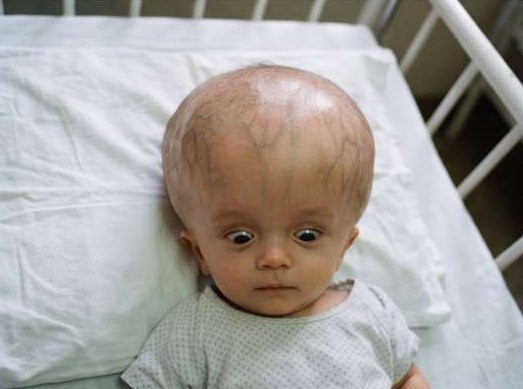
Hydrocephalus: large head, dilated scalp veins, sunset eyes
10. Fontanelles
Infant skull from above · fontanelles and sutures
Anterior
Diamond · 2.5–4 cm at birth · closes at 12–18 months
Chapter 1 · 1.1 Normal Growth & Growth ChartsTeeth, Bone Age & Mid-Upper Arm Circumference16
Permanent teeth (32):
First is the first molar at 6 years
Complete by 12–14 years except the third molars (17–21 years)
Delayed teething = no tooth by 13 months. The commonest cause is idiopathic or familial; disease causes are hypothyroidism, rickets, hypopituitarism, hypoparathyroidism and Down syndrome
Natal teeth (present at birth): remove if loose (risk of aspiration)
12. Bone age
Measures skeletal maturity
After 1 year: X-ray of the left hand and wrist, compared with a standard atlas (Greulich–Pyle)
At birth:
Distal femur epiphysis on knee X-ray is present in a term baby
Absent in congenital hypothyroidism
Carpal bones: first appears at about 2–3 months, then roughly one per year
Bone age shows how much growth is left: a delayed bone age means more growth to come, because the epiphyses stay open longer
Delayed bone age
Advanced bone age
Hypothyroidism (most delayed)
Precocious puberty
GH deficiency
CAH (androgen excess)
Constitutional delay of growth
Hyperthyroidism
Malnutrition, chronic disease
Simple obesity
Cushing syndrome, steroid therapy
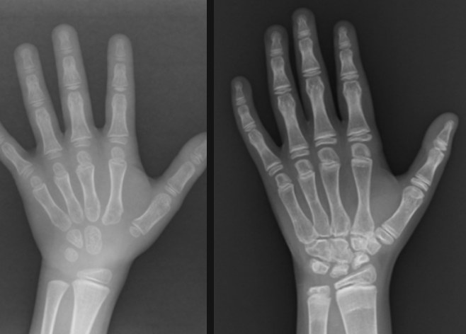
Bone age: young hand with few carpal bones (left) · older hand with all carpal bones and epiphyses formed (right)
Exam trap
Familial short stature: bone age equals the actual age; the parents are short.
Constitutional delay: bone age is delayed (equal to the height age); puberty is late; final height is normal.
13. Mid-upper arm circumference (MUAC)
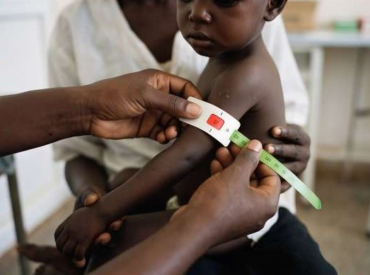
MUAC at the midpoint of the left upper arm
MUAC tape · WHO and CMAM cut-offs for children 6–59 months
Chapter 1 · 1.2 Developmental MilestonesPrinciples of Development & Primitive Reflexes19
1.2Developmental Milestones
Development is the gain of skills in four fields. The sequence of milestones is the same in all children; the rate varies. Development goes from head to feet (head control → sitting → standing → walking) and from reflex to voluntary movement, because the nervous system matures in that order. Development is checked at every visit, because delay found early can be treated (hearing aids, thyroxine, physiotherapy) while the young brain is still adapting.
1. Fields of development
Gross motor
Posture and movement: head control, sitting, standing, walking · fastest progress in the first year
Fine motor and vision
Grasp, pincer, cubes, drawing
Needs normal vision
Fastest after 1 year
Hearing, speech and language
Babble → words → sentences
Needs normal hearing
Fastest after 18 months
Social, emotional and behaviour
Smiling, stranger awareness, feeding, dressing, toilet control, play · fastest after 2½ years
2. Interpreting milestones
Median age: half of normal children have the skill
Limit age: about 2 SD later, the age by which almost all have it
Failure to reach the limit age needs assessment
The first routine developmental check is at 6 weeks
After 6 years development is judged mainly by school performance
Preterm: use corrected age (subtract the weeks born early) until 2 years: a 9-month-old born at 28 weeks is assessed as a 6-month-old
Assess each field separately, then compare with the child's age: delay in one field (specific) or in two or more (global)
About 85% of infants crawl before they walk. Bottom shufflers move sitting on the bottom, often skip crawling, walk late (up to 18–24 months), often familial, normal tone and other fields
Early intervention by a team: physiotherapy, speech and occupational therapy, special education
Treat the cause (e.g. thyroxine)
Support the family
Best next step
Isolated speech delay → hearing test first, because hearing loss is common, treatable and easily missed. Regression at any age → urgent referral: MRI brain and metabolic screen.
Chapter 1 · 1.3 Failure to Thrive & Short StatureFailure to Thrive: Definition & Causes26
1.3Failure to Thrive & Short Stature
Failure to thrive (FTT) is a sign, not a diagnosis: a young child, usually under 2 years, who does not gain weight as expected. It happens when the energy taken in is less than the energy the child needs or loses, and the commonest cause is simply inadequate intake. It matters because the first two years are the period of fastest brain growth, so prolonged undernutrition can permanently impair growth and development.
1. Definition
Low weight
Weight-for-age below −2 SD (3rd centile) on repeated measurements
Falling weight
Weight crossing two major centile lines downward
Wasting
Weight-for-length below −2 SD
Young infant
Under 6 months with no weight gain for 2–3 months
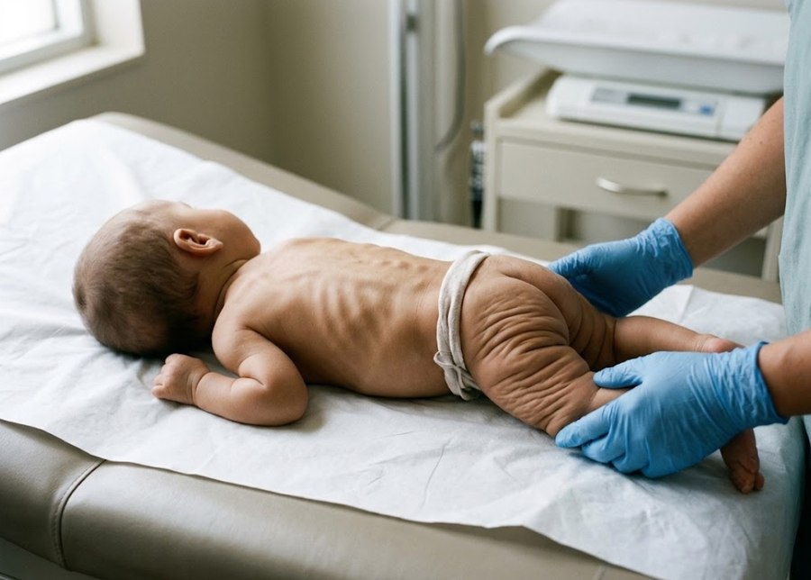
Severe wasting: visible ribs, loose skin folds on buttocks and thighs ("baggy pants")
2. Causes
Inadequate intake (commonest)
Too little food: poverty, poor breastfeeding technique, over-diluted formula, late or poor complementary feeding, neglect
Murmur: echocardiography; acidosis: venous gas (RTA)
Dysmorphic: karyotype; short: bone age
7. Management
Treat the cause
For example heart failure, coeliac disease or TB
Catch-up feeding
About 150 kcal/kg/day (based on expected weight), compared with the normal infant need of 100–120 kcal/kg/day, because extra energy is needed to rebuild lost tissue
Energy-dense food in 5–6 small meals a day
Feeding counselling
Breastfeeding support, correct formula preparation, good complementary food
Meals without distraction; no force-feeding
Micronutrients and worms
Vitamin A, zinc, iron and multivitamins
Albendazole for worms (over 1 year)
Follow-up and monitoring
Weigh every 2 weeks until catch-up growth
The first sign of improvement is a better appetite, then a weight gain of 5–10 g/kg/day (faster than normal) and a curve that climbs back towards its centile
No gain after 2–4 weeks of good intake: look for an organic cause, or admit to observe feeding
Admit if
SAM with complications (CMAM criteria)
Suspected abuse or severe neglect
No weight gain despite outpatient care
Feeding and weight gain need to be observed
IMCI
Check every sick child for acute malnutrition (oedema, MUAC, WFH)
Assess feeding in children under 2 years, and in any child with anaemia or MAM
Counsel the mother on feeding and arrange follow-up; review a child with MAM in 30 days
Chapter 1 · 1.4 ImmunizationTypes of Vaccines & the EPI Schedule33
1.4Immunization
Immunization gives protection before exposure: a vaccine makes the immune system produce antibodies and memory cells without the child suffering the disease. The Expanded Programme on Immunization (EPI) gives every child free vaccines against the major childhood killers in the first 18 months, the age at which these infections are most dangerous. Every contact with a sick or well child is a chance to check and complete the vaccines.
Papule at 2–6 weeks → small ulcer → scar by 3 months (proof of vaccination)
BCG lymphadenitis (axillary)
Local abscess
Disseminated BCG in immunodeficiency
Protects mainly against severe TB (miliary, meningitis), not lung TB
OPV
None
Vaccine-associated paralytic polio (very rare: about 1 in 750 000 first doses)
Virus shed in stool immunises contacts → herd immunity
Gut (IgA) immunity
IPV
Local pain
No paralysis risk · safe in immunodeficiency
Pentavalent
Fever, pain, swelling, crying (1–2 days)
From pertussis: high fever, febrile seizure, persistent crying > 3 hours, hypotonic-hyporesponsive episode
Encephalopathy (very rare)
PCV
Fever, local reaction
Protects against pneumonia, meningitis, otitis media
Rotavirus
Mild diarrhoea, irritability
Intussusception (very rare) · give on time, by the schedule
Measles (MR)
Fever and a mild rash at 7–12 days
Febrile seizure
Thrombocytopenia (rare)
Encephalitis (very rare)
Meningococcal A
Local pain, fever
Protects against epidemic meningitis (African meningitis belt)
Best next step
Anaphylaxis after a vaccine → adrenaline 0.01 mg/kg IM (1:1000, 0.01 ml/kg, maximum 0.5 ml), repeat every 5–15 minutes
Response: wheeze and stridor ease and the pulse and blood pressure recover within minutes; no response after two doses → airway support and an IV fluid bolus in hospital
A concise revision guide for medical students · 1st edition · 2026
Part I · General PediatricsChapter 2
Nutrition
In this chapter
2.1
Infant & Young Child FeedingBreastfeeding · weaning · formula
39
2.2
Severe Acute MalnutritionSAM · MAM · F-75 · F-100 · RUTF
44
2.3
RicketsNutritional and resistant rickets
52
2.4
Vitamin & Micronutrient DeficienciesVitamin A · zinc · iodine · B vitamins
57
Pediatric Master Review1st edition · 2026
Chapter 2 · 2.1 Infant & Young Child FeedingBreastfeeding39
2.1Infant & Young Child Feeding
Breast milk is the best food for every infant. WHO and IMCI advise: start breastfeeding within the first hour, give only breast milk for 6 months, then add complementary food and continue breastfeeding to 2 years or beyond. Breast milk matters most in poor settings: it is clean, always at the right temperature and full of protective antibodies, so breastfed infants have far less diarrhoea, pneumonia and malnutrition than bottle-fed infants.
1. Physiology of lactation
Reflex
Hormone
Effect
Milk production
Prolactin (anterior pituitary)
Suckling → milk secretion
More suckling = more milk, because each feed stimulates prolactin release (supply follows demand)
Milk ejection (let-down)
Oxytocin (posterior pituitary)
Milk flows out
Also contracts the uterus
Stress and pain inhibit it
Infant reflexes
Rooting, sucking, swallowing
Coordinated sucking and swallowing from about 34 weeks
2. Types of breast milk
Colostrum
First 3–5 days
Small volume, thick, yellow
More protein, IgA, white cells and vitamin A, less fat and lactose
Mild laxative (passes meconium)
Transitional milk
Day 5 to 2 weeks
Mature milk
From about 2 weeks
About 67 kcal/100 ml
Foremilk (start of feed): watery, quenches thirst
Hindmilk (end of feed): 3 times more fat, gives satiety
Preterm mother's milk
More protein, fat and IgA than term milk · needs a fortifier for very low birth weight infants
Exam trap
Hindmilk (end of the feed) has more fat than foremilk, not the other way round.
Colostrum has more IgA and protein than mature milk.
Chapter 2 · 2.2 Severe Acute MalnutritionDefinition & Classification44
2.2Severe Acute Malnutrition
Severe acute malnutrition (SAM) is the severe end of protein-energy malnutrition (PEM): a lack of protein and energy, usually with infection and vitamin and mineral deficiencies. It is a leading cause of death under 5 years, usually through infection, hypoglycaemia, hypothermia or fluid overload, and correct step-by-step care prevents most of these deaths. Diagnosis and treatment follow the WHO 2023 guideline and the CMAM programme.
1. Diagnosis of acute malnutrition (WHO 2023, 6–59 months)
MUAC
Weight-for-height
Oedema
SAM (any one)
< 11.5 cm
< −3 SD
Bilateral pitting (any grade)
MAM
11.5 to < 12.5 cm
−3 to < −2 SD
None
Normal
≥ 12.5 cm
≥ −2 SD
None
SAM is seen without oedema (a wasted child; marasmus) or with oedema (kwashiorkor); oedema together with severe wasting (marasmic kwashiorkor) is the most severe form.
Exam trap
Oedema hides the weight loss: a child with SAM with oedema may have a near-normal weight. A very low weight without oedema is marasmus, not kwashiorkor.
Underweight is not the same as wasting: wasting means loss of fat and muscle (low weight-for-height), not just a low weight-for-age.
Bilateral pitting oedema makes the diagnosis SAM whatever the weight or MUAC.
2. Aetiology and risk factors
Primary (dietary)
Poverty, food shortage, displacement
Failure of breastfeeding or over-diluted formula (SAM without oedema)
Late or poor complementary feeding
Abrupt weaning onto a starchy, low-protein diet (SAM with oedema)
Chapter 2 · 2.2 Severe Acute MalnutritionSAM Without and With Oedema46
Oedema grade
Extent
+ (mild)
Both feet
++ (moderate)
Feet + lower legs, hands or lower arms
+++ (severe)
Generalised, including the face
Test: press both feet with the thumbs for 3 seconds; a pit on both feet = nutritional (bilateral pitting) oedema.
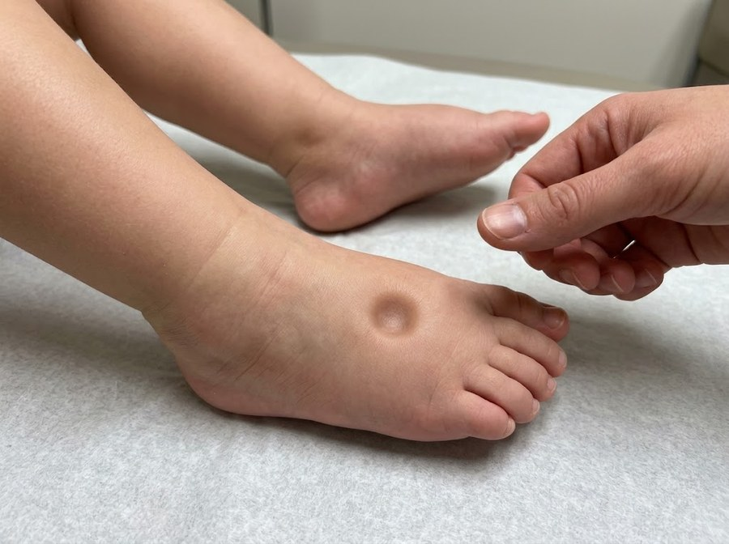
Pitting oedema on the dorsum of the foot
Causes of oedema:
Low albumin (low oncotic pressure)
Leaky capillaries (free radicals, infection)
Salt and water retention (renin–angiotensin–aldosterone, ADH)
Fatty liver: low apolipoprotein → fat cannot leave the liver
Oedema with severe wasting (marasmic kwashiorkor): the sickest group
Exam trap
SAM with oedema (kwashiorkor) is not caused by calorie deficiency alone: protein deficiency and infection play the main part. SAM without oedema (marasmus) is the adaptation to starvation.
Serum albumin is low in SAM with oedema, never raised.
The large liver of SAM with oedema is due to fatty infiltration, and it is a bad sign.
5. Complications and causes of death
Hypoglycaemia
Blood glucose < 3 mmol/L (54 mg/dL) · often with hypothermia and infection
Hypothermia
Axillary temperature < 35 °C (rectal < 35.5 °C) · more common in SAM without oedema
Infection
Bronchopneumonia (commonest cause of death), sepsis, diarrhoea, TB, skin infection
Usually no fever and few signs, because the immune response is weak
Dehydration, electrolytes
Diarrhoea → dehydration · low potassium and magnesium, total body sodium high
Heart failure
From severe anaemia, too much IV fluid or sodium, or too fast refeeding
Poor prognostic signs: hypoglycaemia, hypothermia, jaundice, large liver, purpura, deep corneal ulcer, very low albumin, shock
Refeeding syndrome: feeding too fast → low phosphate, potassium and magnesium → heart failure, death
Exam trap
A child with SAM who has an infection often has no fever; hypothermia and hypoglycaemia are signs of infection, so every child gets antibiotics.
Skin pinch and sunken eyes overestimate dehydration in SAM without oedema; treating them as normal children gives fluid overload and heart failure.
6. Where to treat (CMAM)
Stabilisation centre (admit)
OTP (outpatient)
Medical complication: pneumonia, severe dehydration, shock, hypoglycaemia, hypothermia, severe anaemia, convulsions, lethargy
Failed appetite test
Oedema +++, or oedema with severe wasting
Infant under 6 months who is not feeding well, has oedema or a complication
SAM that is alert, has no medical complication, oedema + or ++, and passes the appetite test
RUTF at home with visits every week
Best next step · a child with SAM and no complication
Do the appetite test: give the child a sachet of RUTF in a quiet place with water to drink.
The child eats at least the test amount for his weight (on the CMAM chart) within 30 minutes → passes → OTP. The child refuses or eats less → fails → admit.
Ampicillin 50 mg/kg IV/IM 6-hourly for 2 days, then oral amoxicillin to complete 7 days
Plusgentamicin 7.5 mg/kg IV/IM once daily for 7 days
No improvement in 48 h → ceftriaxone
Vaccine
Measles vaccine if 6 months or older and not vaccinated
Vitamin A
F-75, F-100 and RUTF already contain it · high dose only with eye signs or measles: < 6 m 50,000 IU · 6–12 m 100,000 IU · > 12 m 200,000 IU orally on day 1, day 2 and day 14
Folic acid, zinc, copper
Folic acid 5 mg on day 1, then 1 mg daily · zinc, copper, potassium and magnesium from the mineral mix
Iron
Not in the stabilisation phase, because free iron feeds bacteria and increases oxidative damage
Start when the child gains weight (week 2): 3 mg/kg/day (RUTF already contains iron)
10. Steps 7–8: feeding
F-75 (stabilisation)
Feeds a day
Volume per feed
Days 1–2
2-hourly (12 feeds)
11 ml/kg
Days 3–5
3-hourly (8 feeds)
16 ml/kg
Days 6–7
4-hourly (6 feeds)
22 ml/kg
F-75:
75 kcal and 0.9 g protein per 100 ml
Total 130 ml/kg/day (100 ml/kg/day with oedema +++)
By cup; NGT if the child takes less than 80%
Low protein and sodium: the liver, gut and heart cannot handle more at first
Transition when appetite returns and oedema is reducing: replace F-75 by the same volume of F-100 (100 kcal, 2.9 g protein per 100 ml) or RUTF for 2 days, then increase
Catch-up: F-100 150–220 ml/kg/day or RUTF · target gain > 10 g/kg/day
Chapter 2 · 2.3 RicketsDefinition, Vitamin D & Causes52
2.3Rickets
Rickets is defective mineralisation of the growing bone (growth plate and osteoid) in children; the same defect after the growth plates close is osteomalacia. The commonest cause is nutritional rickets from vitamin D deficiency, low calcium intake, or both. It matters because untreated rickets leaves permanent bone deformity and short stature, and the low calcium can cause seizures in young infants, while simple vitamin D and calcium prevent it. Treatment and prevention follow the Global Consensus on Nutritional Rickets.
1. Vitamin D metabolism
25(OH)D is the storage form and the test of vitamin D status · 1,25(OH)2D is the active form
2. Calcium and phosphate balance
Active vitamin D (1,25(OH)2D)
Parathyroid hormone (PTH)
Gut
↑ Absorption of calcium and phosphate from the small intestine (mainly duodenum and jejunum); without it only about 10–15% of dietary calcium is absorbed
No direct effect; acts by ↑ 1α-hydroxylase, so ↑ active vitamin D
Supplies calcium and phosphate for mineralisation of osteoid
↑ Resorption: releases calcium and phosphate from bone
Net effect
↑ Calcium and ↑ phosphate
↑ Calcium, ↓ phosphate
Why nutritional rickets has low phosphate but often normal calcium
Lack of vitamin D → less calcium absorbed from the gut → serum calcium falls → PTH rises (secondary hyperparathyroidism). PTH pulls calcium out of bone and keeps it in the urine, so serum calcium is often normal, but it makes the kidney lose phosphate, so phosphate is low. Without enough calcium × phosphate the growing bone cannot mineralise: rickets.
Chapter 2 · 2.3 RicketsClinical Features & Investigations55
X-ray of the wrist (or knee):
Widened, cupped and frayed metaphysis
Wide gap to the carpal bones
Thin cortex, low density
Healing: a white line of calcification at the metaphysis within 2–4 weeks of vitamin D (the earliest sign of response)
ALP is the best blood marker of activity: it rises early and falls to normal with healing
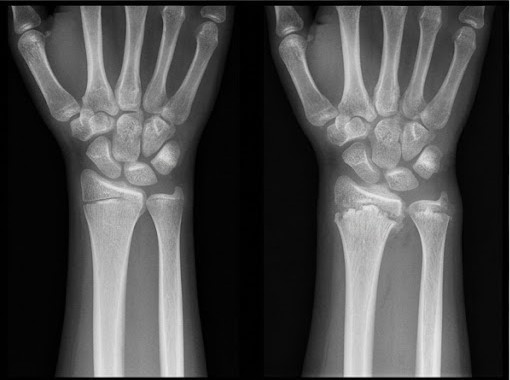
Normal wrist (left) · active rickets (right): cupped, frayed metaphysis
Urine: phosphaturia, aminoaciduria from secondary hyperparathyroidism
Confirm the cause: 25(OH)D (deficiency below 30 nmol/L), and calcium intake
Exam trap
Nutritional rickets has low phosphate; a raised serum phosphate points to chronic kidney disease, not nutritional rickets.
Serum calcium is often normal because PTH keeps it up at the cost of bone and phosphate.
7. Treatment and prevention of nutritional rickets (Global Consensus)
Age
Daily oral vitamin D for 12 weeks
Or single oral dose (stoss)
Then maintenance
Under 3 months
2000 IU/day
Not used
400 IU/day
3–12 months
2000 IU/day
50,000 IU once
400 IU/day
1–12 years
3000–6000 IU/day
150,000 IU once
600 IU/day
Over 12 years
6000 IU/day
300,000 IU once
600 IU/day
Calcium with every regimen: 500 mg elemental calcium daily orally (diet or tablets)
Daily oral treatment is preferred; the single stoss dose is for children who may not take daily drops
Advise sunlight, milk and dairy foods · no weight bearing on soft, bent bones while active
Monitoring the response:
The first sign is a dense healing line on the wrist X-ray at 2–4 weeks, with a falling ALP
ALP and wrist X-ray at 3 months; continue until both are normal, then the maintenance dose
No healing at 3 months → check that the doses were taken, then look for a non-nutritional cause (malabsorption, kidney disease, hypophosphataemic rickets)
Most bowing corrects with growth; osteotomy only for severe deformity persisting after healing
Chapter 2 · 2.4 Vitamin & Micronutrient DeficienciesVitamin A Deficiency57
2.4Vitamin & Micronutrient Deficiencies
Micronutrients are vitamins and minerals needed in small amounts. Their deficiency is common with poor diet, SAM, diarrhoea and measles. Vitamin A, zinc, iodine and iron are the important deficiencies in children; Even a mild deficiency weakens immunity, so these deficiencies increase deaths from measles, diarrhoea and pneumonia; supplementation follows WHO and the EPI.
1. Vitamin A: function and causes of deficiency
Vision: forms rhodopsin for dim-light vision
Epithelium: keeps the conjunctiva, cornea, skin and gut lining healthy
Immunity: deficiency raises death from measles and diarrhoea, because the damaged epithelium and weak immune response let infection spread
Poor diet: no milk, eggs, liver, dark-green or orange vegetables
Chapter 2 · 2.4 Vitamin & Micronutrient DeficienciesVitamin A Deficiency58
Measles: the treatment dose on day 1 and day 2 for every child (lowers death and blindness); third dose at 2–4 weeks if eye signs
Exam trap
Night blindness is the earliest symptom; Bitot spots are the earliest sign seen on examination.
Too much vitamin A: acute → raised intracranial pressure (bulging fontanelle, vomiting); chronic → hair loss, dry itchy skin, bone pain, large liver. It is teratogenic in pregnancy.
Night blindness is due to vitamin A, never vitamin C.
4. Zinc
Deficiency
Poor growth, poor appetite
Diarrhoea
Frequent infections
Slow wound healing
Skin rash around the mouth and anus
Hair loss
Acrodermatitis enteropathica
Autosomal recessive defect of zinc absorption
Starts at weaning from breast milk
Triad: red scaly rash around the mouth, anus and on the hands and feet + diarrhoea + hair loss
Candida superinfection
Treatment: oral zinc for life (dramatic response)
Zinc in diarrhoea (WHO, IMCI)
Under 6 months 10 mg daily · 6 months and over 20 mg daily, for 10–14 days · shortens the episode and prevents new episodes for 2–3 months
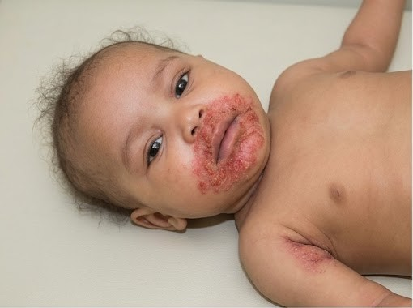
Acrodermatitis enteropathica: crusted rash around the mouth
5. Iodine
Needed for thyroid hormone
Deficiency is the commonest preventable cause of intellectual disability in the world
In pregnancy: miscarriage, stillbirth, endemic cretinism (deaf-mutism, intellectual disability, short stature, spasticity)
In children: goitre, hypothyroidism, poor school performance
Prevention: iodised salt for every household · iodised oil capsules where salt is not iodised
Anaemia and neutropenia in preterm infants and malnutrition
Selenium
Cardiomyopathy (Keshan disease)
Fluoride
Too little → dental caries · too much → mottled teeth (fluorosis)
Exam trap
A napkin rash that spreads around the mouth with diarrhoea and hair loss after weaning is acrodermatitis enteropathica (zinc), not simple ammoniacal dermatitis.
ALP is a zinc-dependent enzyme: it may stay low in rickets with malnutrition or zinc deficiency.
7. Fat-soluble vitamins (A, D, E, K)
A, D
Vitamin A: first page of this topic · vitamin D: Rickets (2.3)
E
Antioxidant · deficiency in preterm infants (haemolytic anaemia) and fat malabsorption (ataxia, neuropathy)
K
Clotting factors II, VII, IX, X
Newborns are low → vitamin K deficiency bleeding
Prevented by vitamin K 1 mg IM at birth
Also in liver disease and fat malabsorption
Exam trap
Vitamin and disease pairs:
B1 → beriberi
B3 → pellagra
B6 → peripheral neuritis
C → scurvy
K → raised prothrombin time. "B12 → pellagra" is the false pair.
Fat-soluble vitamins (A, D) are stored and can be toxic; water-soluble vitamins are not stored and rarely toxic.
Bleeding gums are seen in scurvy only when teeth have erupted.
Chapter 3 · 3.1 The Normal NewbornDefinitions & Normal Values62
3.1The Normal Newborn
The neonatal period is the first 28 days of life: early (days 0–7) and late (days 8–28). Most neonatal deaths happen in the first week, from prematurity, birth asphyxia and infection. Simple care in this week (warmth, early breastfeeding, clean cord care and early recognition of danger signs) prevents most of these deaths.
1. Definitions
By gestation
Preterm
Before 37 completed weeks
Term
37 to 41 completed weeks
Post-term
42 weeks or more
Stillbirth
Born with no signs of life at ≥ 28 weeks (WHO)
By birth weight
LBW
< 2500 g
VLBW
< 1500 g
ELBW
< 1000 g
SGA · AGA · LGA
Birth weight < 10th
10th–90th
> 90th centile for gestation
Perinatal mortality rate: stillbirths + deaths in the first week per 1000 total births
Neonatal mortality rate: deaths in the first 28 days per 1000 live births
2. Normal values of a term newborn
Weight · length · OFC
2.5–4 kg · about 50 cm · about 35 cm
Weight change
Loses up to 10% in the first 3–5 days
Regains birth weight by 10–14 days
Then gains 25–30 g/day
Heart rate
120–160/min
Respiratory rate
40–60/min · abdominal, nose breathing, may be periodic
Temperature
Axillary 36.5–37.5 °C
Blood glucose
≥ 2.6 mmol/L (47 mg/dL) after the first hours
Haemoglobin
14–20 g/dL at birth · falls to a low of 10–11 g/dL at 8–12 weeks (physiological anaemia)
Meconium · urine
Meconium within 24–48 h (most in 24 h) · urine within 24 h
Chapter 3 · 3.2 Neonatal ResuscitationPreparation, Apgar & the Golden Minute66
3.2Neonatal Resuscitation
About 1 in 10 newborns needs help to start breathing and fewer than 1 in 100 needs chest compressions or drugs. Ventilation of the lungs is the single most important step, because almost every newborn who needs resuscitation has a heart that slows from lack of oxygen, and the heart recovers once the lungs are aerated. The steps follow the 2025 neonatal resuscitation guidelines (ILCOR, AHA–AAP, ERC) and Helping Babies Breathe.
1. Deliveries that need a person trained in resuscitation
Known fetal anomaly (diaphragmatic hernia, hydrops)
Prepare: a warm room and radiant warmer, dry towels, a bag and mask (sizes 0 and 1), suction, oxygen with a blender, pulse oximeter, laryngoscope and tubes (2.5–3.5 mm), umbilical catheter, adrenaline 1:10,000.
2. Apgar score
Sign
0
1
2
Appearance (colour)
Blue or pale
Body pink, extremities blue
Pink all over
Pulse (heart rate)
Absent
< 100/min
≥ 100/min
Grimace (reflex)
None
Grimace
Cry, cough, sneeze
Activity (tone)
Limp
Some flexion
Active movement
Respiration
Absent
Slow, irregular, gasping
Good, crying
Scored at 1 and 5 minutes, then every 5 minutes while resuscitation continues
7–10 normal, 4–6 moderately low, 0–3 low
Resuscitation never waits for the 1-minute Apgar: decide on breathing, heart rate and tone
Meconium-stained liquor: a vigorous baby gets routine care; a non-vigorous baby gets ventilation within the first minute. Routine tracheal suction is no longer done; suction only if the airway is blocked.
Term babies are resuscitated in air (21%), not 100% oxygen; oxygen goes up to 100% only with chest compressions.
The compression ratio in the newborn is 3 : 1 (90 compressions + 30 breaths per minute), not 15 : 2.
4. Drugs in neonatal resuscitation
Drug
Dose and route
Indication
Adrenaline 1:10,000
0.1–0.3 ml/kg (10–30 µg/kg) IV via umbilical vein or IO, every 3–5 min
Down the tube 0.5–1 ml/kg only while IV access is being placed
HR < 60/min despite 30 s of good ventilation and compressions
Volume
0.9% saline 10 ml/kg IV over 5–10 min, may repeat · O-negative blood if major blood loss
Suspected blood loss, shock, poor response
Glucose 10%
2 ml/kg IV, then an infusion
Low blood glucose after prolonged resuscitation
Sodium bicarbonate is not used routinely. The umbilical vein is the quickest IV route in the delivery room.
MMask: adjust the sealRReposition the head (neutral)SSuction mouth and noseOOpen the mouthPPressure: increaseAAlternative airway (tube or laryngeal mask)
Best next step · HR stays low and the chest does not move despite repositioning
Secure the airway with an endotracheal tube or laryngeal mask, confirm chest movement, then reassess the heart rate.
Chest compressions and adrenaline work only after the lungs are being inflated.
Chapter 3 · 3.3 Preterm, Small & Large BabiesPrematurity: Causes, Features & Care69
3.3Preterm, Small & Large Babies
A preterm baby is born before 37 completed weeks (about 10% of births). Grades: extremely preterm < 28 weeks · very preterm 28 to < 32 weeks · moderate to late preterm 32 to < 37 weeks. Prematurity is the leading cause of neonatal death, because every organ (lungs, brain, gut, skin, immune system) is still immature; most of these deaths are prevented by warmth, breast milk and treatment of infection.
1. Causes
Idiopathic spontaneous preterm labour (the commonest)
The New Ballard score estimates gestation (± 2 weeks) from 6 physical and 6 neuromuscular signs (posture, square window, arm recoil, popliteal angle, scarf sign, heel to ear).
3. Intrauterine growth restriction (IUGR) and SGA
Symmetrical
Asymmetrical (head sparing)
Measurements
Weight, length and head all small
Weight mainly small · head and length nearly normal
Timing
Early pregnancy
Late pregnancy (third trimester)
Causes
Chromosomal (trisomy 13, 18, 21), congenital infection (TORCH), constitutionally small
Chapter 3 · 3.3 Preterm, Small & Large BabiesPrematurity: Causes, Features & Care70
4. Care of the preterm baby
Before birth
Antenatal corticosteroids (dexamethasone or betamethasone) at 24–34 weeks when preterm birth is expected (WHO), because they speed surfactant production and reduce RDS, IVH and death
Magnesium sulfate before 32 weeks (brain protection)
Antibiotics for preterm rupture of membranes
Warmth
Kangaroo mother care (KMC): continuous skin-to-skin on the mother's chest, started immediately after birth for every baby < 2000 g once able to breathe (WHO 2022): it keeps the baby warm, supports breastfeeding and reduces infection and death
Incubator if unstable
Feeding
Mother's own breast milk (donor milk next)
By NGT before 32–34 weeks, cup or breast later
Small trophic feeds first, increase daily
Human milk fortifier for < 1500 g
Fluids
10% glucose 60–80 ml/kg/day on day 1, increase by 20 ml/kg/day to 150 ml/kg/day
Add sodium and potassium from day 2–3
Supplements
Vitamin D · iron from 2–6 weeks · vitamin K at birth
Monitoring growth
Weigh daily
Regains birth weight by 2–3 weeks
Then gains about 15–20 g/kg/day
Poor gain → check feed volume, fortifier, infection and anaemia
Discharge
Feeding well by breast or cup
Gaining weight
Stable temperature
Mother confident (usually about 1800 g)
5. Large for gestational age
Birth weight > 90th centile; macrosomia > 4 kg (or 4.5 kg)
Causes: maternal diabetes, large parents, Beckwith–Wiedemann syndrome, hydrops
Chapter 3 · 3.4 Respiratory Distress & Cyanosis in the NewbornCauses & Respiratory Distress Syndrome73
3.4Respiratory Distress & Cyanosis in the Newborn
Respiratory distress in a newborn means RR > 60/min with any of: grunting, nasal flaring, chest recession (subcostal, intercostal, sternal) or cyanosis. It is one of the commonest reasons for admission to the neonatal unit. The cause is often outside the lungs (heart, sepsis, hypoglycaemia, hypothermia), so every baby with distress needs a search for the cause as well as oxygen.
1. Causes of respiratory distress in the newborn
Lungs
TTN (the commonest at term), RDS (the commonest in preterm), meconium aspiration, pneumonia, pneumothorax and pulmonary hypoplasia
Airway
Bilateral choanal atresia (newborns breathe through the nose, so the baby is pink only when crying), Pierre Robin sequence, oesophageal atresia with fistula (frothy saliva, NGT coils in the pouch)
Cause: surfactant deficiency (made by type II pneumocytes, mature at 35 weeks) → alveoli collapse at the end of expiration, so each breath must re-open them and the baby tires
Risk ↑: prematurity (the main one), infant of a diabetic mother, male, second twin, elective caesarean section, asphyxia, hypothermia
Clinical: distress within 4 hours of birth, worsening over 48–72 h, then improving as the baby starts making surfactant; grunting (expiration against a closed glottis keeps the alveoli open) and reduced air entry
Chest X-ray: diffuse ground-glass (reticulogranular) lungs with air bronchograms and small lung volume; "white-out" if severe
Group B streptococcal pneumonia looks the same clinically and on X-ray, so take a blood culture and start antibiotics
3. Pneumothorax
Follows ventilation or bag-and-mask, RDS or meconium aspiration (stiff lungs and high pressure rupture the alveoli); sudden deterioration, reduced air entry on one side, shift of the apex beat
Bright transillumination of the chest; X-ray: black lung field without markings and mediastinal shift
Chapter 3 · 3.4 Respiratory Distress & Cyanosis in the NewbornCauses & Respiratory Distress Syndrome74
Respiratory support
CPAP (6–8 cm H2O) from birth is the first choice, because the constant pressure keeps the alveoli open; ventilation if CPAP fails; target SpO2 90–94% (higher oxygen damages the retina and lungs)
Surfactant
Natural surfactant (poractant 200 mg/kg) by tube or thin catheter (LISA) when oxygen need rises above 30% on CPAP; a second dose may be given if the oxygen need stays high
Supportive
Thermal care, IV fluids and glucose, ampicillin + gentamicin until cultures are negative, caffeine in very preterm babies
Monitoring the response
First sign of improvement: falling oxygen need and less recession. Targets: SpO2 90–94%, normal blood gas. Signs of failure on CPAP: oxygen need above 40%, recurrent apnoea, rising PaCO2 or acidosis → surfactant and ventilation. A sudden deterioration suggests a pneumothorax
4. Transient tachypnoea compared with meconium aspiration
Transient tachypnoea (TTN)
Meconium aspiration syndrome
Cause
Slow clearance of fetal lung fluid
Fetal hypoxia → meconium passed and inhaled → airway block, air trapping, chemical pneumonitis
Baby
Term, elective caesarean without labour, maternal diabetes or sedation
Term or post-term, fetal distress, meconium-stained skin, nails and cord
Course
Mild distress soon after birth · settles in 24–48 h
Severe distress, cyanosis · may cause PPHN and pneumothorax
Chest X-ray
Streaky hilar markings, fluid in the horizontal fissure, mild hyperinflation
Hyperinflation with patchy collapse and consolidation, air leak
Treatment
Oxygen or CPAP if needed, IV fluids until RR settles · diagnosis of exclusion
Oxygen, ventilation, surfactant, antibiotics · inhaled nitric oxide for PPHN
5. Congenital diaphragmatic hernia
Bowel herniates into the chest, usually left posterolateral (Bochdalek); the compressed lung does not grow, so pulmonary hypoplasia decides survival
Severe distress at birth, scaphoid abdomen (the bowel is in the chest), heart sounds on the right and bowel sounds in the chest; often seen on antenatal ultrasound
X-ray: bowel loops in the left chest, mediastinum pushed right
Intubate at once: bag-and-mask air fills the bowel in the chest and compresses the lung further. Pass an NGT to decompress the stomach, stabilise, then repair surgically
6. Cyanosis
Central: blue tongue and lips, seen when reduced Hb is above 5 g/dL; always abnormal
Peripheral (acrocyanosis): blue hands and feet with a pink tongue; normal in the first day, otherwise due to cold or shock
Cyanosis without much distress, a murmur or weak femoral pulses, no rise in SpO2 with oxygen, and worsening as the duct closes (day 2–5)
Duct-dependent lesion
Prostaglandin E1 infusion5–10 ng/kg/min (higher if the duct is closing) keeps the duct open, so blood can mix until surgery; side effect: apnoea (be ready to ventilate); refer to a cardiac centre
PPHN
Pulmonary pressure stays high after birth → right-to-left shunt through the duct and foramen ovale; follows MAS, asphyxia, sepsis or CDH; labile oxygen, pre-ductal SpO2 higher than post-ductal; ventilation and inhaled nitric oxide (a pulmonary vasodilator)
7. Apnoea
Pause in breathing ≥ 20 seconds, or shorter with bradycardia or cyanosis; it matters because repeated hypoxia injures the brain
Apnoea of prematurity: immature respiratory centre, from day 2, a diagnosis of exclusion
Jaundice is seen in the newborn when serum bilirubin is above 5 mg/dL (85 µmol/L); it affects about 60% of term and 80% of preterm babies. Most is unconjugated and harmless, but high levels cross the brain and cause kernicterus. Management follows the AAP 2022 hour-specific charts.
1. Why newborns become jaundiced
More bilirubin made: high red cell mass (Hb 14–20 g/dL) and shorter red cell life (70–90 days)
Less cleared: low glucuronyl transferase activity in the immature liver, so less bilirubin is conjugated
More reabsorbed: increased enterohepatic circulation, because the gut is sterile and feeding is slow at first
2. Physiological compared with pathological jaundice
Physiological
Pathological (any one)
Onset
After 24 hours (day 2–3)
In the first 24 hours
Peak level
Term ≤ 12 mg/dL on day 3–4; preterm ≤ 15 mg/dL on day 5–7
Above the phototherapy line for age
Rate of rise
< 5 mg/dL per day
> 5 mg/dL per day (or > 0.2 mg/dL per hour)
Type
Unconjugated only
Conjugated > 1–2 mg/dL (or > 20% of total)
Duration
Gone by day 10 (term), 14 (preterm)
> 14 days term, > 21 days preterm
Baby
Well, feeding
Ill, pale, large liver or spleen, dark urine, pale stools
3. Causes by time of onset
First 24 hours
Haemolysis (Rh and ABO incompatibility, G6PD deficiency, spherocytosis); congenital infection (TORCH) and sepsis
Day 2 to 14
Physiological (the commonest) and breastfeeding jaundice
Sepsis, prematurity, haemolysis
Bruising, cephalhaematoma and polycythaemia (extra red cells to break down)
After 14 days
Unconjugated: breast milk jaundice, hypothyroidism, UTI, haemolysis, Crigler–Najjar
Usually spared (sensitisation at the first delivery, miscarriage or transfusion)
Can be affected (anti-A and anti-B already present)
Severity
Severe: anaemia, hepatosplenomegaly, hydrops fetalis, early severe jaundice
Commoner but milder, no hepatosplenomegaly
Direct Coombs test
Strongly positive
Weakly positive or negative · spherocytes on film
Prevention
Anti-D immunoglobulin to Rh-negative mothers at 28 weeks and within 72 hours of delivery of an Rh-positive baby (and after miscarriage, bleeding)
None
G6PD deficiency is X-linked, so it affects boys. It causes severe early jaundice, which may be triggered by naphthalene, drugs or infection; the Coombs test is negative because no antibody is involved.
5. Breast milk and breastfeeding jaundice
Breastfeeding jaundice
Breast milk jaundice
Timing
First week
From the end of week 1, may last up to 12 weeks
Cause
Too little milk → dehydration, weight loss, ↑ enterohepatic circulation
A factor in the milk (β-glucuronidase) ↑ reabsorption of bilirubin from the gut; the baby thrives
Management
More frequent breastfeeds, check attachment
Continue breastfeeding; it is a diagnosis of exclusion (check thyroid, urine and conjugated bilirubin)
6. Conjugated jaundice and biliary atresia
Conjugated (direct) bilirubin > 1–2 mg/dL: greenish jaundice, pale stools and dark urine (bile does not reach the gut and spills into urine); no risk of kernicterus, because conjugated bilirubin does not cross into the brain
Causes: biliary atresia and choledochal cyst; neonatal hepatitis (TORCH, sepsis); galactosaemia, α1-antitrypsin deficiency and cystic fibrosis
Biliary atresia: progressive obliteration of the bile ducts; a well baby with prolonged jaundice, pale stools and a firm liver
Ultrasound (small or absent gallbladder), HIDA scan (no excretion), cholangiogram, liver biopsy
Kasai portoenterostomy before 60 days (best before 45), because the liver becomes cirrhotic with time; liver transplant if it fails
Best next step · a baby still jaundiced at 2 weeks
Look at the stool and urine colour and measure total and conjugated (split) bilirubin.
Conjugated jaundice is never normal: refer at once to exclude biliary atresia.
Look at the skin in daylight, pressing it: jaundice spreads from head to feet as it rises; yellow palms and soles mean severe jaundice (IMCI)
Measure total serum bilirubin (or transcutaneous) in every visibly jaundiced baby in the first 24 h, and when it looks marked
Plot the level on the hour-specific chart for gestation and neurotoxicity risk factors (gestation < 38 weeks, haemolysis, sepsis, acidosis, albumin < 3 g/dL, instability)
Pathological jaundice:
blood groups of mother and baby, direct Coombs test
Hb, reticulocytes, blood film, G6PD
conjugated bilirubin, septic screen, thyroid
8. Phototherapy
Blue light (460–490 nm) changes unconjugated bilirubin into water-soluble isomers excreted in bile and urine
Started when bilirubin is above the phototherapy line for the baby's age in hours (term, no risk factors, after day 3: about 18–22 mg/dL)
Baby naked with eyes covered and maximum skin exposed, turned regularly; continue breastfeeding
Monitoring: bilirubin every 4–12 h (more often in haemolysis); it should fall within 4–6 h. Stop when it is well below the phototherapy line, and recheck 12–24 h later for rebound. A rising level despite intensive phototherapy → IVIG or exchange
Side effects: dehydration (↑ water loss), loose green stools, rash, temperature instability, separation from the mother
Bronze baby syndrome if used in conjugated jaundice, which is a contraindication
Skin colour is not a guide during phototherapy, because the light bleaches the skin: always measure serum bilirubin
9. Exchange transfusion and IVIG
Indications
Bilirubin above the exchange line despite intensive phototherapy
Any sign of acute bilirubin encephalopathy
Severe haemolytic anaemia
Method
Double volume (2 × 80–90 ml/kg) of fresh O Rh-negative blood (cross-matched with the mother, because her antibodies are in the baby) via the umbilical vein in small aliquots; it removes bilirubin and antibodies and corrects anaemia
0.5–1 g/kg over 2 h in isoimmune haemolysis when bilirubin keeps rising despite phototherapy; it blocks red cell destruction and reduces the need for exchange
Free unconjugated bilirubin is fat-soluble, crosses the blood–brain barrier and stains the basal ganglia and brainstem nuclei
Risk ↑ with prematurity, acidosis, sepsis, hypoxia, hypothermia and low albumin (less bilirubin bound), and with drugs that displace bilirubin from albumin (sulphonamides, ceftriaxone)
Neonatal sepsis is a systemic bacterial infection in the first 28 days and a leading cause of neonatal death. Signs are non-specific, so every sick newborn is treated as septic until proved otherwise. Treatment follows the WHO 2024 recommendations for young infants.
1. Early-onset compared with late-onset sepsis
Early-onset (first 72 h)
Late-onset (after 72 h)
Source
Mother: birth canal, ascending infection
Hospital (lines, tubes, hands) or community
Risk factors
Prolonged rupture of membranes > 18 h, maternal fever or chorioamnionitis, maternal GBS or UTI, preterm labour
Prematurity, long admission, IV lines, ventilation, poor hand hygiene, poor cord care
Organisms
Group B streptococcus, E. coli, Klebsiella, Listeria
Staph. aureus, coagulase-negative staph, Klebsiella, Pseudomonas, E. coli, Candida
Main picture
Pneumonia, respiratory distress, shock
Bacteraemia with meningitis, osteomyelitis, UTI
2. Clinical features
Poor feeding, lethargy, irritability, weak Moro and suck
Temperature instability: fever or hypothermia (commoner in preterm)
Respiratory distress, apnoea and cyanosis; mottled skin and slow capillary refill (poor perfusion)
Vomiting and distension, jaundice, hypo- or hyperglycaemia
Meningitis: bulging fontanelle, seizures, high-pitched cry; neck stiffness is rare because the open sutures and fontanelle absorb the pressure
Late: petechiae, bleeding (DIC), sclerema (hard skin, bad sign), shock
3. Monitoring the response
The first signs of improvement (within 24–48 h) are better feeding and activity, a stable temperature and normal perfusion
Follow temperature, feeding, glucose and jaundice; a CRP that falls towards normal supports stopping antibiotics on time
Culture negative, CRP normal and baby well at 48–72 h: sepsis is unlikely and antibiotics can be stopped
No improvement after 48 h: review the culture result, repeat the LP, and change to second-line antibiotics (cefotaxime, or meropenem for resistant hospital organisms)
Blood culture before antibiotics (the confirming test)
CBC (WBC < 5000 or > 20,000, low platelets) and CRP
Lumbar puncture in every baby with suspected sepsis who is stable enough, because meningitis changes the drug and duration
Urine culture after 72 h, chest X-ray if distressed, blood glucose
First choice
Ampicillin 50 mg/kg IV/IM (12-hourly in week 1, 8-hourly after) + gentamicin 5 mg/kg once daily (7.5 mg/kg after week 1), for at least 10 days (WHO 2024)
Meningitis
Cefotaxime (or ceftriaxone after the first week, not in jaundice) + ampicillin (Listeria) or gentamicin, for at least 3 weeks
Late-onset, skin or umbilical source
Cloxacillin (or flucloxacillin) + gentamicin, to cover Staph. aureus; resistant hospital infection: by culture (meropenem, vancomycin)
Supportive
Warmth, oxygen, IV fluids and glucose, treat shock (10 ml/kg saline), breast milk by NGT, monitor glucose and jaundice
Prevention
Clean delivery, hand washing, cord care and exclusive breastfeeding; intrapartum penicillin for GBS-positive or high-risk mothers
5. Features common to congenital infections
Infection that crosses the placenta damages organs while they are forming, so the different organisms produce a similar picture:
IUGR, microcephaly, seizures, developmental delay
Hepatosplenomegaly and jaundice (often conjugated)
From cat faeces or undercooked meat; triad: hydrocephalus, chorioretinitis, diffuse intracranial calcification; treatment: pyrimethamine + sulfadiazine (+ folinic acid) for 1 year
Rubella
Worst in the first trimester, when organs are forming; triad: cataract, sensorineural deafness, congenital heart disease (PDA, pulmonary artery stenosis); blueberry muffin rash; prevented by vaccinating girls before pregnancy
Cytomegalovirus
The commonest congenital infection; 90% silent at birth; periventricular calcification, microcephaly, petechiae; the commonest infectious cause of sensorineural deafness; oral valganciclovir for 6 months if symptomatic
Herpes simplex
Caught during delivery from genital herpes; days 5–21: skin, eye and mouth vesicles, encephalitis or disseminated disease; IV aciclovir; caesarean section if the mother has active lesions
Syphilis
Early: snuffles (bloody nasal discharge), rash on palms and soles, hepatosplenomegaly, osteochondritis (pseudoparalysis); late: Hutchinson teeth, saddle nose, sabre shins, interstitial keratitis; benzylpenicillin for 10 days; screen every pregnant woman
Varicella
Before 20 weeks: limb hypoplasia and zig-zag skin scars; maternal chickenpox 5 days before to 2 days after delivery → severe neonatal varicella: give VZIG, aciclovir if ill
Hepatitis B, HIV
Hepatitis B: vaccine within 24 h; if the mother is HBsAg positive, HBIG + vaccine within 12 h; HIV: maternal ART, infant nevirapine prophylaxis, exclusive breastfeeding on ART
Exam trap
Calcification around the ventricles = CMV
Scattered (diffuse) calcification with hydrocephalus = toxoplasmosis.
Rubella risk is highest in early pregnancy; toxoplasma transmission rises with gestation, but early infection is more severe.
7. Local infections
Gonococcal conjunctivitis
Days 2–5: severe purulent discharge, swollen lids; it can perforate the cornea within days; ceftriaxone 50 mg/kg IM once (max 125 mg) + frequent eye washing; treat the parents
Chlamydial conjunctivitis
Days 5–14: milder discharge; may cause pneumonia at 1–3 months
Oral erythromycin for 14 days (or azithromycin 3 days)
Omphalitis
Redness spreading from the cord to the skin, pus, foul smell; cloxacillin + gentamicin IV, because it can spread to the portal vein and blood; a red stump with pus only: clean and local antiseptic
Skin pustules
Few: local antiseptic; many (10 or more) or with sick baby: systemic antibiotics (Staph. aureus)
Oral thrush
White plaques that do not wipe off (unlike milk curds); nystatin drops; treat the mother's nipples
Clostridium tetani spores enter the umbilical stump (unclean cutting or dressing of the cord) in a baby whose mother was not vaccinated
Day 3–14: a baby who sucked well stops sucking (trismus), then generalised spasms on touch or noise, opisthotonus and clenched fists
The baby is conscious and has no fever at first, because the toxin acts on the spinal cord, not the brain
Death from laryngeal spasm, apnoea, aspiration pneumonia, sepsis
Quiet, dark room and minimal handling, because touch and noise trigger spasms; expressed breast milk by NGT or IV fluids
Tetanus immunoglobulin500 IU IM once (or antitoxin) to neutralise free toxin; metronidazole (or benzylpenicillin) for 7–10 days; diazepam for spasms; clean the cord
Monitoring: fewer and shorter spasms as diazepam takes effect; reduce it slowly once the baby can suck again (usually after 2–3 weeks); apnoea or cyanosis during spasms → oxygen and ventilation
Prevention: Td vaccine to every woman of child-bearing age and in pregnancy, clean delivery and clean cord care
Best next step · a 7-day-old home-delivered baby stops sucking and has spasms when touched
Diagnose neonatal tetanus: admit to a quiet room, give tetanus immunoglobulin, metronidazole and diazepam, and feed by NGT.
Give the mother Td vaccine and report the case to the EPI.
Perinatal asphyxia is failure of gas exchange around birth → hypoxaemia, hypercapnia and acidosis. Brain injury from it is hypoxic–ischaemic encephalopathy (HIE), a major cause of neonatal death and of cerebral palsy. Most of the injury happens hours after the insult (secondary energy failure), which is why early supportive care and cooling can protect the brain.
1. Causes and diagnosis
Before or during labour (90%): placental abruption, cord prolapse or compression, obstructed or prolonged labour, uterine rupture, maternal hypotension or eclampsia
After birth: failure to breathe, severe heart or lung disease, severe blood loss
Evidence of asphyxia:
cord arterial pH < 7.0 or base deficit ≥ 12
Apgar ≤ 5 at 10 minutes or still needing ventilation
encephalopathy starting in the first 24–48 h
multi-organ dysfunction
2. Sarnat staging
Mild (stage 1)
Moderate (stage 2)
Severe (stage 3)
Consciousness
Hyperalert, irritable
Lethargic
Stupor or coma
Tone
Normal or ↑
Hypotonic
Flaccid
Reflexes
Strong Moro, brisk tendon reflexes
Weak Moro and suck
Absent Moro and suck
Pupils
Dilated
Constricted
Unequal, poor light reflex
Seizures
None
Common
Frequent, hard to control
Outcome
Good (recovers in 24 h)
Variable; good if normal by 1–2 weeks
Death or severe disability in most
3. Effects on other organs
Blood is diverted to the brain, heart and adrenals during asphyxia, so the kidney, gut and liver are injured as well.
HIE (the commonest, first 24–48 h); intracranial haemorrhage and stroke; meningitis and TORCH; brain malformations; kernicterus
Metabolic
Hypoglycaemia; hypocalcaemia and hypomagnesaemia; hypo- or hypernatraemia; inborn errors; pyridoxine dependency
Others
Maternal drug withdrawal; benign familial neonatal seizures; neonatal tetanus (spasms, not true seizures)
8. Types and jitteriness
Subtle (the commonest, because the newborn brain cannot spread a generalised seizure): eye deviation, blinking, lip smacking, sucking, cycling movements, apnoea with tachycardia
Clonic: focal or multifocal, rhythmic
Tonic: posturing, common in preterm
Myoclonic: bad prognosis
Jitteriness
Seizure
Provoked by touch
Yes
No
Stops when limb held
Yes
No
Eye signs, apnoea, HR change
No
Yes
EEG
Normal
Abnormal
9. Management (ILAE 2023)
ABC and oxygen; check glucose at once (the quickest cause to find and treat), then calcium, magnesium, sodium, blood gas, septic screen (LP), cranial ultrasound and EEG
Treat the cause: 10% glucose 2 ml/kg IV then infusion; 10% calcium gluconate 2 ml/kg IV over 10 min with ECG monitoring (risk of bradycardia); magnesium sulfate 50% 0.2 ml/kg; antibiotics if meningitis
First-line anticonvulsant: phenobarbital 20 mg/kg IV over 20 min (a further 10–20 mg/kg if needed)
Second line: phenytoin 20 mg/kg IV, levetiracetam (40–60 mg/kg), or midazolam; resistant: pyridoxine 100 mg IV
Monitoring: watch for apnoea and low blood pressure after phenobarbital; subtle seizures may continue on EEG after the movements stop, so use EEG where available
Stop anticonvulsants before discharge when seizures were due to an acute cause (such as HIE) and have stopped
Chapter 3 · 3.8 Infant of a Diabetic Mother & Metabolic ProblemsInfant of a Diabetic Mother87
3.8Infant of a Diabetic Mother & Metabolic Problems
In an infant of a diabetic mother (IDM), maternal hyperglycaemia crosses the placenta → fetal hyperglycaemia → fetal hyperinsulinism. Insulin is a growth hormone in the fetus (macrosomia) and keeps acting after birth when maternal glucose stops (hypoglycaemia). Risk depends on maternal glucose control.
Hypertrophic cardiomyopathy (thick septum), usually resolves in weeks
Congenital anomalies
Raised 3–4 times with poor control around conception, when the organs are forming: heart (TGA, VSD), neural tube defects, renal agenesis, small left colon, caudal regression (sacral agenesis, the most specific)
Growth
Usually large; IUGR when the mother has diabetic vascular disease
2. Management
Good maternal control before conception and in pregnancy; deliver where a neonatal unit is available
Feed within the first hour and every 2–3 hours
Check blood glucose before the second feed and regularly for 24–48 h; treat hypoglycaemia as below
Watch for jaundice, RD and polycythaemia; echo if there is a murmur or heart failure
3. Neonatal hypoglycaemia
Treat when glucose is < 2.6 mmol/L (47 mg/dL) after the first hours, or any low value with symptoms
At risk:
too much insulin: IDM, large babies
low stores: SGA/IUGR, preterm, delayed feeding
high use: hypothermia, sepsis, asphyxia, polycythaemia
Symptoms: jitteriness, poor feeding, lethargy, hypotonia, high-pitched cry, apnoea, cyanosis, seizures; many have none
Glucose is the main fuel of the newborn brain, so untreated hypoglycaemia causes permanent brain injury (occipital); screen babies at risk
Chapter 3 · 3.8 Infant of a Diabetic Mother & Metabolic ProblemsHypoglycaemia & Hypocalcaemia88
No symptoms, can feed
Breastfeed (or expressed milk) and give 40% dextrose gel 0.5 ml/kg to the inside of the cheek; recheck in 30–60 min
Symptoms, or still low
10% glucose 2 ml/kg IV over a few minutes, then an infusion of 10% glucose 60–90 ml/kg/day (glucose 4–6 mg/kg/min)
Monitoring the response
Recheck glucose 30 minutes after each treatment, then before feeds. Target ≥ 2.6 mmol/L (≥ 3.3 mmol/L on an infusion). When it stays normal on feeds, reduce the infusion slowly (sudden stopping causes rebound hypoglycaemia)
Persistent
Needs > 8 mg/kg/min of glucose → think hyperinsulinism, hypopituitarism, inborn errors; glucagon, hydrocortisone, diazoxide; send insulin and cortisol during hypoglycaemia
Cow's milk or high-phosphate feeds, hypoparathyroidism (DiGeorge), hypomagnesaemia, vitamin D deficiency
Features
Total calcium < 2 mmol/L (8 mg/dL) or ionised < 1 mmol/L; jitteriness, high-pitched cry, tetany, laryngospasm, seizures; long QT on ECG
Treatment
10% calcium gluconate 2 ml/kg IV slowly over 10 min with ECG monitoring (bradycardia, skin necrosis if it leaks), then oral calcium; correct magnesium, because calcium does not rise while magnesium is low
Exam trap
A jittery newborn needs a blood glucose first, then calcium.
Seizures that do not respond to calcium suggest low magnesium.
Plethoric; the thick blood flows slowly and may cause jaundice, hypoglycaemia, RD, lethargy, seizures, NEC, renal vein thrombosis
Most need only good hydration and feeds
Partial exchange transfusion with 0.9% saline when symptomatic and haematocrit > 65%, or haematocrit > 70–75% without symptoms
6. Anaemia
Physiological anaemia: Hb falls to 10–11 g/dL at 8–12 weeks (earlier and lower in preterm) because erythropoietin falls when oxygen rises after birth; no treatment in term babies; iron for preterm
Pathological: blood loss (feto-maternal, placental, cephalhaematoma, subgaleal), haemolysis (Rh, ABO, G6PD, spherocytosis) or infection; transfuse if severe
Chapter 3 · 3.8 Infant of a Diabetic Mother & Metabolic ProblemsBlood Problems in the Newborn89
7. Vitamin K deficiency bleeding (haemorrhagic disease of the newborn)
Form
Timing
Cause and features
Early
First 24 h
Mother on anticonvulsants (phenytoin, phenobarbital), warfarin or rifampicin; may be severe (intracranial)
Classic
Day 2–7
No vitamin K at birth and exclusive breastfeeding (milk low in vitamin K); bleeding from gut, cord, circumcision, injection sites; baby otherwise well
Late
2–12 weeks
Cholestasis (biliary atresia) or malabsorption, because vitamin K is fat-soluble; often intracranial bleeding
Tests: PT (and APTT) prolonged because factors II, VII, IX and X are low; platelets and fibrinogen normal
Prevention: vitamin K 1 mg IM at birth; treatment: vitamin K 1 mg IV + fresh frozen plasma 10–15 ml/kg if bleeding is serious; PT corrects within a few hours of vitamin K, which also confirms the diagnosis
Swallowed maternal blood (bloody vomit in a well baby): Apt test (fetal Hb resists alkali and stays pink)
Birth injuries are injuries to the baby caused by the forces of delivery. Most are minor and heal alone, but a few (subgaleal haemorrhage, intracranial bleeding) can be fatal, and nerve injuries can leave a weak arm. Recognising which swelling or palsy is harmless avoids needless treatment. The main risk factors are macrosomia (IDM), shoulder dystocia, breech delivery and instrumental delivery (forceps, vacuum).
1. Scalp swellings
Caput succedaneum
Cephalhaematoma
Subgaleal haemorrhage
What it is
Oedema of the scalp over the presenting part
Blood under the periosteum
Blood under the scalp aponeurosis (often after vacuum)
Onset
At birth
Hours after birth
Hours to days
Sutures
Crosses the sutures
Does not cross (one bone, usually parietal)
Crosses, from forehead to neck
Feel
Soft, pitting, bruised skin
Firm, fluctuant, clear edges
Boggy, enlarging
Course
Gone in a few days
Weeks to months; jaundice, anaemia; linear fracture in 10–25%
Dangerous: the space is large, so much blood can collect → shock, DIC
Treatment
Reassure
Reassure; do not aspirate (infection)
Monitor Hb, heart rate and head size; transfuse, treat shock
2. Nerve injuries
Erb palsy (C5–C6)
The commonest, from traction on the neck in shoulder dystocia. Arm adducted, internally rotated, elbow extended, forearm pronated, wrist flexed: "waiter's tip". Moro absent on that side but grasp present (hand muscles are supplied by C8–T1); may have phrenic palsy (C4)
Klumpke palsy (C8–T1)
Rare, from traction on an abducted arm (breech). Claw hand and weak small hand muscles; grasp absent, Moro present; Horner syndrome (ptosis, small pupil) if the T1 sympathetic fibres are injured
Management
Gentle passive physiotherapy from 1 week (after the swelling settles) to prevent contractures. Monitoring: return of shoulder and elbow movement is the first sign of recovery; most recover by 3 months; refer for nerve surgery if biceps has not recovered by 3–6 months
Facial palsy
Pressure from forceps or the sacrum. The eye does not close, the nasolabial fold is flat, and the mouth pulls to the normal side when crying; artificial tears protect the cornea; recovers in weeks
Phrenic nerve (C3–C5)
Respiratory distress; raised hemidiaphragm on X-ray (paradoxical movement on ultrasound)
Clavicle: the commonest fracture (shoulder dystocia). The baby does not move the arm, the Moro is absent on that side, with crepitus and a lump (callus) at 1 week. It heals alone: gentle handling or pin the sleeve to the vest for 1–2 weeks
Humerus or femur fracture (breech); skull fracture and intracranial haemorrhage (subdural, subarachnoid) after difficult delivery
Sternomastoid tumour: firm lump in the sternomastoid at 2–3 weeks → torticollis (head tilts to the same side); stretching physiotherapy
4. Developmental dysplasia of the hip (DDH)
Unstable or dislocated hip from a shallow acetabulum; the left more often (it lies against the mother's spine in utero)
Risk factors: female (6 : 1, maternal hormones loosen the ligaments), breech, first baby, family history, oligohydramnios (tight space), tight swaddling with legs straight
Newborn tests: Barlow pushes a dislocatable hip out, backwards; Ortolani brings a dislocated hip back in with a "clunk"
Later signs: limited abduction, asymmetrical thigh creases, short leg (Galeazzi sign: one knee lower), limp or waddling gait when walking
Ultrasound of the hip up to 4–6 months (screen babies at risk at 6 weeks); X-ray after 4–6 months, once the femoral head has ossified
Treatment: Pavlik harness (hips flexed and abducted, which centres the head in the acetabulum) under 6 months; closed reduction and hip spica at 6–18 months; open surgery later
Monitoring: ultrasound every few weeks in the harness; a stable, centred hip by 3–6 weeks means success; still dislocated → stop the harness and reduce under anaesthesia
Mnemonic · risk factors for DDH (4 Fs)
FFemaleFFirst-bornFFeet first (breech)FFamily history
5. Congenital talipes equinovarus (club foot)
About 1 in 1000 births; boys 2 : 1; half bilateral; may go with spina bifida, DDH and arthrogryposis
Foot points down (equinus) and inwards (varus), sole faces inwards; it cannot be corrected to neutral
Positional talipes (from intrauterine position) corrects fully with gentle pressure: physiotherapy only
Fixed club foot: Ponseti method from the first weeks, while the ligaments are still soft: weekly plaster casts, small Achilles tenotomy, then a foot-abduction brace to 4 years (stopping the brace early is the main cause of relapse)
Exam trap
A hip click without movement of the head is usually a harmless ligament click; the abnormal sign is a clunk (Ortolani).
Flexible flat feet, positional talipes and mild tibial torsion resolve on their own; fixed club foot does not.
Hip X-ray is unreliable before 4–6 months (the femoral head is not yet ossified): use ultrasound.
About 1 in 150 newborns has a chromosomal abnormality. The commonest are the trisomies (Down, Edwards, Patau) from non-disjunction in meiosis, which rises with maternal age, and the sex chromosome disorders (Turner, Klinefelter). Recognising the dysmorphic pattern and the associated problems is what the exam tests.
1. Down syndrome (trisomy 21)
Genetics
1 in 700 births; risk ↑ with maternal age (1 in 30 at 45)
Chapter 5 · 5.1 The Febrile ChildFever: Definition & Approach96
5.1The Febrile Child
Fever is a core temperature ≥ 38 °C (axillary ≥ 37.5 °C). It is the commonest reason children come to hospital. Most fevers are viral and self-limiting; the task is to find the child with serious bacterial infection or malaria. Assessment follows IMCI.
1. Measuring temperature
Axillary (electronic or digital thermometer) under 4 weeks · axillary or tympanic after · rectal is not routine
Parents' report of fever counts · height of fever alone does not show how serious the illness is (except ≥ 39 °C at 3–6 months)
2. Assessment of a febrile child
Danger signs (IMCI)
Not able to drink or breastfeed · vomits everything · convulsions · lethargic or unconscious → "very severe febrile disease": first dose of antibiotic and antimalarial (in malaria areas), treat low glucose, refer urgently
Pale, mottled or blue · no response to social cues, hard to wake · grunting, RR > 60, severe chest indrawing · reduced skin turgor · non-blanching rash · bulging fontanelle, neck stiffness · status epilepticus, focal signs · age < 3 months with ≥ 38 °C
Tests for every febrile child in a malaria area
Malaria RDT or blood film · then by findings: CBC, CRP, urine dipstick and culture (especially < 3 years with no focus), blood culture, chest X-ray, LP
3. Fever without a focus
Under 1 month: always admit, full septic screen (blood, urine, LP), IV antibiotics
1–3 months: full assessment, urine, blood tests · IV antibiotics if unwell, high CRP or abnormal urine
Older child: commonest hidden cause is UTI (test the urine), then malaria, early pneumonia, occult bacteraemia
Viral illness is diagnosed only when the child is well and tests are normal; review in 24–48 h
4. Treatment of fever
Treat the cause; antipyretics are for discomfort, not to bring the number down
Paracetamol 15 mg/kg every 6 hours (max 4 doses a day) · or ibuprofen 10 mg/kg every 6–8 hours (over 3 months; not in dehydration or kidney disease)
Plenty of fluids, light clothing · no cold-water sponging or alcohol rubs
Antipyretics do not prevent febrile seizures · no aspirin (Reye syndrome)
Chapter 5 · 5.1 The Febrile ChildTreatment & Prolonged Fever97
5. Prolonged fever and fever of unknown origin
Prolonged fever: lasting more than 7 days · fever of unknown origin: ≥ 38 °C on most days for more than 2–3 weeks with no cause after a week of investigation. Most are common infections with an unusual course.
Chapter 5 · 5.2 MalariaParasite, Clinical Features & Diagnosis98
5.2Malaria
Malaria is caused by Plasmodium parasites spread by the female Anopheles mosquito. P. falciparum causes about 90% of cases in Sudan and almost all severe malaria; P. vivax causes most of the rest. Children under 5 years carry most of the deaths. Treatment follows the WHO 2025 malaria guidelines and the national malaria treatment protocol.
1. Life cycle and how it causes disease
Sporozoites (mosquito bite) → liver → merozoites → red cells: each cycle of red cell rupture causes fever with rigors · some become gametocytes (taken up by mosquitoes)
Falciparum: infected red cells stick to vessel walls (cytoadherence, sequestration) in brain, kidney, gut → cerebral malaria, acidosis · vivax and ovale leave hypnozoites in the liver → relapses
Protection: sickle cell trait, HbF in young infants, maternal antibodies in the first months
2. Uncomplicated malaria
Fever (any pattern in children), chills, headache, vomiting, diarrhoea, cough, poor feeding, febrile convulsion · pallor and a palpable spleen · in a malaria area every febrile child is tested.
3. Diagnosis
Blood film (microscopy)
Thick film to find parasites and count them · thin film to name the species (falciparum: small ring forms, several per cell, banana-shaped gametocytes) · shows parasite density and response to treatment · the gold standard
Rapid diagnostic test (RDT)
Detects parasite antigen (HRP2 for falciparum, pLDH) in 15 minutes · no microscope needed · stays positive for weeks after treatment (HRP2), so cannot follow response
Other tests
CBC (anaemia, low platelets) · blood glucose · creatinine, bilirubin, lactate in severe malaria · LP if meningitis cannot be excluded
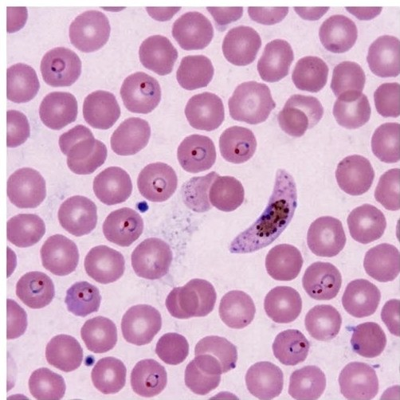
Falciparum: ring forms and a banana-shaped gametocyte
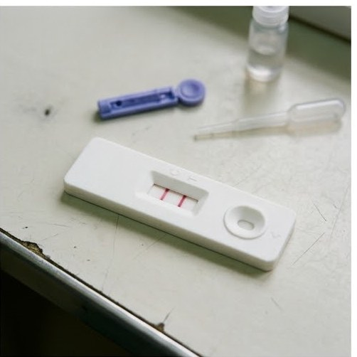
Malaria RDT: control and test lines both positive
Exam trap
Treat for malaria only after a positive test (RDT or film); a negative test means look for another cause.
A child with sickle cell trait is partly protected against severe falciparum malaria; a child with sickle cell disease is at great risk from it.
Artemisinin-based combination (ACT): artemether–lumefantrine (first line), 6 doses over 3 days (0, 8, 24, 36, 48, 60 h) with milk or fatty food · by weight: 5–14 kg 1 tablet, 15–24 kg 2, 25–34 kg 3, ≥ 35 kg 4 per dose · second line: dihydroartemisinin–piperaquine
Vivax
ACT, then primaquine0.25–0.5 mg/kg daily for 14 days (radical cure) after a G6PD test · not under 6 months
Severe malaria
IV (or IM) artesunate: 3 mg/kg if < 20 kg · 2.4 mg/kg if ≥ 20 kg at 0, 12 and 24 h, then daily · for at least 24 h and until the child can take oral drugs, then a full 3-day ACT · if not available: IM artemether or quinine (20 mg/kg loading, then 10 mg/kg 8-hourly)
Before referral
Rectal artesunate 10 mg/kg (children under 6 years) or IM artesunate, then refer
Supportive
Check glucose (10% glucose 5 ml/kg IV if low) · transfuse if Hb < 4 g/dL, or < 6 g/dL with distress or shock (10 ml/kg packed cells) · treat convulsions (diazepam) · careful fluids (no fluid overload) · antibiotics if bacterial infection is possible · paracetamol
Best next step · a febrile child with a positive malaria test becomes unconscious
Check blood glucose at once and correct it; give IV artesunate without waiting for other results.
Treat convulsions, and consider meningitis: give antibiotics too, and do an LP when it is safe.
6. Prevention
Insecticide-treated bed nets · indoor spraying · drain stagnant water
Malaria vaccine (RTS,S or R21) from 5 months, 4 doses, in moderate–high transmission areas (WHO)
Intermittent preventive treatment in pregnancy (sulfadoxine–pyrimethamine) · seasonal chemoprevention where used
Bacterial meningitis is a medical emergency: untreated it kills, and survivors may be left deaf or brain-damaged. Sudan lies in the African meningitis belt with epidemics in the dry season. Treatment follows the WHO 2025 meningitis guidelines.
1. Causes by age
Newborn (< 1 month)
Group B streptococcus, E. coli, Listeria (see 3.6)
1 month – 5 years
Pneumococcus, meningococcus, Hib (rare after vaccination)
Older child
Meningococcus (epidemics: serogroups A, C, W, X) and pneumococcus
Others
TB meningitis (subacute) · viral (enteroviruses, mumps) · cryptococcus in HIV
2. Clinical features
Infants: fever or hypothermia, poor feeding, vomiting, irritability, high-pitched cry, bulging fontanelle, seizures · neck stiffness often absent
Normal CSF: clear, ≤ 5 lymphocytes, protein 0.15–0.4 g/L, glucose about 2/3 of blood glucose (take a blood glucose at the same time). Send Gram stain, culture, latex or PCR; blood culture as well.
Best next step · a drowsy child with signs of raised ICP or a purpuric rash
Do not delay antibiotics: take a blood culture and give ceftriaxone at once; the LP waits.
Delay LP when there is reduced consciousness (GCS < 9) or falling GCS, focal signs, papilloedema, shock, a bleeding disorder or skin infection at the site.
Ceftriaxone100 mg/kg/day IV (once daily or 12-hourly, max 4 g) or cefotaxime, as soon as possible · add ampicillin under 3 months (Listeria) · add vancomycin where penicillin-resistant pneumococcus is common
Duration
Meningococcus 5–7 days · Hib 7–10 days · pneumococcus 10–14 days · unknown cause 10 days · newborn 3 weeks · in epidemics WHO uses ceftriaxone for 5 days
Dexamethasone
0.15 mg/kg IV 6-hourly for 4 days, started with or before the first antibiotic dose (non-epidemic setting) · reduces deafness · not in newborns
Supportive
ABC, treat shock (fluid boluses) · head up 30° · treat seizures · check glucose and sodium (SIADH) · normal maintenance fluids once perfusion is restored · feed early
Contacts
Meningococcus: close contacts get ciprofloxacin single dose (or rifampicin 2 days, or ceftriaxone IM once) · vaccinate in outbreaks
Late: sensorineural deafness (the commonest; hearing test for every survivor), hydrocephalus, epilepsy, cerebral palsy, learning difficulty, limb loss after purpura fulminans
6. Prevention
Vaccines: Hib and pneumococcal conjugate (in the pentavalent and PCV of the EPI) · meningococcal A conjugate (MenAfriVac) and multivalent vaccines in the meningitis belt.
7. Encephalitis
Inflammation of the brain: fever + altered behaviour or consciousness, seizures, focal signs
Causes: herpes simplex (the most important to treat), enteroviruses, measles (acute or SSPE years later), mumps, arboviruses
Measles is a highly contagious RNA virus (paramyxovirus) spread by droplets and air, infectious from 4 days before to 4 days after the rash. It kills through pneumonia, diarrhoea and malnutrition, mainly in unvaccinated and malnourished children. Prevented by measles vaccine (MR) at 9 and 18 months (EPI).
1. Clinical stages
Prodrome (3–4 days)
High fever + the 3 Cs: cough, coryza, conjunctivitis · Koplik spots: grey-white dots on red buccal mucosa opposite the lower molars (pathognomonic), gone when the rash appears
Rash (day 4)
Red maculopapular rash starting behind the ears and on the face, spreading down to the trunk and limbs over 3 days, becoming blotchy · fever peaks with the rash
Recovery
Rash fades in the same order, leaving brown staining and fine peeling · fever falls by day 3 of the rash (persisting fever = complication)
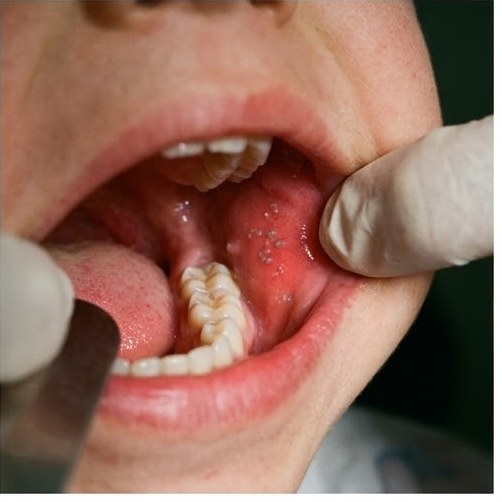
Koplik spots opposite the lower molars
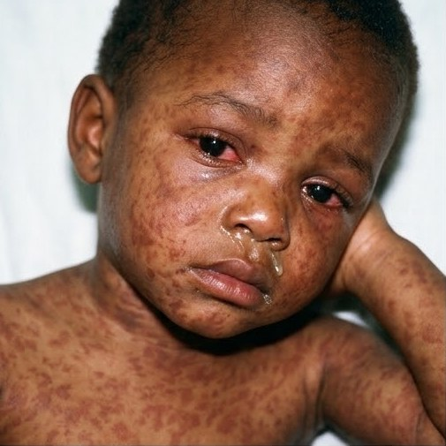
Measles: blotchy rash, red eyes, coryza
2. Complications
Pneumonia (viral or bacterial; the commonest cause of death) · otitis media (commonest) · laryngotracheobronchitis
Eye: corneal ulcer, blindness (vitamin A deficiency)
Acute encephalitis (1 in 1000) · SSPE: fatal degenerative brain disease 7–10 years later (high measles antibody in CSF)
Immune suppression for weeks (TB flares, false-negative Mantoux) · myocarditis
3. Management (WHO, IMCI)
Vitamin A to every child with measles on day 1 and day 2: < 6 m 50,000 IU · 6–11 m 100,000 IU · ≥ 12 m 200,000 IU (third dose after 2–4 weeks if eye signs)
Supportive: fluids, feeding, eye and mouth care (tetracycline eye ointment, gentian violet for mouth ulcers) · antibiotics for pneumonia, ear or eye infection · isolate
Severe complicated measles (clouding of cornea, deep mouth ulcers, pneumonia, not able to drink): admit
Mild fever · post-auricular and occipital nodes · pink rash from the face, gone in 3 days · arthralgia · danger: congenital rubella in pregnancy
Chickenpox
Varicella-zoster virus
Itchy rash in crops: macule → papule → vesicle → crust, all stages together, mainly on the trunk (centripetal), mouth too · infectious until all lesions crust
Roseola infantum
HHV-6
Infant 6–24 months · high fever for 3 days (febrile seizures) · rash appears as the fever falls
Erythema infectiosum
Parvovirus B19
Slapped cheeks, then lacy rash on limbs · aplastic crisis in sickle cell disease · fetal hydrops
Hand, foot and mouth
Coxsackie A
Painful mouth ulcers + oval vesicles on palms and soles · mild
Scarlet fever
Group A streptococcus
Sore throat, fever · fine sandpaper rash in skin folds (Pastia lines) · flushed cheeks with circumoral pallor · strawberry tongue · peeling of fingers · penicillin 10 days (prevents rheumatic fever)
Meningococcaemia
N. meningitidis
Non-blanching purpura, ill child, shock → ceftriaxone now
Tuberculosis (Mycobacterium tuberculosis) is caught from an adult with infectious pulmonary TB, usually in the household. Young children (under 5 years) and those with HIV or malnutrition progress quickly to severe disease (miliary, meningitis). Management follows the WHO 2022 guidelines for children and adolescents.
1. Forms of childhood TB
TB infection
Positive Mantoux or IGRA, no symptoms, normal X-ray → TB preventive treatment
Primary pulmonary TB
Ghon focus + enlarged hilar nodes (primary complex) · nodes may compress a bronchus (wheeze, collapse)
Miliary TB
Blood spread: very ill child, fever, hepatosplenomegaly, tiny nodules all over both lungs, often with meningitis
TB meningitis
Slow onset over 2–3 weeks: irritability, vomiting, headache → neck stiffness, cranial nerve palsy, coma · CSF: lymphocytes, very high protein, low glucose
Lymph node TB
Commonest extrapulmonary form: painless, matted cervical nodes, may discharge (scrofula)
Others
Spine (Pott disease: gibbus, paraplegia) · bone and joint · abdominal (ascites, doughy abdomen) · pericardial
2. When to suspect TB
Cough > 2 weeks, fever, weight loss or failure to thrive (SAM not recovering), night sweats, fatigue
Contact with an adult with TB · pneumonia not responding to antibiotics · a lump in the neck
3. Prevention
BCG at birth: protects against TB meningitis and miliary TB in young children, less against lung TB
Contact tracing: screen every child living with an adult with TB
TB preventive treatment for exposed children with no disease (especially < 5 years and HIV-positive): 3HR (3 months isoniazid + rifampicin) or 6H (6 months isoniazid)
Exam trap
Exclude active TB (symptoms, X-ray) before giving preventive treatment, or resistance will develop.
Orange urine on rifampicin is harmless; warn the family.
Xpert MTB/RIF Ultra (rapid PCR, also shows rifampicin resistance) on sputum, gastric aspirate, induced sputum, nasopharyngeal aspirate or stool · smear and culture · only 30–40% of children are confirmed
Tuberculin skin test
Mantoux 5 TU intradermal, read at 48–72 h · positive: induration ≥ 10 mm (≥ 5 mm in HIV or SAM) · shows infection, not disease · false negative in SAM, HIV, measles, severe TB
Chest X-ray
Hilar or mediastinal nodes, miliary pattern, consolidation, cavity, effusion
Others
Node biopsy or FNA · CSF in suspected meningitis · HIV test for every child with TB · treatment-decision algorithms (WHO) allow treatment without confirmation
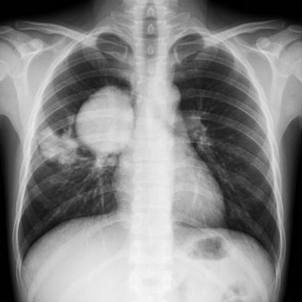
Primary TB: right hilar nodes
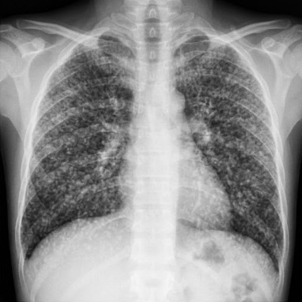
Miliary TB: tiny even nodules
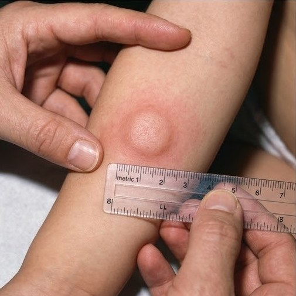
Mantoux: measure induration in mm
5. Treatment of drug-susceptible TB (WHO 2022)
Non-severe TB (3 months–16 years)
4 months: 2HRZ(E) / 2HR · non-severe = peripheral node TB, or lung TB in one lobe without cavity or miliary pattern, not complicated
Severe pulmonary or other TB
6 months: 2HRZE / 4HR
TB meningitis, bone and joint TB
12 months: 2HRZE / 10HR (or a 6-month intensive regimen) · dexamethasone or prednisolone for 4–8 weeks in TB meningitis and pericarditis
Daily doses
Isoniazid (H) 10 mg/kg · rifampicin (R) 15 mg/kg · pyrazinamide (Z) 35 mg/kg · ethambutol (E) 20 mg/kg · child-friendly dispersible fixed-dose tablets by weight band · pyridoxine with isoniazid in malnourished or HIV-positive children
Drug side effects
Isoniazid: hepatitis, peripheral neuropathy · rifampicin: orange urine and tears, hepatitis, drug interactions · pyrazinamide: hepatitis, arthralgia · ethambutol: optic neuritis (safe at the right dose)
Give treatment under direct observation (DOT) · weigh monthly and adjust doses · test for HIV · treat malnutrition · rifampicin-resistant TB: refer for second-line drugs.
Chapter 5 · 5.6 HIV in ChildrenTransmission, PMTCT & Diagnosis107
5.6HIV in Children
Most children with HIV are infected from their mother: in pregnancy, at delivery or by breastfeeding. Without treatment, half of infected infants die before age 2. With testing and ART in pregnancy, transmission falls to under 2%. Care follows the WHO consolidated HIV guidelines.
1. Prevention of mother-to-child transmission (PMTCT)
Mother
Test every pregnant woman · lifelong ART (dolutegravir-based) from diagnosis · aim for an undetectable viral load by delivery
Delivery
Avoid prolonged rupture of membranes and unnecessary procedures · caesarean only for obstetric reasons
Infant prophylaxis
Low risk (mother suppressed): nevirapine for 6 weeks · high risk (mother not on ART or high viral load): zidovudine + nevirapine for 6 weeks, nevirapine continued while breastfeeding · cotrimoxazole from 6 weeks until HIV is excluded
Feeding
Exclusive breastfeeding for 6 months, then complementary food, breastfeeding to 12–24 months, while the mother takes ART
2. Diagnosis in children
Under 18 months: nucleic acid test (HIV DNA/RNA PCR) at birth (where used) and 6 weeks, again at 9 months and after breastfeeding stops · antibody tests are not diagnostic (maternal antibody lasts up to 18 months)
18 months and over: antibody tests (two rapid tests) as in adults
Test every child with TB, SAM, recurrent pneumonia, persistent diarrhoea or an HIV-positive mother
Exam trap
A positive HIV antibody test in a 9-month-old may be maternal antibody; a PCR is needed to diagnose infection.
HIV-positive mothers on ART are advised to breastfeed, not to stop.
3. Clinical features suggesting HIV
Failure to thrive, SAM not responding to treatment · persistent diarrhoea
Recurrent or severe pneumonia · Pneumocystis pneumonia (infant 2–6 months, severe hypoxia, few chest signs)
Oral thrush after 6 weeks, or persistent · oesophageal candida
Chapter 5 · 5.6 HIV in ChildrenClinical Features & Treatment108
4. Treatment (WHO)
When
Start ART in every child with HIV, whatever the CD4 count, as soon as possible after diagnosis
First line
Dolutegravir (DTG) + abacavir + lamivudine (dispersible DTG from 4 weeks and 3 kg) · newborns under 4 weeks: zidovudine + lamivudine + raltegravir (or nevirapine), then switch to DTG
Prophylaxis
Cotrimoxazole daily (PCP, toxoplasma, bacterial infections, malaria) · TB screening and isoniazid preventive therapy · all EPI vaccines (no BCG if already symptomatic)
Monitoring
Viral load at 6 and 12 months, then yearly (target undetectable) · growth, development, adherence counselling, disclosure
PCP treatment
High-dose cotrimoxazole IV or oral for 21 days + prednisolone if hypoxic
Exam trap
Treatment failure is most often due to poor adherence; check it before changing drugs.
Abacavir can cause a hypersensitivity reaction; stop and never restart it.
Visceral leishmaniasis (kala-azar) is caused by Leishmania donovani, spread by the sandfly (Phlebotomus). Eastern Sudan (Gedaref, Sennar, Blue Nile) is one of the main foci in the world, and children are most often affected. Untreated, it is almost always fatal. Treatment follows the WHO guidelines for East Africa (2026 update).
1. Clinical features
Prolonged fever (> 2 weeks), often with two peaks a day · weight loss, wasting
Pallor, bleeding (epistaxis, gums) · darkening of the skin ("black fever")
Labs: pancytopenia (anaemia, leucopenia, low platelets) · high ESR · hypergammaglobulinaemia with low albumin
Deaths from bleeding, secondary infection (pneumonia, TB), severe anaemia, malnutrition
HIV co-infection: atypical, more relapses
2. Diagnosis
Clinical case
Fever > 2 weeks + splenomegaly (or lymphadenopathy) + weight loss in a person from an endemic area
Serology
rK39 rapid test (first test) · DAT (direct agglutination) · stay positive after cure, so they cannot diagnose relapse
Parasitology
Leishman–Donovan bodies in an aspirate: spleen (most sensitive, ~95%; risk of bleeding — check platelets and clotting), bone marrow (~70%), lymph node · needed for relapse and test of cure
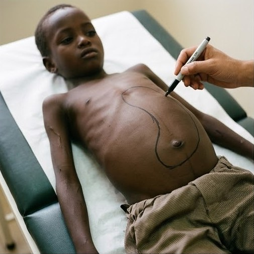
Kala-azar: massive spleen, wasting
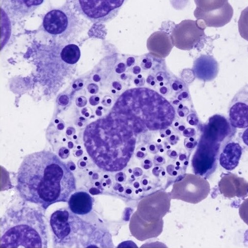
LD bodies in a marrow macrophage
3. After treatment
Cure: no fever, spleen smaller, weight gain, Hb rising · follow up at 6 months for relapse
Post-kala-azar dermal leishmaniasis (PKDL): pale or raised papules starting around the mouth, spreading to face and body, during or after treatment · most heal alone · severe or lasting: paromomycin + miltefosine
Prevention: insecticide-treated bed nets, early diagnosis and treatment
Paromomycin20 mg/kg/day IM + oral miltefosine (dose by weight band), both for 14 days · not in pregnancy
Primary VL, others
Sodium stibogluconate (SSG)20 mg/kg/day IM or IV + paromomycin15 mg/kg/day IM for 17 days · ECG (SSG cardiotoxicity), pancreatitis, renal and hearing checks (paromomycin)
Severe disease, relapse, HIV, very young
Liposomal amphotericin B (AmBisome) by IV infusion (total about 30 mg/kg) · with miltefosine in HIV co-infection
Supportive
Nutrition (RUTF), blood transfusion, treat infections (TB, pneumonia), treat malaria, iron and folate
Typhoid fever is caused by Salmonella Typhi (and Paratyphi A, B, C), spread by the faeco-oral route from cases and carriers through food and water. Incubation about 2 weeks. Increasing drug resistance has changed treatment: azithromycin and ceftriaxone are now the main drugs (WHO).
1. Clinical features
Week 1
Fever rising step-wise to 39–40 °C, headache, malaise, abdominal pain, dry cough · diarrhoea (young children) or constipation (older)
Week 2
Sustained high fever, toxic, apathetic ("typhoid state") · coated tongue · relative bradycardia · tender soft splenomegaly, hepatomegaly · rose spots on the trunk (hard to see on dark skin)
Non-specific fever, vomiting, diarrhoea, like gastroenteritis or sepsis
2. Investigations
Blood culture: the test of choice in the first week (positive in 40–60%) · bone marrow culture is the most sensitive (positive even after antibiotics) · stool and urine culture from the second week
Widal test: poor value in endemic areas (false positives and negatives); never diagnose typhoid on Widal alone
3. Treatment (WHO)
Uncomplicated
Oral azithromycin 20 mg/kg once daily (max 1 g) for 7 days · cefixime where sensitive
Severe or complicated
Ceftriaxone 80 mg/kg/day IV (max 4 g) for 10–14 days · meropenem for extensively drug-resistant typhoid · dexamethasone for typhoid encephalopathy or shock
Perforation
Resuscitation, broad-spectrum antibiotics (add metronidazole), urgent surgery
Prevention
Safe water, sanitation, hand washing, food hygiene · typhoid conjugate vaccine (TCV), one dose from 6 months
4. Brucellosis
Brucella melitensis (goats, sheep, camels) and abortus (cattle) · caught by drinking raw (unboiled) milk, fresh cheese, or contact with animals
Fever (often undulant, sweats at night), malaise, joint pain, back pain · hepatosplenomegaly, lymph nodes
Complications: arthritis (hip, knee; sacroiliitis), spondylitis, osteomyelitis, orchitis, endocarditis (main cause of death), neurobrucellosis
A common cause of prolonged fever in children from herding families
These diseases are prevented by the EPI (pentavalent: diphtheria, tetanus, pertussis, hepatitis B, Hib; polio vaccines). They return wherever vaccination coverage falls, so every case is notified to the EPI.
1. Diphtheria
Corynebacterium diphtheriae · exotoxin damages heart and nerves · droplets · incubation 2–5 days
Faucial (pharyngeal): low fever, sore throat, grey adherent membrane over tonsils and palate that bleeds when removed · bull neck (nodes and oedema) · nasal: bloody discharge · laryngeal: stridor, obstruction
Complications: myocarditis (week 2–3; arrhythmia, heart failure: the main cause of death) · neuritis: palatal palsy (nasal regurgitation), eye accommodation, limbs
Treat on clinical suspicion: throat swab culture
Diphtheria antitoxin (DAT) at once (20,000–100,000 units by severity) · penicillin (or erythromycin) for 14 days
Airway support (tracheostomy for laryngeal) · bed rest · ECG monitoring · isolate
Contacts: throat swab, erythromycin, vaccine
2. Pertussis (whooping cough)
Bordetella pertussis · most severe under 6 months (before 3 vaccine doses)
Catarrhal (1–2 weeks, most infectious): cold-like · paroxysmal (2–6 weeks): bouts of coughing, inspiratory whoop, vomiting after cough, red face · infants: apnoea and cyanosis instead of whoop · convalescent: weeks to months ("100-day cough")
CBC: marked lymphocytosis · nasopharyngeal swab PCR or culture
Azithromycin10 mg/kg on day 1, then 5 mg/kg days 2–5 (under 1 month: 10 mg/kg daily for 5 days) · or erythromycin 14 days · shortens infectivity, not the cough
Admit infants under 6 months: oxygen, suction, small frequent feeds, apnoea monitoring
Clostridium tetani spores in wounds (soil, rusty nails, burns, ear infection) · toxin blocks inhibitory nerves · incubation 3–21 days · neonatal tetanus: see 3.6
Trismus (lockjaw), risus sardonicus, neck and back stiffness, opisthotonus, board-like abdomen · painful spasms set off by noise, light or touch · fully conscious, no fever at first
Quiet dark room · human tetanus immunoglobulin500 IU IM (or antitoxin) · clean the wound
Metronidazole for 7–10 days · diazepam (and magnesium) for spasms · ventilation if needed · NGT feeding
Recovery does not give immunity: vaccinate after recovery
Wound in an incompletely vaccinated child: vaccine ± immunoglobulin
4. Poliomyelitis
Poliovirus (enterovirus) · faeco-oral · most infections silent · 1% get paralytic polio: fever, muscle pain, then asymmetric flaccid paralysis of the legs, no sensory loss, absent reflexes, later wasting
Bulbar polio: swallowing and breathing paralysis · CSF: lymphocytes
No antiviral: rest, avoid injections, physiotherapy, ventilation if needed
Acute flaccid paralysis (AFP) surveillance: every child under 15 years with sudden weakness → notify and send 2 stool samples 24 h apart within 14 days of onset
Prevention: OPV and IPV (EPI) · vaccine-derived poliovirus where coverage is low
Intestinal parasites cause anaemia, poor growth, malnutrition and poor school performance. WHO recommends regular deworming of preschool and school children where worms are common: albendazole 400 mg (200 mg at 12–23 months) or mebendazole 500 mg once, every 6–12 months.
1. Worms (helminths)
Worm
Spread · features
Treatment
Ascaris (roundworm)
Eggs swallowed · larvae pass through the lungs (Löffler syndrome: cough, wheeze, eosinophilia) · worms in stool or vomit · bowel obstruction (worm bolus), biliary obstruction, malnutrition
Albendazole 400 mg once
Hookworm
Larvae through the skin of bare feet · ground itch · blood sucking → iron deficiency anaemia, low protein, eosinophilia
Albendazole 400 mg once · iron
Enterobius (pinworm)
Hand to mouth · night-time perianal itch, poor sleep, vulvovaginitis · sticky tape test
Albendazole or mebendazole, repeat after 2 weeks, treat the whole family
Hymenolepis nana, Taenia
Dwarf tapeworm (person to person) · beef or pork tapeworm (undercooked meat; pork → cysticercosis, seizures)
Praziquantel
Strongyloides
Skin penetration · diarrhoea, larva currens · massive hyperinfection with steroids or HIV
Ivermectin
2. Protozoa
Giardia lamblia
Cysts in water · persistent watery, greasy, foul-smelling diarrhoea, bloating, malabsorption and failure to thrive · cysts or trophozoites in stool, stool antigen · metronidazole 15 mg/kg/day in 3 doses for 5–7 days or tinidazole 50 mg/kg once
Entamoeba histolytica
Amoebic dysentery: bloody mucoid stool with tenesmus · amoebic liver abscess (fever, tender liver, right shoulder pain) · metronidazole 30–50 mg/kg/day in 3 doses for 7–10 days, then a luminal drug (paromomycin or diloxanide)
Larvae (cercariae) from snails in fresh water enter the skin during swimming, washing or farming (Gezira irrigation canals) · swimmer's itch, then fever and eosinophilia (Katayama fever) · adult worms live in veins and lay eggs that cause granulomas and fibrosis.
S. haematobium (urinary)
S. mansoni (intestinal)
Main features
Terminal haematuria, dysuria, frequency · later bladder fibrosis, calcification, hydronephrosis, bladder cancer
Abdominal pain, bloody diarrhoea · periportal fibrosis → portal hypertension: splenomegaly, varices, haematemesis · liver function stays normal
Egg
Terminal spine · in midday urine (filtered)
Lateral spine · in stool (Kato–Katz)
Imaging
Ultrasound: thick bladder wall, hydronephrosis
Ultrasound: periportal ("pipe-stem") fibrosis
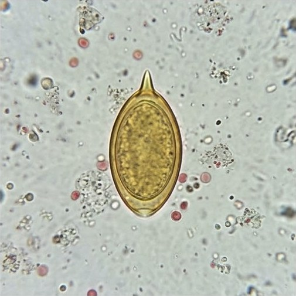
S. haematobium: terminal spine (urine)
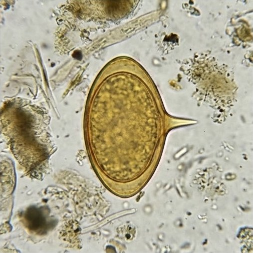
S. mansoni: lateral spine (stool)
Treatment: praziquantel 40 mg/kg single dose (from 2 years; WHO also allows younger children) · repeat after 2–4 weeks if needed
Prevention: avoid canal water, latrines, snail control, school mass treatment with praziquantel
4. Hydatid disease
Echinococcus granulosus eggs from dog faeces · cysts in the liver (commonest) and lung
Often silent; a mass or cough · rupture → anaphylaxis and spread
Ultrasound (cyst with daughter cysts), CT, serology
Albendazole + surgery or PAIR (puncture, aspiration, injection, re-aspiration)
Exam trap
Haematuria in a schoolboy who swims in canals is S. haematobium until proved otherwise: examine midday urine.
Portal hypertension from S. mansoni has normal liver function; cirrhosis does not.
Diarrhoea is the passage of 3 or more loose or watery stools in 24 hours (or more often than is normal for the child). Frequent passing of formed stools, or the soft stools of a breastfed baby, is not diarrhoea. Diarrhoea is a leading cause of death under 5 years, and the killer is dehydration, not the infection. Management follows IMCI and the WHO 2024 guideline on pneumonia and diarrhoea.
1. Types of diarrhoea (IMCI)
Acute watery diarrhoea
Lasts less than 14 days · the main danger is dehydration · most are viral
Dysentery
Visible blood in the stool · the main dangers are damage to the gut wall, sepsis and malnutrition
Persistent diarrhoea
Starts acutely and lasts 14 days or more · the main danger is malnutrition (see 5.3)
Diarrhoea with SAM
Dehydration is hard to assess and rehydration is different (ReSoMal, see 2.2)
2. Causes
Organism
Clue
Viruses (most cases)
Rotavirus
The commonest cause of severe dehydrating diarrhoea in children under 2 · vomiting first, then watery stools, low fever · prevented by vaccine
Norovirus, adenovirus 40/41
Outbreaks · short illness · mild fever
Bacteria
E. coli: enterotoxigenic (ETEC)
The commonest bacterial cause of watery diarrhoea (and traveller's diarrhoea)
Shigella
The commonest cause of dysentery · high fever, tenesmus · may cause convulsions
E. coli O157:H7 (enterohaemorrhagic)
Bloody diarrhoea followed by haemolytic uraemic syndrome
Campylobacter, non-typhoid Salmonella
Fever, abdominal pain, watery then bloody · Campylobacter → later Guillain–Barré syndrome
Vibrio cholerae
Profuse painless "rice-water" stools, rapid severe dehydration · outbreaks
Parasites
Giardia, Entamoeba histolytica, Cryptosporidium
Giardia: watery, offensive, bloating · amoeba: bloody with mucus, older children · Cryptosporidium: severe in HIV
3. Mechanisms
Secretory diarrhoea: toxins (cholera, ETEC) make the gut secrete salt and water · large volume · continues when fasting
Inflammatory (invasive) diarrhoea: organisms invade the wall (Shigella, Campylobacter, amoeba) → blood, mucus, pus cells in the stool, fever
Osmotic diarrhoea: unabsorbed sugar holds water in the gut (lactose after rotavirus, sorbitol) · stops when fasting · acidic stool
Why ORS works: glucose and sodium are absorbed together (co-transport), and water follows, even when the gut is damaged
Exam trap
The commonest cause of acute gastroenteritis in children is a virus (rotavirus), not bacteria; rotavirus stools are watery, not bloody.
The main cause of death in acute diarrhoea is dehydration.
4. History
Duration (≥ 14 days = persistent) · blood in the stool (dysentery) · number of stools and vomits · urine output (last urine) · fluids and feeds given, drugs
Fever, cough (other infections) · contacts, water source · vaccines (rotavirus, measles) · nutrition and growth
5. Classification of dehydration (IMCI)
Look at the child, offer a drink, and do the skin pinch on the abdomen halfway between the umbilicus and the side, for 1 second, then release. Two or more signs in a row decide the class.
Sign
Severe dehydration
Some dehydration
No dehydration
General condition
Lethargic or unconscious
Restless, irritable
Well, alert
Eyes
Sunken
Sunken
Normal
Offered a drink
Not able to drink or drinks poorly
Drinks eagerly, thirsty
Drinks normally
Skin pinch goes back
Very slowly (longer than 2 seconds)
Slowly
Immediately
Treatment
Plan C (IV fluids)
Plan B (ORS in the health facility)
Plan A (home)
Other signs: dry mouth, no tears, sunken fontanelle, fast weak pulse, cold hands, capillary refill > 3 s, deep (acidotic) breathing, little urine
Shock (cold hands + capillary refill > 3 s + weak fast pulse, or lethargy) is treated first (ETAT)
Fluid deficit by weight loss: infants: mild 5%, moderate 10%, severe 15% · older children: 3%, 6%, 9%
Deficit (ml) = % dehydration × weight (kg) × 10 · e.g. 6% in a 20 kg child = 1200 ml
Chapter 6 · 6.1 Acute Gastroenteritis & DehydrationAssessment of Dehydration120
6. Investigations
None are needed in simple watery diarrhoea with no or some dehydration
Severe dehydration or IV fluids: serum sodium, potassium, urea and creatinine, blood glucose, blood gas (acidosis) · CBC
Stool: microscopy for blood, pus cells, amoeba, Giardia · culture in dysentery, outbreaks (cholera) or very ill children · malaria test if fever
Exam trap
Shock is a sign of severe dehydration; a child with only dry mouth, no tears and a sunken fontanelle has some (moderate) dehydration.
In SAM the skin pinch and sunken eyes are unreliable (wasting gives the same signs); diagnose dehydration from the history of watery stools and recent change in look.
Hypernatraemic dehydration hides: the skin feels doughy and the child looks less dry than the child really is.
7. The four rules of home treatment (Plan A, no dehydration)
1. Extra fluid
ORS after each loose stool: under 2 years 50–100 ml · 2 years or more 100–200 ml · plus breast milk, soup, rice water, clean water · give 2 packets of ORS to take home
2. Zinc
under 6 months 10 mg · 6 months or more 20 mg once daily for 10–14 days · shortens the illness and prevents new episodes for 2–3 months
3. Continue feeding
Never stop breastfeeding · usual food, small frequent meals · an extra meal a day for 2 weeks after
4. When to return
At once if: not able to drink or breastfeed, becomes sicker, fever, blood in the stool, drinking poorly
8. Plan B (some dehydration): ORS in the health facility
ORS 75 ml/kg over 4 hours (give more if the child wants more) · by spoon or cup, a spoonful every 1–2 minutes; not by bottle
Vomiting: wait 10 minutes, then continue more slowly · continue breastfeeding · give zinc
Reassess after 4 hours: no dehydration → Plan A · still some → repeat Plan B and start food · severe → Plan C
Persistent vomiting, refusal or abdominal distension: ORS by nasogastric tube (20 ml/kg/hour) or IV
Chapter 6 · 6.1 Acute Gastroenteritis & DehydrationTreatment Plans A, B & C121
9. Plan C (severe dehydration): IV fluids at once
Ringer lactate 100 ml/kg (or 0.9% saline)
First 30 ml/kg in
Then 70 ml/kg in
Infants under 12 months
1 hour
5 hours
Children 12 months and older
30 minutes
2½ hours
Repeat the first 30 ml/kg once if the radial pulse is still weak · reassess every 1–2 hours; if hydration is not improving, give the IV drip faster
Give ORS 5 ml/kg/hour as soon as the child can drink (after 3–4 hours in infants, 1–2 hours in children)
Reclassify after 6 hours (infant) or 3 hours (child) and choose Plan A, B or C · no IV possible: ORS by NGT 20 ml/kg/hour for 6 hours or refer urgently
ETAT · shock, SAM and the very young
Shock with diarrhoea: Ringer lactate 20 ml/kg as fast as possible, then continue Plan C.
SAM: no Plan C unless in shock (then 15 ml/kg over 1 hour of half-strength Darrow's with 5% glucose or Ringer lactate with 5% glucose); otherwise ReSoMal by mouth (2.2).
Children dehydrate faster than adults: more of their body is water, they need more water per kg, they lose more through the skin (large surface area for their weight), their kidneys concentrate urine poorly, and they depend on others to drink. IV fluids are given as three parts: resuscitation (shock), deficit and maintenance, plus ongoing losses.
1. Body water
Age
Total body water
Preterm
About 80% of weight
Term newborn
About 75%
1 year to adult
About 60%
Two thirds inside cells (main ion: potassium), one third outside cells (main ion: sodium)
Normal serum sodium 135–145 mmol/L and potassium 3.5–5.5 mmol/L
Sodium decides the water shift between them: serum sodium is the main part of plasma osmolality
2. Maintenance fluid (Holliday–Segar)
Body weight
Fluid per 24 hours
Per hour
First 10 kg
100 ml/kg
4 ml/kg/h
Second 10 kg (11–20 kg)
+ 50 ml/kg
+ 2 ml/kg/h
Each kg above 20
+ 20 ml/kg
+ 1 ml/kg/h
16 kg: 1000 + (6 × 50) = 1300 ml/day
30 kg: 1000 + 500 + (10 × 20) = 1700 ml/day
Newborns: their own scale by day of life (3.3)
Fluid type: isotonic fluid with glucose: 0.9% sodium chloride with 5% glucose (AAP 2018) ± potassium 20 mmol/L once urine is passed
Hypotonic fluids (0.18% saline) cause hyponatraemia and brain swelling
3. Deficit and ongoing losses
Deficit (ml) = % dehydration × weight (kg) × 10 · iso- or hyponatraemic: give deficit + maintenance over 24 hours · hypernatraemic: over 48 hours
Ongoing losses: add about 10 ml/kg for each watery stool and 2 ml/kg for each vomit (or ORS as in Plan A)
Shock first: 0.9% saline or Ringer lactate 20 ml/kg fast, repeat if needed (10 ml/kg in heart disease or DKA) · bolus volumes are not taken from the deficit
Monitor: weight, input and output (urine ≥ 1 ml/kg/h), sodium and glucose at least daily on IV fluids
Danger of fast correction: brain cells have made extra solutes to protect themselves; if sodium falls fast, water rushes in → cerebral oedema and seizures
Treat shock first, then give the deficit + maintenance over 48 hours with 0.9% sodium chloride with 5% glucose (NICE) · lower sodium by no more than 10–12 mmol/L per 24 hours (0.5 mmol/L per hour) · check sodium every 4–6 hours
Seizure during correction: slow the fluids, give 3% saline, check calcium and glucose
6. Hyponatraemia (sodium < 135 mmol/L)
Causes: diarrhoea replaced with water, hypotonic IV fluids, SIADH (meningitis, pneumonia), nephrotic syndrome, heart failure, adrenal insufficiency (with high potassium)
Features: nausea, headache, lethargy, seizures and coma when < 120 mmol/L or falling fast
Seizures or coma: 3% sodium chloride 3–5 ml/kg over 15–30 minutes (raises sodium by 3–5 mmol/L), repeat until seizures stop
Then raise sodium no more than 8–10 mmol/L in 24 hours (osmotic demyelination) · dehydration: isotonic fluid · SIADH: fluid restriction
Exam trap
Drowsiness out of proportion to the dehydration signs suggests hypernatraemic dehydration.
Shock comes early in hyponatraemic and late in hypernatraemic dehydration.
Haematocrit is raised (haemoconcentration) in dehydration, not low.
Persistent diarrhoea starts as acute diarrhoea and lasts 14 days or more; it usually follows an infection and leads to malnutrition. Chronic diarrhoea lasts more than 4 weeks or keeps coming back, usually from a non-infectious cause (malabsorption, food intolerance).
1. Persistent diarrhoea (IMCI)
Causes
Damaged gut lining after infection → secondary lactose intolerance · continuing infection (Giardia, Cryptosporidium, Shigella) · malnutrition, HIV, zinc deficiency · early animal milk
Severe persistent diarrhoea
Persistent diarrhoea with any dehydration (or a young infant) → treat dehydration and refer / admit
Persistent diarrhoea (no dehydration)
Treat at home: continue breastfeeding · replace half of animal milk with yoghurt or porridge, or limit animal milk to 50 ml/kg/day · 6 small meals a day · zinc 10–14 days · vitamin A · multivitamin · review in 5 days
Look for
SAM (2.2) · HIV test · stool for Giardia, amoeba, blood · other infections (pneumonia, urinary infection)
2. Two kinds of diarrhoea
Osmotic
Secretory
Mechanism
Unabsorbed sugar draws water
Gut secretes salt and water
When fasting
Stops
Continues
Stool
Acidic (pH < 5.5), reducing substances positive, sore red buttocks
Large volume, pH > 6, high sodium
Examples
Lactose intolerance, laxatives
Cholera, ETEC, neuroblastoma (VIP)
3. Causes of chronic diarrhoea by clue
Well toddler, normal growth
Toddler's diarrhoea (chronic non-specific diarrhoea): loose stools with undigested food (peas and carrots), only by day · too much juice · normal growth · resolves by school age; reassure, cut juice
Stool: microscopy for ova, cysts (Giardia), blood, fat globules · pH and reducing substances (sugar malabsorption) · calprotectin (gut inflammation)
Blood: CBC (iron or folate deficiency anaemia), albumin, ESR, CRP, electrolytes · tTG-IgA with total IgA (coeliac) · HIV test · sweat test if steatorrhoea
Endoscopy with biopsy when coeliac disease or IBD is likely
5. Coeliac disease
An immune (T-cell) reaction to gluten in genetically prone people (HLA-DQ2, DQ8) damages the small-bowel lining: villous atrophy, crypt hyperplasia and many intraepithelial lymphocytes. Gluten is in wheat, barley and rye; rice and maize are safe.
Classic (6 months–2 years)
Starts some months after wheat is introduced · chronic diarrhoea with pale, bulky, offensive stools (steatorrhoea) · abdominal distension with wasted buttocks and limbs · failure to thrive, irritability, anorexia
Older child
Short stature, iron deficiency anaemia not responding to iron, delayed puberty, abdominal pain, constipation, mouth ulcers, osteoporosis, raised liver enzymes · dermatitis herpetiformis (itchy blisters)
At-risk groups (screen)
Type 1 diabetes, Down, Turner and Williams syndromes, autoimmune thyroiditis, IgA deficiency, first-degree relatives
ESPGHAN 2020 · diagnosis of coeliac disease
Test while the child still eats gluten: tTG-IgA with total IgA (IgA deficiency gives a false negative; then use IgG tests).
tTG-IgA ≥ 10 times the upper limit and positive EMA in a second sample → diagnosis without biopsy.
Lower positive tTG → duodenal biopsy (at least 4 from the duodenum and 1 from the bulb).
Treatment: a lifelong strict gluten-free diet (dietitian) · correct iron, folate, calcium and vitamin D · symptoms improve in weeks; tTG falls within a year (checks adherence) · untreated disease raises the risk of small-bowel lymphoma.
Coeliac disease: distended abdomen, thin limbs and buttocks
Dermatitis herpetiformis: itchy blisters on the extensor surfaces
Bloody diarrhoea with mucus, urgency, tenesmus · less weight loss
Complications
Strictures, fistulae, abscess, obstruction
Toxic megacolon, colon cancer (long term)
Biopsy
Granulomas, cobblestone mucosa
Crypt abscesses
Both: raised CRP, ESR, platelets and faecal calprotectin, low albumin and Hb · extra-intestinal: arthritis, uveitis, erythema nodosum · diagnosis by colonoscopy with biopsy · treatment by a specialist: Crohn: exclusive enteral nutrition first (6–8 weeks) or steroids, then azathioprine, anti-TNF; UC: aminosalicylates (mesalazine), steroids for flares.
Crohn: cobblestone mucosa
Crohn biopsy: granuloma
Aphthous ulcers (Crohn)
Erythema nodosum
7. Lactose intolerance
Secondary (common): the lactase enzyme on damaged villi is lost after gastroenteritis (rotavirus), Giardia, SAM, coeliac disease · temporary
Primary: congenital (very rare) or late-onset in older children and adults
Unabsorbed lactose is fermented → watery, frothy, acidic stools, gas, distension, colic, sore red buttocks · worse after milk
Stool pH < 5.5 and reducing substances positive · hydrogen breath test (older children)
Continue breastfeeding · formula-fed: lactose-free formula for 2–4 weeks, then back to normal milk · yoghurt is tolerated
Infants, usually in the first months, after formula or cow's milk starts (rarely through breast milk) · family history of allergy
Features
Gut: vomiting, reflux, diarrhoea, blood-streaked mucoid stools in a well baby (proctocolitis), poor weight gain · skin: eczema, urticaria · chest: wheeze · rarely anaphylaxis
Diagnosis
Elimination of cow's milk for 2–4 weeks with improvement, then re-introduction (challenge) brings symptoms back · specific IgE or skin-prick test only for immediate reactions
Treatment
Formula-fed: extensively hydrolysed formula (amino-acid formula if severe) · breastfed: continue breastfeeding, mother avoids all dairy and takes calcium · not goat's milk; soy milk not under 6 months · most outgrow it by 3–5 years (re-challenge at 9–12 months)
9. Giardiasis
Giardia lamblia cysts in water and food · flattens the villi · watery, offensive, greasy stools, bloating, cramps, no blood, no fever · weight loss and persistent diarrhoea
Stool microscopy for cysts or trophozoites (3 samples raise the yield) or stool antigen · treatment: metronidazole 5 mg/kg three times daily for 5 days (or tinidazole single dose)
Exam trap
Lactose intolerance is an enzyme deficiency (sugar); cow's milk allergy is an immune reaction to protein. A lactose-free formula does not help cow's milk allergy.
Blood in the stool of a well, thriving breastfed infant is usually cow's milk protein proctocolitis (from the mother's diet) or an anal fissure, not infection.
Chapter 6 · 6.4 The Vomiting InfantApproach & Gastro-oesophageal Reflux130
6.4The Vomiting Infant
Most vomiting in infants is harmless reflux or part of an infection (gastroenteritis, urinary infection, otitis, meningitis). The colour of the vomit is the first clue: green (bilious) vomiting means obstruction below the duodenal papilla and is a surgical emergency until proven otherwise.
1. Causes by clue
Newborn, bilious
Malrotation with volvulus, duodenal atresia (double bubble, Down syndrome), jejunal atresia, meconium ileus, Hirschsprung disease, NEC (3.3)
Nil by mouth, nasogastric tube on free drainage, IV fluids, surgical review, then an upper GI contrast study (malrotation) the same day.
2. Gastro-oesophageal reflux and reflux disease
Reflux (GOR) is normal in infants: short abdominal oesophagus, liquid feeds, lying flat · effortless spitting after feeds, peaks at 4 months, gone by 12–18 months · baby is happy and growing ("happy spitter")
Reflux disease (GORD): reflux with complications: poor weight gain, feed refusal, crying and arching (oesophagitis), haematemesis, iron deficiency, aspiration pneumonia, wheeze, apnoea · Sandifer syndrome (neck twisting)
More common in cerebral palsy, Down syndrome, preterm, after oesophageal atresia repair
Diagnosis is clinical · tests only for complications or doubt: 24-hour pH-impedance study (best test), endoscopy with biopsy (oesophagitis) · barium meal to exclude malrotation, not to diagnose reflux
Chapter 6 · 6.4 The Vomiting InfantApproach & Gastro-oesophageal Reflux131
Treatment (NASPGHAN–ESPGHAN 2018): reassure · avoid overfeeding, smaller frequent feeds · thickened feeds · trial of extensively hydrolysed formula 2–4 weeks (cow's milk allergy mimics reflux) · PPI (omeprazole) 4–8 weeks only for proven oesophagitis · no prokinetics
Sleep on the back (supine) despite reflux · fundoplication for failed medical treatment with severe complications
3. Infantile hypertrophic pyloric stenosis
Thickening of the pyloric muscle blocks the stomach outlet. Commonest in first-born boys (male : female 4 : 1), with a family history · erythromycin or azithromycin in the first 2 weeks raises the risk.
Vomiting
Starts at 2–8 weeks (peak 3–6 weeks) · projectile, after every feed, never bilious (the block is above the duodenum) · may contain altered blood · baby is hungry right after
Examination
Dehydration, weight loss · visible peristalsis from left to right across the upper abdomen · olive-shaped mass right of the epigastrium, felt during a test feed · constipation (little reaches the gut) · may have unconjugated jaundice
Blood gas
Hypochloraemic, hypokalaemic metabolic alkalosis (loss of acid from the stomach) · low sodium in late cases · paradoxical acid urine
Imaging
Ultrasound is the test of choice: muscle ≥ 3 mm thick, canal ≥ 15 mm long · barium meal (if no ultrasound): string sign, shoulder sign
Treatment
Not an emergency operation: first correct dehydration and alkalosis with 0.9% saline + 5% glucose, add KCl once urine is passed · NGT · then Ramstedt pyloromyotomy (open or laparoscopic) · feeds within hours · cure is complete
Mass in the upper abdomen
Ultrasound, long axis: thick, long muscle
Ultrasound, cross-section: target sign
Pyloromyotomy: muscle split, mucosa intact
4. Malrotation with midgut volvulus
Gut fails to rotate and fix normally in fetal life → narrow mesentery twists around the superior mesenteric artery → midgut ischaemia within hours
Usually in the first month: sudden bilious vomiting in a baby who fed well · later distension, tenderness, blood per rectum, shock (necrotic gut)
Abdominal X-ray may be normal · upper GI contrast study is the test of choice: duodenojejunal flexure right of the midline, corkscrew duodenum · ultrasound: whirlpool sign
Resuscitate, NGT, antibiotics → emergency laparotomy: untwist the gut, Ladd procedure, remove dead bowel (risk of short bowel)
Exam trap
Pyloric stenosis gives metabolic alkalosis with low potassium; acidosis with high potassium in a vomiting infant points to salt-losing CAH.
In pyloric stenosis the infant is hungry, the vomit is not bile-stained and the stools are small and infrequent (constipation), not diarrhoea.
Intussusception is the telescoping of one part of the bowel into the next, usually the ileum into the colon (ileocolic). The mesentery is squeezed → venous congestion → bleeding mucus (redcurrant jelly stool) → gangrene and perforation if not reduced. It is the commonest cause of intestinal obstruction from 3 months to 3 years (peak 5–10 months).
1. Causes
Under 2 years: no lead point; swollen lymphoid tissue (Peyer patches) after a viral infection (adenovirus) or at weaning
Over 2 years: look for a lead point: Meckel diverticulum, polyp, lymphoma, Henoch–Schönlein purpura (ileo-ileal), duplication cyst, cystic fibrosis
2. Clinical features
Pain
Sudden attacks of colicky pain: screams, draws up the legs, goes pale, every 15–20 minutes · quiet, pale and lethargic between attacks
Vomiting
Early, then bilious as obstruction develops
Stool
Redcurrant jelly stool (blood and mucus): a late sign, seen in only about half · blood on the finger after rectal examination
Abdomen
Sausage-shaped mass in the right upper abdomen, curved along the colon · empty right iliac fossa · later distension, peritonitis, shock
Redcurrant jelly stool (late sign)
Ultrasound: target (doughnut) sign
3. Investigations and treatment
Ultrasound: the test of choice: target (doughnut) sign in cross-section, pseudokidney in long section
Abdominal X-ray: obstruction, empty right iliac fossa, free air (perforation)
CBC, electrolytes, group and save
Resuscitate: IV fluids (20 ml/kg bolus if shocked), NGT, analgesia, antibiotics
Air (pneumatic) or saline enema reduction under imaging: first-line, succeeds in about 80–90%
Surgery if peritonitis, perforation, shock not responding, failed enema or a lead point · recurrence about 10%
Commonest surgical emergency over 5 years · pain around the umbilicus, then moves to the right iliac fossa · anorexia, vomiting after the pain, low fever
Tender at McBurney point, guarding, rebound, pain on hopping or coughing · rising WBC and CRP
Under 5 years: vague picture, often perforated at diagnosis (thin omentum)
Ultrasound first: non-compressible appendix > 6 mm · urine test to exclude UTI
IV fluids, analgesia (morphine does not hide the signs), antibiotics (ceftriaxone + metronidazole) → appendicectomy (laparoscopic or open)
Appendix mass: antibiotics, later surgery
6. Recurrent (functional) abdominal pain
At least 4 episodes in 2 months in a child usually over 4 years; about 90% are functional (no disease found), often linked to stress, school or family problems.
Favours functional pain
Red flags: look for disease
Pain around the umbilicus, vague, short
Pain away from the umbilicus or radiating to the back
Normal growth and examination
Weight loss, growth failure, delayed puberty
No pain at night, normal activity between attacks
Pain that wakes the child from sleep
Normal stool and urine
Blood in stool, persistent vomiting, chronic diarrhoea, fever, joint pain
Family stress, school avoidance
Family history of IBD or coeliac disease · abnormal tests (anaemia, high ESR)
Organic causes to exclude: constipation, worms and giardiasis, urinary infection, lactose intolerance, coeliac disease, IBD, H. pylori gastritis, renal stones, sickle cell disease. Functional pain: CBC, ESR, urine and stool tests; explain and reassure (the pain is real), keep the child at school, treat stress.
Juvenile polyp (painless blood at the end of the stool, 2–8 years) · dysentery · IBD · HSP · HUS
9. Meckel diverticulum
Remnant of the vitello-intestinal duct on the ileum · the "rule of 2": 2% of people, 2 feet (60 cm) from the ileocaecal valve, about 2 inches long, 2 types of ectopic tissue (gastric, pancreatic), symptoms usually under 2 years
Painless, massive rectal bleeding (bright or brick-red) from an ulcer caused by acid from the gastric tissue · can cause shock and anaemia
Other presentations: intussusception (lead point), volvulus, diverticulitis (like appendicitis)
Technetium-99m pertechnetate scan (Meckel scan): the test of choice (takes up in gastric tissue) · surgical resection
Best next step · a child with a large GI bleed
ABC, two IV lines, 0.9% saline 20 ml/kg, cross-match, blood transfusion · CBC, clotting, urea (raised in upper GI bleeds) · then find the source: endoscopy (upper), Meckel scan, colonoscopy (lower).
Constipation is the passage of hard, painful or infrequent stools (fewer than 3 a week). It is about frequency and consistency: a breastfed baby may pass soft stool only once in several days and be normal. In over 90% of children it is functional (no disease): the child holds stool back because passing it hurts.
1. The cycle of functional constipation
2. Causes
Functional (most)
Painful stool, change of diet (weaning, cow's milk), low fluid and fibre, toilet training, school toilets, illness
Red flags (organic cause): meconium passed after 48 hours · started in the first weeks · ribbon stools · failure to thrive · bilious vomiting, severe distension · abnormal legs, reflexes, sacral dimple or hair tuft · abnormal anus
Anal fissure: a tear at the anal margin from hard stool · pain on defecation, streaks of fresh blood on the stool surface or tissue · seen by parting the buttocks · stool softener, warm baths, petroleum jelly; heals when constipation is treated
3. Treatment of functional constipation (ESPGHAN–NASPGHAN)
Explain the cycle; no blame · toilet sitting for 5 minutes after meals (gastrocolic reflex) · star chart, feet supported
Disimpaction if a faecal mass is felt: PEG 1–1.5 g/kg/day for 3–6 days by mouth · enemas only if oral treatment fails
Maintenance: PEG 0.4 g/kg/day (or lactulose 1–2 ml/kg/day) for at least 2 months and 1 month after symptoms settle; stop slowly
Diet: enough fluid, fruit and fibre, normal milk intake (too much cow's milk worsens constipation) · regular follow-up
Nerve (ganglion) cells fail to reach the end of the bowel in fetal life, so the aganglionic segment cannot relax and acts as a functional obstruction; the normal bowel above it dilates. It always starts at the anus and runs upwards: rectosigmoid in 75%, whole colon in about 10%. Boys 4 : 1 · associated with Down syndrome.
Newborn (most)
Delayed meconium beyond 48 hours (90% of affected term babies) · abdominal distension · bilious vomiting · rectal examination → explosive gush of stool and gas with relief
Older child
Chronic constipation from birth, needs laxatives or washouts · huge distended abdomen, faecal masses · empty rectum on examination · failure to thrive · no soiling
Enterocolitis
The dangerous complication: fever, explosive offensive diarrhoea, distension, shock · can kill · IV fluids, antibiotics (metronidazole + others), rectal washouts
Diagnosis
Rectal suction biopsy: the gold standard: no ganglion cells, thick nerve fibres, raised acetylcholinesterase
Treatment
Rectal washouts with saline until surgery · pull-through operation (remove the aganglionic bowel and bring normal bowel down to the anus), sometimes after a colostomy
Contrast enema in Hirschsprung disease
Contrast enema: narrow distal segment (rectum), a cone-shaped transition zone, and dilated colon above it
The enema supports the diagnosis and shows the length of the segment; the biopsy confirms it
Anorectal manometry: the internal sphincter does not relax when the rectum is distended
5. Functional constipation compared with Hirschsprung disease
Functional constipation
Hirschsprung disease
Onset
After weaning or toilet training (> 1–2 years)
From birth, late meconium
Soiling (encopresis)
Common (overflow)
Rare
Withholding behaviour
Yes
No
Growth
Normal
Poor
Rectum
Full of hard stool
Empty (stool above)
Enterocolitis
No
Yes
Encopresis: passing stool in the underwear after 4 years of age · usually overflow of liquid stool around a hard faecal mass (not laziness) · treat the constipation (disimpaction, maintenance laxative, toilet routine) and support the child.
Chapter 6 · 6.7 Viral Hepatitis & Liver DiseaseLiver Tests & Hepatitis A and E137
6.7Viral Hepatitis & Liver Disease
The liver makes proteins (albumin, clotting factors), stores glucose, clears bilirubin and ammonia. Hepatitis is inflammation of the liver; in children it is most often viral. Liver tests tell the pattern of damage and, more importantly, whether the liver is failing.
1. Reading liver tests
Hepatocellular damage
ALT (more liver-specific) and AST high, often in thousands in acute hepatitis · the height does not predict the outcome
Cholestasis (bile flow blocked)
Conjugated (direct) bilirubin, ALP and GGT high · pale stools, dark urine, itching
Liver function (synthesis)
Prothrombin time / INR: the best guide to severity (rises within a day) · albumin (falls slowly: chronic disease) · glucose (hypoglycaemia in failure)
2. Causes of hepatitis in children
Hepatitis viruses: A and E (faeco-oral), B, C and D (blood, mother to baby)
Other infections: EBV, CMV, malaria, typhoid, brucellosis, leptospirosis, sepsis
Metabolic and autoimmune: Wilson disease, autoimmune hepatitis
3. Hepatitis A and E
Spread
Faeco-oral (water, food, close contact) · common in crowded areas with poor sanitation · hepatitis E: large water-borne outbreaks (camps for displaced people)
Incubation
Hepatitis A 2–6 weeks (average 4) · infectious for 2 weeks before and 1 week after the jaundice
Course
Young children: often no symptoms or no jaundice · pre-icteric: fever, malaise, anorexia, nausea, vomiting, right upper pain · icteric: jaundice, dark urine, pale stools, tender hepatomegaly; the child feels better when jaundice appears
Diagnosis
Anti-HAV IgM (recent infection) · anti-HAV IgG = past infection or vaccine (immune) · anti-HEV IgM
Outcome
Full recovery, never chronic, no carrier state · rare: acute liver failure, prolonged cholestasis (itching), relapse · hepatitis E is dangerous in pregnancy (high maternal death)
Treatment
Supportive: rest, fluids, normal diet (no need to avoid fat), no paracetamol in excess, no sedatives · admit if vomiting, drowsiness, bleeding or prolonged INR · stay off school 1 week after jaundice starts
Prevention
Hand washing, safe water, sanitation · hepatitis A vaccine (inactivated, 2 doses 6 months apart)
DNA virus in blood and body fluids · in children mostly from the mother at birth (highest risk if she is HBeAg-positive), also household contact, unsafe injections, transfusion · incubation 2–6 months
Chronic infection depends on age: about 90% if infected at birth, 30% at 1–5 years, under 5% in adults · chronic infection → cirrhosis and hepatocellular carcinoma
Extra-hepatic: arthritis and rash (prodrome), membranous glomerulonephritis, aplastic anaemia
Marker
Meaning
HBsAg
Infection now · present > 6 months = chronic
Anti-HBc IgM
Acute (recent) infection
HBeAg
Active replication, highly infectious
Anti-HBs alone
Vaccinated (immune)
Anti-HBs + anti-HBc IgG
Past infection, recovered
WHO 2024 · preventing mother-to-child hepatitis B
Every baby: hepatitis B birth dose within 24 hours, then the pentavalent doses (EPI).
Baby of an HBsAg-positive mother: also HBIG 0.5 ml IM within 12 hours (other thigh) · test the baby for HBsAg and anti-HBs at 9–12 months.
Mother with high viral load or HBeAg-positive: tenofovir from the second trimester · breastfeeding is allowed.
Treatment: acute hepatitis B is supportive · chronic hepatitis B with active disease (raised ALT, high viral load, fibrosis): specialist care, tenofovir or entecavir (WHO 2024) · test the household and vaccinate contacts.
5. Hepatitis C and D
Hepatitis C
RNA virus · blood: transfusion, unsafe injections, dialysis, mother to baby (about 5%) · usually silent; chronic in most (60–80%) · anti-HCV, then HCV RNA (PCR) to confirm active infection (baby of an infected mother: PCR in infancy, anti-HCV after 18 months) · no vaccine · direct-acting antivirals for all from 3 years (WHO 2022): sofosbuvir-based tablets for 12 weeks, cure > 95%
Hepatitis D (delta)
Defective virus that needs HBsAg to infect · only with hepatitis B · makes the disease more severe (liver failure, rapid cirrhosis) · prevented by hepatitis B vaccine
6. Acute liver failure
Sudden loss of liver function in a child with no known liver disease: INR ≥ 1.5 with encephalopathy, or INR ≥ 2 even without it, not corrected by vitamin K
Causes: hepatitis A (commonest where it is endemic), hepatitis B, paracetamol overdose, drugs (isoniazid, valproate), Wilson disease, herbal remedies
Treatment (ICU): glucose infusion (hypoglycaemia) · vitamin K · FFP only for bleeding · lactulose · protein moderated · head up, treat raised ICP (mannitol) · no sedatives · N-acetylcysteine for paracetamol · antibiotics for infection · liver transplant
7. Chronic liver disease and portal hypertension
Causes
Chronic hepatitis B or C · autoimmune hepatitis (girls; high IgG, ANA, anti-smooth muscle antibodies; steroids + azathioprine) · Wilson disease · biliary atresia (3.5) · alpha-1 antitrypsin deficiency · cystic fibrosis
Low albumin, prolonged INR, rising bilirubin, ascites · enzymes may be normal or only mildly raised (few cells left)
Portal hypertension
Cirrhosis, or pre-hepatic: portal vein thrombosis (umbilical catheter, neonatal sepsis) and schistosomal periportal fibrosis (S. mansoni): big spleen and varices with normal liver function · variceal bleeding: resuscitate, transfuse carefully, octreotide, antibiotics, endoscopic band ligation · prevention: propranolol, praziquantel for schistosomiasis
Jaundice (yellow sclerae)
Palmar erythema
Spider naevi
Ascites and dilated abdominal veins
8. Wilson disease (hepatolenticular degeneration)
Kayser–Fleischer ring
Autosomal recessive (ATP7B): copper is not excreted in bile → builds up in the liver, brain, cornea, kidney
Low caeruloplasmin (< 20 mg/dl) · high 24-hour urine copper · liver copper on biopsy · genetic test · screen all siblings
Chelation: penicillamine or trientine (with pyridoxine for penicillamine) · zinc for maintenance · low-copper diet · transplant for liver failure · lifelong
Exam trap
Aspirin is not given to children under 16 with a viral illness (varicella, influenza): Reye syndrome: vomiting, encephalopathy and fatty liver without jaundice.
Any child with unexplained liver disease from 3–5 years should be tested for Wilson disease.
Upper respiratory tract infections (nose, throat, ears and sinuses) are the commonest infections of childhood; a young child has 6–8 colds a year. Most are viral and need no antibiotic. The skill is to pick out the few that are bacterial (streptococcal tonsillitis, acute otitis media) or dangerous (epiglottitis, severe croup). Breathing is assessed by counting the respiratory rate: a normal rate with no chest indrawing means the infection is in the upper airway, not the lungs.
Features: sneezing, watery then thick nasal discharge, blocked nose, mild fever, cough · the infant feeds poorly because the nose is blocked · fever settles in 2–3 days, the nose clears in about 7–10 days
Treatment: paracetamol for fever, saline nose drops before feeds, continue breastfeeding · no antibiotics, no cough or cold medicines under 6 years
Complications: acute otitis media (commonest), sinusitis, lower respiratory infection (bronchiolitis, pneumonia), asthma attack in an asthmatic child, febrile convulsion
2. Acute pharyngitis and tonsillitis
Viral (most cases, all ages)
Group A streptococcus (GAS)
Age
Any age · most sore throats under 3 years are viral
Amoxicillin 50 mg/kg once daily (max 1 g) or penicillin V for 10 days · or one IM benzathine penicillin 600 000 units (< 27 kg) or 1.2 million units (≥ 27 kg) · penicillin allergy: azithromycin 5 days
Why treat GAS? To prevent rheumatic fever (7.5): treatment started within 9 days of the sore throat prevents it · it does not prevent post-streptococcal glomerulonephritis (9.2)
Diagnosis: clinical; throat swab culture or rapid antigen test where available · scarlet fever = GAS tonsillitis with a sandpaper rash and strawberry tongue (4.4)
Infectious mononucleosis (EBV): exudative tonsillitis, big neck nodes, splenomegaly, teenager · amoxicillin causes a rash · diagnosis: atypical lymphocytes, Monospot test
Diphtheria: grey membrane that bleeds when removed, bull neck, unvaccinated child (4.9)
Peritonsillar abscess (quinsy): older child, severe one-sided throat pain, trismus, muffled "hot potato" voice, uvula pushed to the other side → drainage + IV penicillin
Retropharyngeal abscess: child under 5, fever, neck stiffness or refusal to move the neck, drooling · lateral neck X-ray: widened prevertebral space → drainage + IV antibiotics
Obstructive sleep apnoea from big tonsils and adenoids (commonest indication): snoring, pauses in breathing, daytime sleepiness
Recurrent tonsillitis: ≥ 7 episodes in 1 year, ≥ 5 a year for 2 years, or ≥ 3 a year for 3 years
Recurrent quinsy
Exam trap
Most sore throats are viral; a sore throat with cough, runny nose and conjunctivitis needs no antibiotic.
Do not give amoxicillin when glandular fever (EBV) is likely: it causes a widespread rash.
Penicillin for streptococcal tonsillitis is given for the full 10 days to clear the organism and prevent rheumatic fever.
4. Acute otitis media (AOM)
Infection of the middle ear, commonest at 6–24 months, usually after a cold: the child's Eustachian tube is short, wide and horizontal, so secretions reach the middle ear easily. Risk is higher with bottle feeding lying down, smoking at home, day care and cleft palate.
Ear pain (infant: crying, rubbing or pulling the ear, poor sleep), fever, irritability · ear discharge if the drum perforates (pain then improves)
Otoscopy
Red, bulging drum, loss of light reflex, poor mobility · perforation with pus
Treatment (IMCI)
Paracetamol or ibuprofen for pain · amoxicillin 40 mg/kg twice daily for 5 days · ear discharge: dry the ear by wicking with clean cloth 3 times a day · nothing inside the ear · review in 5 days
Complications
Acute mastoiditis: tender swelling behind the ear, ear pushed forward → admit, IV antibiotics · meningitis, brain abscess, facial nerve palsy · chronic suppurative otitis media · otitis media with effusion
Red, bulging drum
IMCI · ear problem
Mastoiditis (tender swelling behind the ear): first dose of antibiotic and paracetamol, then urgent referral.
Acute ear infection (pus seen draining for less than 14 days, or ear pain): amoxicillin 5 days, dry the ear by wicking.
Chronic ear infection (pus draining for 14 days or more): dry by wicking and topical quinolone ear drops for 2 weeks.
Fluid in the middle ear without signs of acute infection · age 2–7 years · after AOM or with big adenoids, cleft palate, Down syndrome
The commonest cause of conductive hearing loss in children → delayed speech, poor school performance, inattention
Dull, retracted drum with a fluid level · tympanometry: flat trace · hearing test
Most clear within 3 months (watch and wait) · persistent with hearing loss: grommets (ventilation tubes), with adenoidectomy if adenoids are big · antibiotics, antihistamines and decongestants do not help
6. Acute sinusitis
Maxillary and ethmoid sinuses are present at birth; the frontal sinus develops after about 6–10 years, so frontal sinusitis is rare in young children
Suspect bacterial sinusitis when a cold lasts more than 10 days without improvement, or worsens again, or there is high fever with purulent discharge
Features: purulent discharge, night cough (post-nasal drip), facial pain, bad breath
Periorbital swelling = orbital cellulitis risk (ethmoid) → admit, IV antibiotics
Stridor is a harsh, high-pitched sound made by narrowing of the larynx or trachea (upper airway); it is mainly inspiratory. Wheeze is a musical, mainly expiratory sound from narrowed small airways (lower airway). A child's airway is narrowest at the cricoid (subglottis), so a little swelling causes a large fall in airflow.
Parainfluenza virus (commonest), RSV, influenza, adenovirus · 6 months–6 years (peak 1–2 years) · autumn and winter
Features
1–3 days of cold, then barking ("seal-like") cough, hoarse voice, inspiratory stridor, low fever · worse at night and with crying · the child is not toxic and can drink
Diagnosis
Clinical · do not upset the child (no throat examination if severe) · neck X-ray is not needed; if done (doubtful diagnosis): steeple sign on AP view (subglottic narrowing)
Severity
Mild: barking cough, no stridor at rest · moderate: stridor at rest, some chest indrawing · severe: marked indrawing, agitation, reduced air entry · impending failure: lethargy, cyanosis, quieter stridor with poor air entry
Keep the child calm on the parent's lap · oxygen if SpO2 < 92% · no sedatives
All grades: dexamethasone 0.15 mg/kg orally, one dose (0.6 mg/kg in severe croup; IM if vomiting) · or nebulised budesonide 2 mg · effect starts in 1–2 hours
Stridor at rest or severe: nebulised adrenaline 1:1000, 0.5 ml/kg (max 5 ml) · works in 10–30 minutes, lasts about 2 hours → observe at least 2–4 hours for rebound
No improvement or exhaustion: intubation with a smaller tube by an experienced doctor (rare)
Not useful: antibiotics (viral), steam or mist, cough syrups, salbutamol
Spasmodic croup: sudden barking cough and stridor at night, no fever, settles quickly, recurs (atopic child)
Steeple sign: subglottic narrowing shaped like a church steeple
Exam trap
Croup is viral; antibiotics are not part of treatment, but corticosteroids are effective in all grades.
A croup child who becomes quieter, with less stridor and poor air entry, is getting worse, not better.
After nebulised adrenaline, do not send the child home at once: the effect lasts only about 2 hours.
10. Acute epiglottitis (supraglottitis)
Cause
Haemophilus influenzae type b · now rare where Hib vaccine (pentavalent, EPI) is given · others: streptococci, S. aureus
Features
Age 2–7 years · sudden onset over hours, no preceding cold · high fever, toxic · drooling (cannot swallow saliva), muffled voice, soft stridor, little or no cough · sits upright, leaning forward, mouth open, neck extended (tripod position)
Diagnosis
Clinical · the swollen cherry-red epiglottis is seen at laryngoscopy in theatre · lateral neck X-ray (only if the child is stable and accompanied): thumb sign · blood culture after the airway is safe
Do not upset the child: no throat examination with a tongue depressor, no lying down, no cannula or blood test first; the epiglottis can block the airway completely.
Keep the child on the parent's lap, give oxygen without force, call the senior anaesthetist and ENT surgeon.
Secure the airway first: intubation under gas anaesthesia in theatre (tracheostomy ready); then IV ceftriaxone for 7–10 days.
Household contacts with an under-4 child not fully vaccinated: rifampicin 20 mg/kg once daily for 4 days (max 600 mg).
11. Croup compared with epiglottitis
Croup
Epiglottitis
Cause
Parainfluenza virus
H. influenzae type b
Onset
Gradual, after a cold
Sudden, hours, no cold
Fever, look
Low · not toxic
High · toxic
Cough
Barking
Little or none
Voice, stridor
Hoarse · harsh stridor
Muffled · soft stridor
Drooling, drinking
No drooling · drinks
Drooling · cannot swallow
X-ray sign
Steeple sign (AP)
Thumb sign (lateral)
Thumb sign (lateral neck X-ray)
12. Bacterial tracheitis
Staphylococcus aureus infection of the trachea, usually after viral croup · now commoner than epiglottitis
Croup that gets worse instead of better: high fever, toxic, thick pus in the airway, stridor not helped by adrenaline · can lie flat, no drooling
Intubation in most, suction of pus · IV cloxacillin (or vancomycin) + ceftriaxone
13. Laryngomalacia
The commonest cause of chronic stridor in infants: soft laryngeal tissues fall inwards on inspiration
Inspiratory stridor from the first weeks of life, worse when crying, feeding, lying on the back or with a cold, better when prone or quiet
The baby is well, feeding and gaining weight
Diagnosis: flexible laryngoscopy · resolves by 12–24 months: reassure
Surgery (supraglottoplasty) only if poor growth, apnoea or cyanosis
Chapter 7 · 7.2 PneumoniaCauses, Clinical Features & WHO Classification146
7.2Pneumonia
Pneumonia is infection of the lung tissue (alveoli). It is the leading infectious cause of death in children under 5 years. The most useful sign is fast breathing; the sign of severity is chest indrawing and, above all, the general danger signs. Management follows IMCI and the WHO 2024 guideline on pneumonia and diarrhoea.
1. Causes by age
Newborn
Group B streptococcus, E. coli and other Gram-negative bacilli, Listeria (3.6)
SAM and HIV: S. aureus, Gram-negatives, Pneumocystis jirovecii (HIV infant under 1 year, 4.6), TB · after measles: S. aureus, adenovirus · sickle cell: pneumococcus (acute chest syndrome)
2. Clinical features
Cough and fever (fever may be absent in young infants and in SAM)
Fast breathing (the most sensitive sign), chest indrawing, nasal flaring, grunting (severe), head nodding, cyanosis
Bronchopneumonia (commoner in infants): scattered crackles on both sides, percussion often normal
Wheeze suggests a viral or atypical cause
3. Hospital treatment of severe pneumonia
Oxygen by nasal prongs when SpO2 < 90% (or central cyanosis, grunting, inability to drink): aim for 90% or more
Ampicillin 50 mg/kg IV or IM every 6 hours (or benzylpenicillin 50 000 units/kg) plusgentamicin 7.5 mg/kg once daily, for at least 5 days · when better, change to oral amoxicillin
No improvement in 48 hours or meningitis possible: ceftriaxone 80 mg/kg once daily
Suspected S. aureus (pneumatoceles, empyema, skin boils, after measles, rapid worsening): cloxacillin 50 mg/kg every 6 hours + gentamicin, for 3 weeks
Paracetamol for fever · feed (nasogastric tube if needed) · IV fluids only if the child cannot drink, at 70–80% of maintenance (risk of SIADH) · salbutamol if wheeze
Severe pneumonia in an HIV-exposed infant: add high-dose cotrimoxazole for Pneumocystis pneumonia (4.6)
Chapter 7 · 7.2 PneumoniaCauses, Clinical Features & WHO Classification147
4. Classification and treatment of cough or difficult breathing (2–59 months)
Count the breaths for a full minute while the child is calm. Fast breathing: ≥ 50/min at 2–11 months, ≥ 40/min at 12 months–5 years (≥ 60/min under 2 months).
Class
Signs
Treatment
Severe pneumonia or very severe disease
Cough or difficult breathing with any general danger sign (not able to drink or breastfeed, vomits everything, convulsions, lethargic or unconscious), or central cyanosis or SpO2 < 90%, or severe respiratory distress (grunting, very severe chest indrawing)
Admit · oxygen · first dose of antibiotic and urgent referral · IV ampicillin + gentamicin (next page)
Pneumonia
Fast breathing and/or chest indrawing, no danger sign
Oralamoxicillin 40 mg/kgtwice daily at home · 5 days if chest indrawing · 3 days if fast breathing only · follow up in 2–3 days
Cough or cold
No fast breathing, no chest indrawing, no danger sign
No antibiotic · soothe the throat, clear the nose, feed · return if breathing becomes fast or difficult · cough over 14 days → assess for TB, asthma
WHO 2024 · pneumonia in children 2–59 months
Chest indrawing pneumonia without danger signs is treated with oral amoxicillin for 5 days at home, not with injections in hospital.
Fast-breathing pneumonia (no chest indrawing): oral amoxicillin for 3 days in areas of low HIV prevalence (5 days otherwise).
A child with wheeze and fast breathing first gets a rapid-acting bronchodilator (salbutamol) and is reassessed before being classified.
Exam trap
The single best sign of pneumonia in a young child is fast breathing, not crackles.
In current WHO practice, chest indrawing alone is "pneumonia" (oral amoxicillin at home); the child is "severe" only with a danger sign, cyanosis or SpO2 < 90%.
5. Chest signs that separate the common conditions
In every child with pneumonia: the most useful test for deciding on oxygen and admission
Chest X-ray
Not needed for simple pneumonia · do it if severe, not improving, or a complication is suspected · lobar consolidation (pneumococcus) · patchy bilateral shadows (bronchopneumonia) · perihilar streaky shadows with hyperinflation (viral, mycoplasma) · pneumatoceles, effusion (S. aureus)
Blood tests
CBC (high neutrophils in bacterial, lymphocytes in viral), CRP · blood culture (positive in only 10–20%) · glucose in very sick children · malaria test in fever · HIV test
Others
Pleural tap if effusion · gastric aspirate or sputum GeneXpert for TB (4.5) · nasal swab PCR for viruses
Pneumonia with fever persisting beyond 48 hours of good antibiotics, pleuritic chest pain, stony dull percussion, absent breath sounds
Causes
S. pneumoniae (commonest) · S. aureus · H. influenzae · TB (lymphocytic effusion, 4.5)
Imaging
X-ray: homogeneous opacity, meniscus rising to the axilla, lost costophrenic angle · ultrasound: confirms fluid, shows loculations, guides the tap
Empyema means
Pus in the pleura, or fluid with organisms on Gram stain, pH < 7.2, low glucose, high LDH
Treatment
IV antibiotics (ceftriaxone + cloxacillin) for 3–4 weeks in total · chest drain for empyema or a large effusion with distress · loculated pus: fibrinolytics through the drain or VATS (thoracoscopic surgery) · most children recover fully
Large left pleural effusion
10. Recurrent or non-resolving pneumonia
Same lobe every time → a local cause: inhaled foreign body, enlarged TB node pressing on a bronchus, congenital lung malformation, bronchiectasis
Different lobes → a general cause: aspiration (GOR, cerebral palsy, H-type tracheo-oesophageal fistula), cystic fibrosis, immunodeficiency (HIV), sickle cell disease, primary ciliary dyskinesia, CHD with a left-to-right shunt
Not improving: wrong drug or dose, resistant organism, empyema or abscess, TB, foreign body, HIV, malnutrition, a wrong diagnosis (heart failure)
Chapter 7 · 7.3 Bronchiolitis & the Wheezy InfantAcute Bronchiolitis150
7.3Bronchiolitis & the Wheezy Infant
Acute bronchiolitis is a viral infection of the small airways (bronchioles) in children under 2 years, with a peak at 3–6 months. It is the commonest cause of wheeze and hospital admission in infants. Inflammation, mucus and dead cells block the bronchioles, so air is trapped (hyperinflation) and oxygen falls. Treatment is supportive: oxygen, feeding and fluids.
1. Cause and risk factors
Respiratory syncytial virus (RSV): the commonest cause (about 70%) · others: human metapneumovirus, rhinovirus, parainfluenza, adenovirus (bronchiolitis obliterans, a severe late complication)
Epidemics in the cold or rainy season · spread by droplets and hands
Severe disease in: age under 3 months, preterm birth, chronic lung disease (bronchopulmonary dysplasia), congenital heart disease, immunodeficiency, neuromuscular disease
Also: not breastfed, smoking at home, crowding
2. Clinical features
Course
1–3 days of cold (runny nose, mild fever) → cough, fast breathing, wheeze, poor feeding · worst on days 3–5 · cough lasts up to 3 weeks
Signs
Tachypnoea, chest indrawing, nasal flaring · hyperinflated chest, hyper-resonant percussion, liver pushed down · fine inspiratory crackles and/or expiratory wheeze on both sides, prolonged expiration
Young infants
Under 6 weeks (and preterm babies) may present with apnoea alone, before chest signs
Severe
Grunting, marked indrawing, RR > 70/min, cyanosis, SpO2 low, not feeding (less than half of usual), apnoea, exhaustion
Chest indrawing on oxygen
3. Investigations
Diagnosis is clinical · pulse oximetry in every infant
No routine chest X-ray, blood tests or antibiotics · X-ray (if severe or diagnosis doubtful): hyperinflation (flat diaphragm, more than 8 posterior ribs), patchy collapse · CBC and CRP usually normal
Nasal swab PCR or antigen test for RSV: for isolation (cohorting) in hospital · blood gas if exhausted
Chapter 7 · 7.3 Bronchiolitis & the Wheezy InfantAcute Bronchiolitis151
4. Management
Admit if
Apnoea · SpO2 persistently < 90% in air (< 92% if under 6 weeks or with an underlying condition) · poor feeding (less than 50–75% of usual) or dehydration · severe distress (grunting, RR > 70) · age under 3 months or risk factors, home far away
Supportive care
Oxygen by nasal cannula to keep SpO2 at or above these levels · gentle nasal suction of secretions · small frequent feeds or nasogastric feeding · IV fluids if NG feeds fail (isotonic, at 2/3 maintenance) · head up 30° · CPAP or high-flow oxygen for respiratory failure or apnoea
Do not give
Salbutamol, steroids, antibiotics, adrenaline, montelukast, ipratropium, chest physiotherapy, cough syrups (they do not change the course)
Discharge
Feeding well, SpO2 stable in air for some hours, no apnoea · tell parents the cough may last 3–4 weeks
NICE · bronchiolitis
Do not use antibiotics, hypertonic saline, adrenaline, salbutamol, montelukast, ipratropium or corticosteroids.
Give oxygen if SpO2 stays below 90% (below 92% in babies under 6 weeks or with underlying conditions).
WHO 2025 · RSV prevention in infants
Either a maternal RSV vaccine in the third trimester (from 28 weeks) or one dose of the long-acting monoclonal antibody nirsevimab to the baby at birth or before the first RSV season.
Palivizumab (monthly injections in the season) is used for high-risk infants (preterm, chronic lung disease, CHD) where nirsevimab is not available.
Prognosis: most recover in 1–2 weeks · death < 1% (apnoea, respiratory failure) · recurrent wheeze in later childhood is common
Exam trap
Bronchiolitis is caused by RSV, not parainfluenza (which causes croup); salbutamol and steroids are not recommended.
Wheeze in bronchiolitis is expiratory; the chest is hyperinflated; asthma is a differential diagnosis.
5. Viral-induced wheeze compared with asthma
Episodic viral wheeze
Asthma
Age
Under 5 years (often under 3)
Usually over 3–5 years
Triggers
Only with colds
Colds and exercise, dust, smoke, cold air, night
Between episodes
Well, no symptoms
Night cough, wheeze on exercise
Atopy
Usually none
Eczema, allergic rhinitis, family history of asthma
Wheeze is a continuous musical sound, mainly on expiration, from narrowing of the intrathoracic airways (bronchi and bronchioles). It must be heard with the stethoscope: parents often call any noisy breathing (rattle, snoring, stridor) "wheeze".
History: age at onset, since birth?, sudden choking, relation to colds, exercise, feeding (vomiting, coughing with feeds), night cough, atopy and family history, growth, oily stools (CF)
Examination: growth, clubbing (CF, bronchiectasis — not asthma), signs of heart failure (big liver, murmur), unilateral signs (foreign body), eczema
Red flags for another cause: wheeze since birth, failure to thrive, clubbing, persistent wet cough, vomiting with feeds, focal signs, no response to bronchodilator
Treatment of an episode (over 1 year, not bronchiolitis): salbutamol by inhaler and spacer with mask · oral prednisolone only if severe or admitted
Clubbing: never asthma
Best next step · wheeze with red flags
Chest X-ray first; then according to the clue: sweat test (poor growth, oily stools), bronchoscopy (sudden choking, one-sided signs), echocardiography (murmur, big liver), barium swallow (vascular ring, GOR).
Asthma is a chronic inflammatory disease of the airways with variable, reversible airflow obstruction: the airways are hyper-responsive and narrow with triggers (smooth-muscle spasm, swelling of the lining, thick mucus). It is the commonest chronic disease of childhood; boys are affected more before puberty. It cannot be cured but can be controlled: daily anti-inflammatory treatment prevents attacks and deaths. Management follows GINA 2026.
1. Risk factors and triggers
Risk factors: atopy (eczema, allergic rhinitis, food allergy) · parental asthma (the strongest risk factor) · smoking in pregnancy and at home · prematurity · obesity
Recurrent episodes of wheeze, cough, shortness of breath, chest tightness · worse at night and early morning · with triggers · relieved by salbutamol · night cough may be the only symptom (cough-variant asthma)
During an attack
Tachypnoea, indrawing, prolonged expiration, bilateral expiratory wheeze, hyper-resonant chest · severe: inspiratory and expiratory wheeze or a silent chest
Between attacks
Often normal · long-standing poor control: Harrison sulcus, pigeon chest, barrel chest · eczema, allergic "salute" · no clubbing (clubbing points to CF or bronchiectasis)
3. Diagnosis
Clinical: typical history + response to treatment · the examination is often normal between attacks
Spirometry (from about 5–6 years): low FEV1/FVC (< 0.9 in children) = obstruction · reversibility: FEV1 rises by ≥ 12% 15 minutes after salbutamol
Peak expiratory flow (PEF): variability > 13% over 2 weeks (morning and evening readings) · also used for home monitoring
Exercise test: fall in FEV1 ≥ 12% (or PEF ≥ 15%) after 6–8 minutes of running
Supporting: blood eosinophilia, high IgE, skin-prick tests (allergens) · chest X-ray is not needed for diagnosis (hyperinflation in an attack; used to exclude pneumothorax, pneumonia, foreign body)
Under 5 years: spirometry is not possible; diagnose by the pattern (wheeze with triggers other than colds, night symptoms, atopy) and a trial of controller treatment for 2–3 months
A normal chest examination does not exclude asthma: the child is often normal between attacks.
Clubbing is not a feature of asthma; look for cystic fibrosis, bronchiectasis or cyanotic heart disease.
The most important risk factor for childhood asthma is atopy with parental asthma, not pets or social background.
4. Drugs: relievers and controllers
Short-acting β2-agonist (SABA)
Salbutamol: reliever, acts in minutes, lasts 4–6 hours · side effects: tremor, tachycardia, hypokalaemia · using it more than twice a week = poor control
Inhaled corticosteroid (ICS)
Budesonide, beclometasone, fluticasone: the main controller, treats the inflammation · side effects: oral thrush, hoarse voice (use a spacer, rinse the mouth) · high doses: slight slowing of growth
Long-acting β2-agonist (LABA)
Formoterol, salmeterol: never alone, only combined with ICS in one inhaler · formoterol acts fast, so budesonide–formoterol can be both reliever and controller (MART)
Leukotriene receptor antagonist
Montelukast (oral, once daily): add-on or alternative · may cause mood and sleep changes
Others
Oral prednisolone (short courses for attacks) · ipratropium (attacks) · theophylline (narrow safety margin: vomiting, arrhythmia, seizures) · biologics such as omalizumab (anti-IgE, specialist)
5. Stepwise long-term treatment
Step
Children 6–11 years
Children 5 years and under
1
Low-dose ICS taken whenever salbutamol is taken (SABA alone is no longer advised)
Salbutamol as needed (viral wheeze, few symptoms) · consider a short ICS course at the start of a cold
2
Daily low-dose ICS + salbutamol as needed (or montelukast)
Low-dose ICS–LABA, or medium-dose ICS, or very-low-dose budesonide–formoterol MART
Double the low dose of ICS
4
Medium-dose ICS–LABA or low-dose MART · refer to a specialist
Continue and refer
5
Specialist: add-on (anti-IgE, other biologics), lowest dose of oral steroid only as a last resort
—
Before stepping up, check inhaler technique, adherence, triggers (smoke at home) and the diagnosis · review in 4–6 weeks
Step down after 3 months of good control · well controlled = daytime symptoms ≤ 2 a week, no night waking, reliever ≤ 2 a week, no limitation of activity
0–3 years: metered-dose inhaler (MDI) + spacer + face mask
4–5 years: MDI + spacer with a mouthpiece
6 years and over: MDI + spacer, or a dry-powder inhaler (needs a fast, deep breath)
An MDI with a spacer works as well as a nebuliser in attacks
Spacer technique: shake, one puff into the spacer, 5–6 breaths (or one slow deep breath held for 10 seconds), wait 30 seconds before the next puff
Education: avoid smoke and dust, cover mattresses, no pets in the bedroom, annual influenza vaccine, a written asthma action plan, salbutamol before exercise
GINA 2026 · children 6–11 years
Children 6–11 years should not be treated with salbutamol alone: every child with asthma needs an ICS-containing treatment, because SABA-only treatment raises the risk of severe attacks and death.
Every child needs a written asthma action plan and an inhaler technique check at every visit.
Oxygen by mask to keep SpO294–98% · sit the child up
Salbutamol by MDI + spacer: 2–10 puffs (100 μg each) every 20 minutes for the first hour · or nebulised 2.5 mg (under 5 y) / 5 mg (5 y and over) with oxygen
Severe: add nebulised ipratropium 250 μg every 20 minutes in the first hour
Steroid early in every moderate or severe attack: oral prednisolone 1–2 mg/kg once daily (max 40 mg; 20 mg under 2 y, 30 mg at 2–5 y) for 3–5 days · vomiting or very ill: IV hydrocortisone 4 mg/kg every 6 hours
No response: IV magnesium sulphate 40 mg/kg (max 2 g) over 20 minutes · then in PICU: IV salbutamol or aminophylline, ventilation
Blood gas and chest X-ray only if life-threatening, not improving or pneumothorax suspected · IV fluids at 2/3 maintenance if not drinking · check potassium
7.5Cystic Fibrosis, Foreign Body & Chronic Lung Disease
Cystic fibrosis (CF) is an autosomal recessive disease of the CFTR chloride channel (gene on chromosome 7; commonest mutation F508del, also called ΔF508). Chloride and water cannot leave the cells, so secretions in the lungs, pancreas, gut, liver and vas deferens become thick and sticky and block the ducts, while sweat is very salty. It is commonest in white populations but occurs in Arab and African children too. Death is usually from lung disease.
Chest physiotherapy daily (airway clearance) · inhaled dornase alfa (DNase) and hypertonic saline to thin mucus · bronchodilator before physiotherapy · exercise
Infection
Oral flucloxacillin prophylaxis in young children · treat exacerbations early · Pseudomonas: inhaled tobramycin or colistin; IV ceftazidime + tobramycin for exacerbations · azithromycin long-term (anti-inflammatory) · annual influenza vaccine
Nutrition
Pancreatic enzyme capsules with every meal and snack · high-calorie, high-fat diet (120–150% of normal energy) · vitamins A, D, E, K · extra salt in hot weather
New drugs
CFTR modulators (elexacaftor–tezacaftor–ivacaftor) correct the faulty protein in most mutations: better lung function and growth
End stage
Lung transplant · genetic counselling: 25% risk in each later pregnancy
The best investigation for a child with recurrent chest infections, nasal polyps and malabsorption is the sweat chloride test.
The typical organism in an older child with CF is Pseudomonas aeruginosa; in infants it is S. aureus.
Nasal polyps in a child should suggest cystic fibrosis.
4. Inhaled foreign body
Who and what
Commonest at 1–3 years (toddlers put things in the mouth, have no molars) · peanuts, seeds (watermelon, sunflower), small toy parts · usually lodges in the right main bronchus (wider, more vertical)
History
Sudden choking and coughing while eating or playing (often not seen) → a quiet period → later cough, wheeze, recurrent pneumonia in the same lobe
Signs
Larynx: stridor, hoarse voice · bronchus: one-sided wheeze, reduced air entry on one side, not helped by salbutamol
Chest X-ray
Often normal (most objects are not radio-opaque) · expiratory film: air trapping (hyperlucent lung, mediastinum shifts to the other side) · collapse or consolidation later
Treatment
Rigid bronchoscopy: both diagnosis and removal · do it whenever the history is suggestive, even if the X-ray is normal
On expiration the right lung stays dark (air trapping) and the heart shifts left
Best next step · choking child (paediatric basic life support)
Effective cough (crying, talking): encourage coughing, watch closely; do not put fingers blindly in the mouth.
Ineffective cough, conscious: under 1 year: 5 back blows (head down, prone), then 5 chest thrusts · over 1 year: 5 back blows, then 5 abdominal thrusts (Heimlich) · repeat.
Unconscious: open the airway, remove a visible object, 5 rescue breaths, start CPR; call for help.
5. Bronchiectasis
Permanent dilatation of bronchi with pus and chronic infection
Primary ciliary dyskinesia: wet cough from birth, chronic ear and sinus disease · Kartagener syndrome = with dextrocardia (situs inversus)
Features: daily wet cough with large amounts of foul sputum, worse lying down · clubbing · coarse crackles over the same area · haemoptysis · poor growth
Best test: high-resolution CT chest · X-ray: ring and tram-line shadows
Treatment: daily chest physiotherapy (postural drainage), antibiotics for exacerbations, treat the cause, vaccines · surgery for a localised lobe
6. Lung abscess
Cavity filled with pus · after aspiration (unconscious, poor swallowing), S. aureus or Klebsiella pneumonia, foreign body
High fever, foul sputum · X-ray: cavity with an air–fluid level · IV antibiotics (clindamycin or co-amoxiclav, cloxacillin for S. aureus) for 3–4 weeks · drainage rarely
Exam trap
A normal chest X-ray does not exclude an inhaled foreign body; the next step is bronchoscopy.
One-sided wheeze in a toddler is a foreign body until proved otherwise, not asthma.
In the fetus the placenta, not the lung, gives oxygen. Three shunts carry blood past the liver and the airless lungs: the ductus venosus, the foramen ovale and the ductus arteriosus. At birth the first breaths open the lungs, the shunts close, and the two circulations separate. Many heart diseases of the newborn appear when these shunts close.
1. Fetal circulation
2. Changes at birth
Shunt
How it closes
If it stays open
Foramen ovale
Lungs open → more blood returns to the LA → LA pressure rises above RA and closes the flap (functional closure in hours)
Patent foramen ovale (common, harmless) · ASD
Ductus arteriosus
Rise in oxygen and fall in prostaglandin E → functional closure in 1–3 days, fibrosis in 2–3 weeks
PDA (preterm, rubella) · kept open with PGE1, closed with indomethacin, ibuprofen or paracetamol
Ductus venosus
Umbilical flow stops → closes in the first week
—
Pulmonary resistance
Falls sharply in the first 24 hours, then slowly to adult level by 6–8 weeks
Persistent pulmonary hypertension of the newborn: right-to-left shunt through the duct and foramen, severe cyanosis (hypoxia, acidosis, meconium aspiration)
Why a VSD murmur and heart failure appear at 4–8 weeks, not at birth: the left-to-right shunt grows only as pulmonary resistance falls
Duct-dependent lesions present when the duct closes (days 2–7): severe cyanosis (pulmonary atresia, TGA) or shock with weak femoral pulses (coarctation, hypoplastic left heart) → PGE1 infusion saves life
Right arm and femoral pulse together: weak or delayed femoral = coarctation · collapsing (bounding) pulse = PDA, aortic regurgitation · BP in arm and leg (leg is normally higher)
Apex beat
4th space just outside the midclavicular line under 2 years · 5th space in the midclavicular line after 5 years · heaving apex = LV pressure load (AS) · hyperdynamic = volume load (VSD, PDA, mitral regurgitation) · left parasternal heave = RVH
Heart sounds
S2 splits on inspiration normally · wide fixed splitting = ASD · single S2 = tetralogy, TGA, pulmonary atresia · loud P2 = pulmonary hypertension · S3 can be normal in children; S4 is always abnormal · a thrill is a palpable murmur (grade ≥ 4) and is never innocent
5. Innocent compared with pathological murmurs
Innocent (functional)
Pathological
Timing
Systolic (except venous hum), short
Diastolic or pansystolic, or continuous (PDA)
Loudness
Soft, grade ≤ 2, no thrill
Loud, grade ≥ 3, may have a thrill
Other signs
Normal heart sounds, child well, changes with posture, louder with fever or anaemia
Still's murmur: musical, vibratory, mid-systolic at the left lower sternal edge, age 3–7 years, softer on sitting
Venous hum: continuous, under the clavicles, disappears on lying flat or pressing the neck veins
Pulmonary flow murmur: soft ejection murmur at the upper left sternal edge (also in newborns: peripheral pulmonary stenosis)
Grades: 1 very soft · 2 soft · 3 loud, no thrill · 4 with thrill · 5 heard with the edge of the stethoscope · 6 heard without touching the chest
Site of maximum loudness: lower left sternal edge = VSD · upper left sternal edge = PS, ASD flow, tetralogy · left infraclavicular = PDA (continuous) · apex = mitral regurgitation (to the axilla) · upper right sternal edge = AS (to the neck)
A soft systolic murmur with normal heart sounds, normal pulses and a well, growing child is innocent: reassure; any red flag (diastolic, thrill, symptoms, abnormal S2, newborn) → echocardiography.
Chronic cyanosis: polycythaemia (with relative iron deficiency), stroke, brain abscess, clubbing, gum and bleeding problems
Exam trap
Cyanotic infants are often not distressed in proportion to their cyanosis (tetralogy); breathless infants with plethoric lungs usually have a left-to-right shunt.
Brain abscess and stroke are complications of cyanotic (right-to-left) heart disease, not of VSD.
In left-to-right shunts blood passes from the high-pressure left side to the right side, so the lungs receive too much blood. The child is pink but breathless, with recurrent chest infections, poor feeding and heart failure in large defects. Obstructive lesions (coarctation, aortic and pulmonary stenosis) load the ventricle with pressure instead.
1. Ventricular septal defect (VSD)
Facts
The commonest CHD (about 30%) · perimembranous (commonest, about 70–80%) or muscular · Down syndrome, trisomy 13 and 18, fetal alcohol
Small VSD
No symptoms, normal growth · loud, harsh pansystolic murmur at the lower left sternal edge, often with a thrill · normal X-ray and ECG · the smaller the hole, the louder the murmur
Large VSD
Symptoms from 4–8 weeks (as pulmonary resistance falls): breathless and sweating on feeding, poor weight gain, recurrent chest infections, heart failure (fast breathing, big liver) · active precordium · pansystolic murmur (softer), apical mid-diastolic murmur (high flow across the mitral valve), loud P2
30–50% of small defects close by themselves (muscular more often) · large defects → pulmonary hypertension → Eisenmenger syndrome if not repaired
VSD: left-to-right shunt
2. Treatment of VSD
Small: reassure, follow up with echo, good dental hygiene (endocarditis risk) · no surgery
Large, symptomatic: heart-failure treatment (furosemide, captopril, spironolactone) · high-calorie feeds (NG if needed) · treat chest infections and anaemia
Surgical closure (patch, by 3–6 months, or catheter device for some muscular defects) if: failure to thrive or heart failure not controlled by drugs, or pulmonary hypertension; in an older child, a shunt with pulmonary flow ≥ 2 times systemic flow (Qp:Qs ≥ 2:1)
Pulmonary artery banding: temporary palliation in multiple defects
Exam trap
In VSD the smallest defects produce the loudest murmurs; as pulmonary hypertension develops the murmur becomes softer, not louder.
A large VSD causes heart failure at 6–8 weeks, not at birth; a VSD does not cause cyanosis unless Eisenmenger syndrome develops.
Secundum (commonest, about 80%, middle of the septum) · primum (lower septum, with a cleft mitral valve: part of AVSD) · sinus venosus · girls more often
Features
Usually no symptoms in childhood; found by a murmur · large: tiredness, recurrent chest infections · arrhythmias and pulmonary hypertension in adult life
Signs
Wide, fixed splitting of S2 (the key sign) · soft ejection systolic murmur at the upper left sternal edge (extra flow across the pulmonary valve, not across the ASD) · tricuspid flow mid-diastolic murmur in large shunts
Investigations
Echo · X-ray: right atrial and ventricular enlargement, prominent pulmonary arteries, plethora · ECG: right axis deviation, RVH, partial right bundle branch block (secundum) · left (superior) axis in primum
Treatment
Many small secundum defects close in the first years · large (right heart dilated): catheter device or surgical closure at 3–5 years · endocarditis is very rare (low pressure gradient)
ASD: left atrium → right atrium
4. Atrioventricular septal defect (AVSD)
Primum ASD + inlet VSD + one common AV valve · strongly linked with Down syndrome (screen every Down baby with echo)
Early heart failure and pulmonary hypertension in infancy · ECG: superior (left) axis · surgical repair at 3–6 months
Preterm babies (immature duct, often closes later) · congenital rubella · girls · babies born at altitude
Signs
Continuous "machinery" murmur under the left clavicle (systolic only in the newborn) · collapsing, bounding pulses, wide pulse pressure · active precordium · large duct: heart failure, poor growth, chest infections · preterm: apnoea, difficulty weaning from the ventilator
Investigations
Echo · X-ray: cardiomegaly, plethora · ECG: LVH (RVH only with pulmonary hypertension)
Treatment
Preterm: ibuprofen or indomethacin (prostaglandin inhibitors) or paracetamol in the first weeks, fluid restriction · term baby or older child: the duct will not close on its own → catheter coil or device (or ligation), ideally in the first year, even if small (endarteritis risk) · surgical ligation can injure the left recurrent laryngeal nerve (hoarse voice)
PDA: aorta → pulmonary artery
Exam trap
The murmur of ASD is not produced by blood crossing the defect; it is a pulmonary flow murmur. The key sign is wide fixed splitting of S2.
A PDA is closed with an anti-prostaglandin; prostaglandin E1 keeps it open.
ECG in PDA shows LVH, not RVH; RVH belongs to ASD, pulmonary stenosis and tetralogy.
6. Outflow obstruction: pulmonary and aortic stenosis
Pulmonary stenosis
Aortic stenosis
Association
Noonan syndrome, rubella (peripheral)
Bicuspid valve · Williams syndrome (supravalvular)
Features
Mostly no symptoms · severe: right heart failure, cyanosis in newborns (critical)
Mostly no symptoms · chest pain, syncope on exercise, sudden death · critical: shock in the newborn
Ejection systolic murmur, upper right sternal edge → neck, click, small slow pulse, heaving apex, thrill in the suprasternal notch
Treatment
Balloon valvuloplasty (moderate–severe)
Balloon valvuloplasty · valve surgery · avoid competitive sport when significant
Best next step · newborn in shock with weak femoral pulses
Think duct-dependent systemic circulation (coarctation, critical AS, hypoplastic left heart): start PGE1 infusion at once, then confirm by echocardiography; treat sepsis in parallel.
Chapter 8 · 8.2 Acyanotic Congenital Heart DiseaseCoarctation of the Aorta & Outflow Obstruction168
7. Coarctation of the aorta
Facts
Narrowing of the aorta, usually near the ductus, beyond the left subclavian artery · boys · Turner syndrome · bicuspid aortic valve in many
Newborn (severe)
Duct-dependent: well at birth → when the duct closes (days 2–7) sudden shock, heart failure, acidosis, absent femoral pulses · may have pink arms and blue legs
Older child (mild)
Often no symptoms · hypertension in the arms, weak, delayed femoral pulses (radio-femoral delay), BP lower in the legs · headache, nosebleeds, leg pain on exercise · systolic murmur at the back between the scapulae
Investigations
Echo · four-limb BP · X-ray (older child): rib notching (big collateral arteries), "3 sign" · ECG: LVH (RVH in newborns) · CT or MRI
Treatment
Newborn: PGE1 infusion to reopen the duct, inotropes, correct acidosis → surgical repair · older: balloon angioplasty with stent or surgery · treat hypertension (may persist)
Central cyanosis is a blue tongue and lips, seen when there is more than 5 g/dl of deoxygenated haemoglobin in the capillaries. In heart disease it comes from right-to-left shunting or mixing. Cyanotic heart disease is harder to see in anaemia and easier in polycythaemia; pulse oximetry confirms it.
1. Causes of cyanosis in a newborn
Heart: TGA, tetralogy, pulmonary or tricuspid atresia, TAPVR, truncus, hypoplastic left heart · no or little respiratory distress · hyperoxia test: PaO2 stays low
Other: methaemoglobinaemia (chocolate blood, normal PaO2), polycythaemia, hypoglycaemia, sepsis, shock
Peripheral cyanosis (blue hands and feet, pink tongue): cold, early newborn period (acrocyanosis), poor perfusion
2. Tetralogy of Fallot (TOF)
Four parts
1. Pulmonary (right ventricular outflow) stenosis, mainly infundibular · 2. large VSD · 3. overriding aorta · 4. right ventricular hypertrophy · DiGeorge (22q11) in some · right aortic arch in 25%
Key idea
The degree of pulmonary stenosis decides everything: severe → cyanosis at birth (duct-dependent) · moderate → cyanosis develops over months as the infundibulum thickens · mild → pink ("acyanotic") Fallot
Features
The commonest cyanotic CHD after infancy · cyanosis appearing in the first year · hypercyanotic spells · squatting after exercise (older child) · clubbing · exercise intolerance · heart failure is rare
Signs
Ejection systolic murmur at the upper left sternal edge (from the pulmonary stenosis, not the VSD) · single S2 · RV heave · normal heart size
Peak age 2–4 months (first 2 years) · often in the morning after crying, feeding or defecation, or with fever or dehydration
Infundibular spasm + fall in systemic resistance → more right-to-left shunt → deeper cyanosis, rapid deep breathing, irritability, then limpness
The murmur becomes soft or disappears (less blood crosses the pulmonary valve)
Prolonged spell → hypoxia, acidosis, convulsions, stroke, death
Treatment of a spell (in order)
Calm the child; knee–chest position (on the mother's shoulder) · oxygen
Morphine 0.1 mg/kg SC, IM or IV · 0.9% saline 10 ml/kg bolus
Sodium bicarbonate 1 mmol/kg IV for acidosis
Propranolol 0.1 mg/kg IV slowly (relaxes the infundibulum) or phenylephrine (raises systemic resistance)
Not settling: sedation, intubation and ventilation · urgent shunt surgery
Afterwards: oral propranolol 0.5–1 mg/kg 6-hourly until repair · treat iron deficiency · avoid digoxin (it worsens the infundibular spasm)
4. Long-term management of tetralogy
Oral propranolol to prevent spells · treat iron deficiency (iron-deficient red cells are stiff → stroke) · avoid dehydration · dental care and endocarditis prevention
Total repair (close the VSD, relieve the outflow obstruction) at 4–12 months · modified Blalock–Taussig shunt (subclavian to pulmonary artery) if the infant is small or very cyanosed · newborn with severe obstruction: PGE1 to keep the duct open
Complications (unrepaired): spells, polycythaemia, stroke, brain abscess (headache, fever, focal signs in a child over 2 years), infective endocarditis, poor growth
5. Transposition of the great arteries (TGA)
Defect
Aorta from the right ventricle, pulmonary artery from the left → two separate circuits; life depends on mixing through the foramen ovale, duct or a VSD · boys, infant of a diabetic mother
Features
The commonest cyanotic CHD at birth · severe cyanosis in the first hours or days, worse as the duct closes · little distress at first · no murmur (intact septum), single loud S2 · acidosis, hypoglycaemia
Investigations
Echo · X-ray: "egg on its side" with a narrow mediastinum, plethoric lungs · hyperoxia test fails
Treatment
PGE1 infusion at once · balloon atrial septostomy (Rashkind) to improve mixing · arterial switch operation in the first 2–3 weeks
Chapter 8 · 8.4 Heart Failure in ChildrenCauses, Clinical Features & Treatment172
8.4Heart Failure in Children
Heart failure is the state in which the heart cannot pump enough blood for the body's needs. In infants the commonest cause is congenital heart disease with a large left-to-right shunt; in older children in Africa it is rheumatic heart disease, myocarditis and severe anaemia. In infants it shows mainly as breathlessness and sweating on feeding, a big liver and poor weight gain.
1. Causes by age
First week
Duct-dependent left-heart obstruction: hypoplastic left heart, critical coarctation or aortic stenosis · asphyxia (myocardial damage) · arrhythmia (SVT, complete heart block) · severe anaemia, sepsis, hypoglycaemia
Infancy (4–12 weeks)
Large left-to-right shunts as pulmonary resistance falls: VSD, AVSD, PDA, truncus · viral myocarditis, cardiomyopathy · SVT
Infant: breathless and sweating during feeds, takes a little and stops, poor weight gain, irritability · tachypnoea, indrawing, tachycardia, gallop rhythm · enlarged, tender liver (the most reliable sign) · cool peripheries · basal crackles, wheeze
Oedema of the eyelids and sacrum appears late; neck veins are hard to see in infants (short neck)
Older child: exercise intolerance, orthopnoea, cough, abdominal pain (liver) · raised JVP, ankle oedema, hepatomegaly · gallop, murmur of the cause · ascites in severe cases
Cardiomegaly is almost always present (displaced apex)
3. Investigations
Chest X-ray: cardiomegaly, pulmonary congestion, effusions · echocardiography: cause and ventricular function (the key test) · ECG: rhythm, hypertrophy, low voltage (effusion)
CBC (anaemia, infection), electrolytes and creatinine (before diuretics and digoxin), urine and BP (nephritis), ASO, blood culture if febrile
4. Congenital complete heart block
Mother with lupus (anti-Ro, anti-La antibodies cross the placenta) · fetal bradycardia, newborn heart rate 40–80, may cause hydrops or heart failure · pacemaker if symptomatic or rate very low
Best next step · infant with heart rate 260 and poor feeding
12-lead ECG, then ice-water bag to the face; if SVT continues give IV adenosine 0.1 mg/kg fast; if in shock, synchronised cardioversion.
Chapter 8 · 8.4 Heart Failure in ChildrenCauses, Clinical Features & Treatment173
5. Treatment
General
Sit up (infant seat) · oxygen if hypoxic · fluid restriction to about 2/3 of maintenance in congestion · high-calorie feeds, small and frequent, NG feeding if tired · treat anaemia, infection, fever
Diuretics
Furosemide 1 mg/kg IV or orally, 1–3 times a day (oral 1–4 mg/kg/day) · add spironolactone 1 mg/kg twice daily to keep potassium · watch hypokalaemia and alkalosis
Afterload reduction
Captopril 0.1 mg/kg test dose, then up to 0.5–1 mg/kg 8-hourly (ACE inhibitor) · for shunts, regurgitant valves, cardiomyopathy · avoid in outflow obstruction (aortic stenosis) · check BP and creatinine
Inotropes
Digoxin orally for chronic failure (infant maintenance 5 μg/kg twice daily) · IV dobutamine or dopamine, milrinone in ICU for shock
Treat the cause
Surgery for the CHD · steroids and penicillin in rheumatic carditis · antihypertensives · transfusion of packed cells slowly with furosemide in severe anaemia · control the arrhythmia
Exam trap
The earliest sign of heart failure in an infant is poor feeding with breathlessness and sweating; leg oedema is not an early sign in infants.
Splenomegaly is not a sign of heart failure; an enlarged tender liver is.
Do not give digoxin in tetralogy, hypertrophic cardiomyopathy or heart block.
6. Digoxin
Action: increases contractility, slows AV conduction · narrow safety margin
Before starting: ECG, potassium, creatinine · lower doses in preterm babies and renal impairment
Toxicity (made worse by hypokalaemia, hypomagnesaemia, hypercalcaemia, myocarditis, renal failure): vomiting, poor feeding, bradycardia, any new arrhythmia or heart block, visual upset in older children
Treatment of toxicity: stop digoxin, ECG monitoring, correct potassium, atropine for bradycardia, digoxin-specific antibody (Fab) if severe
Acute rheumatic fever (ARF) is an autoimmune reaction 2–4 weeks after group A streptococcal sore throat: antibodies against the streptococcus cross-react with the heart, joints, brain and skin. Peak age 5–15 years; it is a disease of poverty and crowding. Only the heart is damaged permanently: rheumatic heart disease (RHD) is the commonest acquired heart disease of children in Africa. Diagnosis uses the revised Jones criteria (AHA 2015), endorsed by WHO 2024.
1. Major criteria (moderate–high risk populations, as in most of Africa)
Carditis
About 50% · pancarditis · valvulitis: mitral regurgitation (apical pansystolic murmur to the axilla, the commonest), Carey Coombs mid-diastolic murmur, aortic regurgitation (early diastolic murmur) · myocarditis: tachycardia out of proportion to fever, gallop, heart failure · pericarditis: chest pain, rub, effusion · subclinical carditis (valvulitis on echo only) counts
Arthritis
The commonest (about 75%) · large joints (knee, ankle, elbow, wrist) · migratory (flitting), very painful, red, hot · dramatic response to aspirin within 48 hours · heals with no deformity · in high-risk areas monoarthritis or polyarthralgia also count as major
Sydenham chorea
About 10%, girls · late (1–6 months after the throat infection, so ASO may be normal) · jerky purposeless movements, worse with stress, gone in sleep · milkmaid grip, spooning of hands, darting tongue · emotional lability · can stand alone as diagnosis
Erythema marginatum
Pink rings with clear centres on the trunk, not itchy, come and go · rare
Subcutaneous nodules
Small, firm, painless nodules over extensor surfaces and the spine · rare · mean severe carditis
Arthritis: hot swollen knee
Erythema marginatum
Subcutaneous nodules
Choreic hands (spooning)
2. Minor criteria and diagnosis
Minor (moderate–high risk): fever ≥ 38 °C · monoarthralgia · ESR ≥ 30 mm/h or CRP ≥ 3 mg/dl · prolonged PR interval (unless carditis is a major)
Evidence of recent GAS infection (needed): raised or rising ASO or anti-DNase B · positive throat culture or rapid antigen test
First attack: 2 major, or 1 major + 2 minor, plus evidence of streptococcal infection
Recurrence: 2 major, or 1 major + 2 minor, or 3 minor, plus streptococcal evidence
Exceptions: chorea alone, or slowly developing (indolent) carditis, need no other criteria
Echocardiography with Doppler in every suspected case (finds subclinical valvulitis) · ECG (PR interval, block) · chest X-ray (cardiomegaly)
ESR, CRP, CBC · ASO, anti-DNase B · throat swab · blood culture if a murmur and fever (exclude endocarditis)
Exam trap
Fever, raised ESR and prolonged PR are minor criteria, not major; arthralgia cannot be a minor criterion when arthritis is a major one.
Rheumatic fever follows streptococcal pharyngitis, not skin infection or pneumonia; post-streptococcal GN can follow both throat and skin.
The mitral valve is affected most; acute carditis causes regurgitation, while mitral stenosis takes years to develop.
4. Treatment of the acute attack
Admit, rest
Bed rest until fever and arthritis settle; longer (weeks) with carditis and heart failure · examine the heart daily (carditis may appear later)
Eradicate GAS
Benzathine penicillin G IM once (600 000 units < 27 kg, 1.2 million units ≥ 27 kg) or oral penicillin V or amoxicillin for 10 days · penicillin allergy: erythromycin · this first dose starts secondary prophylaxis
Arthritis, mild carditis
Aspirin 50–80 mg/kg/day in 4 doses (or naproxen) until symptoms and ESR settle, usually 2–4 weeks, then taper · give after food · stop aspirin if the child gets influenza or varicella (Reye syndrome)
Moderate–severe carditis, heart failure
Prednisolone 2 mg/kg/day (max 60 mg) for 2–3 weeks, then taper; start aspirin during tapering to stop a rebound · heart-failure treatment (furosemide, ACE inhibitor; digoxin cautiously) · urgent valve surgery for severe acute regurgitation
Chorea
Quiet environment · haloperidol, carbamazepine or valproate for disabling movements · penicillin prophylaxis like any ARF
If only arthralgia or doubtful arthritis is present, give paracetamol and observe: early aspirin can hide the migratory arthritis and the diagnosis
5. Prevention
Primary prevention: treat streptococcal sore throat within 9 days (6.1): amoxicillin or penicillin V for 10 days or one IM benzathine penicillin · better housing, less crowding
Secondary prevention (the most effective measure): benzathine penicillin G IM every 4 weeks (every 3 weeks in high-risk patients) · alternative: oral penicillin V twice daily or erythromycin
Duration:
No carditis: 5 years after the last attack or until age 21 (whichever is longer)
Carditis, no residual valve disease: 10 years or until 21
Residual valve disease: 10 years or until 40, sometimes for life
WHO 2024 · rheumatic fever and rheumatic heart disease
Diagnose ARF with the revised Jones criteria and use echocardiography to look for carditis.
Give regular benzathine penicillin G injections as secondary prophylaxis to people with ARF or RHD, including children with latent (echo-detected) RHD.
6. Chronic rheumatic valve lesions
Lesion
Murmur
Other signs
Notes
Mitral regurgitation
Pansystolic at the apex → axilla
Soft S1, hyperdynamic displaced apex, S3
The commonest lesion in children
Mitral stenosis
Mid-diastolic rumble at the apex, presystolic accentuation (patient on the left side)
Loud S1, opening snap, tapping apex, loud P2
Takes years · teenagers · AF, pulmonary oedema, stroke
Aortic regurgitation
Early diastolic at the left sternal edge (sitting forward, breath held in expiration)
Collapsing pulse, wide pulse pressure, head nodding
Second commonest
Aortic stenosis
Ejection systolic, upper right sternal edge → neck
Slow-rising small pulse
Rare in children
7. Complications and management
Heart failure (often triggered by recurrence of ARF, infection, anaemia or endocarditis) · pulmonary hypertension · atrial fibrillation and emboli (mitral stenosis) · infective endocarditis
Recurrence is suggested by fever with joint pain, a new murmur or a change in an old one, rising ESR
Lifelong follow-up, secondary prophylaxis, dental care · heart-failure drugs · balloon mitral valvotomy for mitral stenosis · valve repair or replacement (mechanical valve → warfarin for life, endocarditis risk)
Fever lasting more than a week in a child with RHD = infective endocarditis until proved otherwise (blood cultures before antibiotics)
Best next step · known RHD with fever for 2 weeks
Take 3 sets of blood cultures from separate sites before antibiotics and do echocardiography for vegetations (7.6).
Infective endocarditis (IE) is infection of the heart valves or endocardium, forming vegetations of platelets, fibrin and organisms. It needs an abnormal heart (a jet of blood damaging the endocardium) plus bacteraemia. In children it mainly affects those with congenital heart disease (VSD, tetralogy, PDA, repaired CHD) or rheumatic heart disease. Untreated it is fatal.
1. Causes
Streptococcus viridans
The commonest (about 50%) · from the mouth: dental caries, tooth extraction · subacute course
Staphylococcus aureus
Acute, destructive · after cardiac surgery, central lines, skin infection, IV drug use · S. epidermidis on prosthetic material
Others
Enterococci (after bowel or urinary procedures) · HACEK Gram-negative organisms (culture-negative) · fungi (newborns with long lines, after heart surgery)
The key test: 3 sets from separate venepunctures before antibiotics, adequate volume · positive in about 90%
Echocardiography
Shows vegetations, abscess, new regurgitation (transoesophageal if transthoracic is unclear)
Others
CBC (anaemia, leucocytosis), high ESR and CRP, urine (haematuria, protein), creatinine · rheumatoid factor may be positive
Duke criteria
Major: typical organism in 2 blood cultures · vegetation or abscess on echo (or new valve regurgitation) · minor: predisposing heart disease, fever ≥ 38 °C, vascular signs (emboli, Janeway), immune signs (Osler, Roth, GN), positive culture not meeting major · definite IE = 2 major, or 1 major + 3 minor, or 5 minor
4. Treatment
Admit · cultures first, then IV bactericidal antibiotics for 4–6 weeks · empirical: benzylpenicillin (or ampicillin) + gentamicin; add cloxacillin if S. aureus likely · vancomycin + gentamicin if prosthetic material or MRSA · adjust to culture · fungal: amphotericin B
Treat heart failure and anaemia · surgery for uncontrolled heart failure (valve destruction), abscess, large vegetation with emboli, fungal IE, persistent infection
AHA 2021 · prevention of infective endocarditis
Good dental hygiene and regular dental care for every child with heart disease: this prevents more IE than antibiotics.
Antibiotic prophylaxis before dental procedures (gum or tooth-root work) only for the highest risk: prosthetic valve or valve repair material, previous IE, unrepaired cyanotic CHD (including shunts), CHD repaired with prosthetic material (first 6 months, or with a residual leak).
Dose: amoxicillin 50 mg/kg orally (max 2 g) once, 30–60 minutes before · penicillin allergy: azithromycin or doxycycline (clindamycin no longer advised).
Not needed for VSD, ASD, PDA, mitral valve prolapse alone, or for bowel and urinary procedures.
After a viral illness: tachycardia out of proportion to fever, breathlessness, poor feeding, chest pain · heart failure or shock · soft heart sounds, gallop, no significant murmur · arrhythmias, sudden death
Admit, rest, monitor ECG · heart-failure treatment (diuretic, ACE inhibitor; inotropes in ICU) · treat arrhythmias · IV immunoglobulin in some · most recover; some develop dilated cardiomyopathy
Anaemia is a haemoglobin (Hb) below the normal range for age and sex. It is a sign, not a diagnosis: the cause is found from the history, the red cell size (MCV) and the reticulocyte count. The commonest cause in children is iron deficiency; in Sudan think also of malaria, hookworm and schistosomiasis, sickle cell disease (western Sudan), kala-azar and SAM.
Age (WHO 2024)
Anaemia if Hb below
6–23 months
10.5 g/dl
2–4 years
11.0 g/dl
5–11 years
11.5 g/dl
12–14 years
12.0 g/dl
Newborn: Hb high at birth (14–20 g/dl, fetal HbF) because the fetus lives in low oxygen
Physiological anaemia of infancy: Hb falls to its lowest (about 10 g/dl) at 8–12 weeks in term babies, earlier and lower in preterm babies (3.3) · needs no treatment
Other normal values: reticulocytes 0.5–2% (a higher count means the marrow is responding, as in haemolysis or bleeding); platelets 150–450 × 10⁹/L
Severe anaemia in children under 5: Hb below 7 g/dl
1. Classification by red cell size
2. Clinical features
Symptoms: tiredness, poor feeding, irritability, poor concentration · breathlessness and palpitations on effort
Pallor of palms, nail beds, conjunctiva and tongue: the most important sign · severe: tachycardia, flow (haemic) murmur, collapsing pulse, heart failure (gallop, enlarged tender liver)
Clues to the cause: jaundice and dark urine (haemolysis) · splenomegaly (haemolysis, malaria, kala-azar, leukaemia) · purpura and fever (leukaemia, aplasia) · bossing of the skull (chronic haemolysis) · absent thumb (Fanconi) · pica and spoon nails (iron deficiency)
Conjunctival pallor
Palmar pallor (left, compared with normal)
Angular stomatitis, pale tongue
IMCI · anaemia in a child 2 months to 5 years
Severe palmar pallor: severe anaemia, refer urgently to hospital.
Some palmar pallor: anaemia: give iron, test for malaria, give mebendazole if 1 year or older and none in the last 6 months, and review in 14 days.
Iron deficiency anaemia (IDA) is the commonest anaemia of childhood, most often at 6–24 months: the iron stores from birth last about 6 months and breast milk alone then gives too little. It is uncommon before 6 months in term babies.
Low intake
Late weaning (breast milk only after 6 months) · whole cow's or goat's milk before 1 year (little iron, poorly absorbed, occult bowel bleeding) · poor diet, SAM
Low stores
Preterm, twins, low birth weight · mother with iron deficiency · blood loss at birth
Chapter 9 · 9.1 Anaemia & Iron DeficiencyIron Deficiency Anaemia184
4. Investigations
Test
Iron deficiency
Thalassaemia trait
Chronic disease
Other clue
Serum ferritin
Low (< 12–15 µg/L)
Normal
High
Ferritin rises with infection
Serum iron
Low
Normal
Low
Lead: basophilic stippling
TIBC
High
Normal
Low
Sideroblastic: ring sideroblasts
RDW · RBC count
Wide · low
Normal · high
Normal
Mentzer (MCV ÷ RBC) > 13 IDA, < 13 trait
Hb electrophoresis
Normal
HbA₂ > 3.5%
Normal
Diagnoses β-thalassaemia trait
CBC: low Hb, low MCV and MCH (microcytic hypochromic), platelets often raised · reticulocytes low · stool for ova and occult blood, urine for schistosoma ova
5. Treatment
Oral iron 3–6 mg/kg/day of elemental iron (ferrous sulphate) in 2–3 doses between meals · continue 3 months after Hb is normal to refill stores · black stools, constipation are expected
Response: less irritable in 1–2 days · reticulocytes peak at 5–10 days · Hb rises about 1 g/dl per week
Treat the cause: mebendazole for hookworm, praziquantel for schistosomiasis · stop cow's milk under 1 year · iron-rich weaning foods (meat, beans, green leaves) from 6 months
Parenteral iron (iron sucrose IV) only for malabsorption or true intolerance; it does not raise Hb faster
Transfusion: packed cells 10 ml/kg slowly (furosemide if heart failure) when Hb is below 7 g/dl with symptoms, infection or before surgery · always when Hb is below 4 g/dl, or 4–6 g/dl with heart failure, shock, deep breathing or impaired consciousness (WHO Pocket Book) · then continue oral iron
Failure of oral iron: not taken (commonest), wrong dose, ongoing bleeding, malabsorption (coeliac), infection, wrong diagnosis (thalassaemia trait, lead)
Exam trap
A transfusion raises Hb but does not refill iron stores: every child transfused for iron deficiency still needs 3 months of oral iron and treatment of the cause.
In iron deficiency the TIBC (transferrin) is high; it is low in anaemia of chronic disease. The diagnostic test is serum ferritin, not electrophoresis.
Microcytic anaemia that does not respond to iron with a high RBC count suggests β-thalassaemia trait: do Hb electrophoresis.
Folate and vitamin B12 are needed for DNA synthesis: red cells grow but cannot divide, so they are large (MCV > 100 fl); neutrophils are hypersegmented (6 or more lobes); severe cases have low WBC and platelets.
Infant breastfed by a vegan mother · ileal resection or Crohn disease · juvenile pernicious anaemia (no intrinsic factor) · transcobalamin deficiency
Features
Anaemia, glossitis, diarrhoea · stores last only months
As folate plus neurological signs: developmental regression, hypotonia, ataxia, loss of vibration sense (subacute combined degeneration) · stores last years
Tests
Low serum and red cell folate
Low serum B12 · high methylmalonic acid
Treatment
Folic acid 1–5 mg orally daily for 3–4 months
Hydroxocobalamin IM (1 mg) on alternate days, then every 3 months (lifelong if malabsorption)
Never give folic acid alone when B12 deficiency is possible: the blood picture improves but the nerve damage gets worse
7. Bone marrow failure
Acquired aplastic anaemia
Pancytopenia with an empty (hypocellular) marrow · idiopathic (most), after hepatitis, drugs (chloramphenicol, sulphonamides, chemotherapy), benzene, radiation · pallor, purpura, infections · no lymph nodes, liver or spleen enlargement (unlike leukaemia) · matched sibling stem cell transplant (best) or antithymocyte globulin + ciclosporin
Fanconi anaemia
Autosomal recessive DNA repair defect · absent or abnormal thumbs and radius, short stature, café-au-lait spots, kidney anomalies · pancytopenia at 5–10 years, macrocytic · test: increased chromosome breakage · risk of AML and cancers · cure: stem cell transplant
Diamond–Blackfan anaemia
Pure red cell aplasia in the first year · macrocytic, reticulocytes very low · triphalangeal thumbs, short stature · steroids after 1 year
Lead poisoning: pica, old paint, traditional eye cosmetics (kohl) · abdominal colic, constipation, irritability, encephalopathy · microcytic anaemia with basophilic stippling, blue gum line · blood lead level · remove the source, chelation (DMSA, EDTA)
Anaemia of chronic disease: chronic infection (TB), juvenile arthritis, chronic kidney disease (low erythropoietin) · normocytic or mildly microcytic · treat the disease; erythropoietin in kidney disease
Bone marrow aspiration and biopsy: an empty marrow means aplastic anaemia; blast cells mean leukaemia (8.5); in Sudan also test for kala-azar (rK39) when the spleen is big (4.7).
Sickle cell disease (SCD) is an autosomal recessive haemoglobin disorder: valine replaces glutamic acid at position 6 of the β-globin chain (chromosome 11), making HbS. It is common in sub-Saharan Africa and in Sudan especially in the west (Kordofan, Darfur). Sickle cell anaemia (HbSS) is the homozygous, severe form; sickle cell trait (HbAS) is the carrier state. Symptoms start after 6 months, when fetal haemoglobin (HbF) falls.
1. Forms
HbSS (sickle cell anaemia)
The commonest and most severe · no HbA · HbS 80–95%, HbF 2–20%
HbSβ⁰-thalassaemia
As severe as HbSS · microcytic
HbSC, HbSβ⁺
Milder · spleen may stay enlarged · eye disease (retinopathy) more common in HbSC
HbAS (trait)
HbA > 50%, HbS 35–45% · no anaemia, no crises · protects against severe falciparum malaria
2. Clinical features
Chronic haemolysis: anaemia (Hb 6–9 g/dl, well tolerated), jaundice, frontal bossing, gallstones, growth and puberty delay
Dactylitis (hand–foot syndrome): painful swelling of the hands and feet at 6 months–2 years, often the first presentation
Spleen: enlarged in infancy, then shrinks after repeated infarcts (autosplenectomy by about 5–6 years) · a big spleen in an older child with HbSS is unusual (think sequestration, malaria, HbSC)
Infection: functional asplenia → encapsulated bacteria (pneumococcus, Hib, meningococcus) cause sepsis and meningitis · Salmonella osteomyelitis · malaria is severe
Vessel blockage: painful crises, acute chest syndrome, stroke, priapism, avascular necrosis of the femoral head, kidney damage (cannot concentrate urine → enuresis), retinopathy, leg ulcers
3. Chronic complications to look for
Growth and puberty delay · gallstones (pigment) · avascular necrosis of the femoral head · nephropathy (enuresis, proteinuria, haematuria) · retinopathy (yearly eye check from 10 years) · leg ulcers · pulmonary hypertension · iron overload after many transfusions · silent brain infarcts, poor school performance
Hb electrophoresis (or HPLC): the diagnostic test; separates HbSS, HbAS, HbSC and HbSβ · newborn screening allows penicillin from 2 months
Sickling (solubility) test: positive in both disease and trait, so it screens but cannot diagnose · CBC: normocytic anaemia, reticulocytes high · film: sickle cells, target cells, Howell–Jolly bodies (no spleen)
Dactylitis: swollen hands of an infant
Sickle cells and target cells
Howell–Jolly bodies (no working spleen)
5. Acute complications and their treatment
Crisis
Features
Treatment
Vaso-occlusive (painful) crisis
The commonest · bone pain in limbs, back, chest, abdomen · triggers: infection, dehydration, cold, hypoxia, exercise · may have low fever
Analgesia within 30–60 minutes: paracetamol + ibuprofen; morphine 0.1 mg/kg IV for severe pain · fluids (oral or IV) at 1–1.5 × maintenance · oxygen if SpO₂ < 95% · keep warm · no routine transfusion
Acute chest syndrome
New lung infiltrate on X-ray + fever, chest pain, cough, tachypnoea or hypoxia · infection, fat embolism, infarction · a leading cause of death
Oxygen · IV ceftriaxone + a macrolide · analgesia · incentive spirometry · simple transfusion if Hb falls; exchange transfusion if severe or worsening
Stroke
Hemiparesis, aphasia, seizures, coma · peak 2–10 years
Urgent exchange transfusion (HbS < 30%) · then regular transfusion to prevent recurrence
Splenic sequestration
Infants and young children · sudden pallor, rapidly enlarging spleen, Hb falls ≥ 2 g/dl, shock · reticulocytes high
Urgent transfusion in small volumes (5–10 ml/kg, blood returns from the spleen) · teach parents to feel the spleen · splenectomy after recurrent episodes
Aplastic crisis
Parvovirus B19 stops red cell production · severe pallor, no increase in jaundice, reticulocytes very low
Simple transfusion · recovers in 7–10 days · isolate from pregnant women
Hyperhaemolytic crisis
Faster haemolysis (infection, G6PD deficiency) · more pallor and jaundice, reticulocytes high
Transfusion, treat the trigger
Fever ≥ 38.5 °C
Risk of pneumococcal sepsis (no spleen) · an emergency
CBC, blood culture, IV ceftriaxone within 1 hour · malaria test
Priapism
Painful erection > 2–4 hours
Fluids, analgesia, urinate · urology: aspiration · exchange transfusion if it persists
Simple transfusion (packed cells): sequestration, aplastic crisis, symptomatic anaemia, moderate acute chest syndrome, before surgery (raise Hb to 10 g/dl)
Do not raise Hb above 10–11 g/dl: thick blood causes more sickling
Exchange transfusion (removes sickle cells): stroke, severe acute chest syndrome, priapism not responding, multi-organ failure
Regular (chronic) transfusion: after stroke, abnormal transcranial Doppler · causes iron overload → chelation
Exam trap
An uncomplicated painful crisis is not an indication for transfusion; it needs analgesia and fluids.
Aplastic crisis: pallor without more jaundice and with low reticulocytes; haemolytic crisis: pallor with more jaundice and high reticulocytes.
Painful crisis and osteomyelitis look alike; blood culture and MRI (or bone aspirate) separate them, not ESR or electrophoresis.
7. Comprehensive care (every child with SCD)
Penicillin prophylaxis
Penicillin V 125 mg twice daily from 2–3 months to 3 years, 250 mg twice daily to at least 5 years · erythromycin if allergic · reduces pneumococcal deaths
Vaccines
All EPI vaccines (1.4) including pneumococcal conjugate and Hib · pneumococcal polysaccharide (PPSV23) at 2 years and 5 years later · meningococcal, influenza yearly, typhoid
Folic acid
Folic acid 1–5 mg daily: high need from constant haemolysis (prevents megaloblastic crisis)
Hydroxyurea
Raises HbF → fewer painful crises, acute chest syndrome, transfusions and deaths · offer to all children with HbSS from 9 months, even without symptoms · 20 mg/kg/day once daily, increased to the maximum tolerated dose (up to 35 mg/kg/day) · CBC every 4 weeks while increasing (neutropenia) · not for an acute crisis (works over months)
Stroke screening
Transcranial Doppler every year from 2 to 16 years · high velocity (≥ 200 cm/s) → regular transfusion
Malaria, fluids
Bed nets, prompt malaria treatment · plenty of fluids, avoid cold, dehydration, high altitude and heavy exercise
Education
Parents feel the spleen daily, measure temperature, come at once with fever, pallor, chest pain or weakness · school and psychological support
Cure
Haematopoietic stem cell transplant from a matched sibling
8. Genetic counselling
Two carriers (HbAS × HbAS): each child has 25% HbSS, 50% HbAS, 25% HbAA · screen siblings and offer premarital testing · consanguineous marriage raises the risk
Haemolytic anaemia is anaemia from shortened red cell survival (normal 120 days) that the marrow cannot make up for. The marrow works harder, so the reticulocyte count is high; the broken haemoglobin gives unconjugated jaundice.
Pigment gallstones · growth delay · family history of anaemia, splenectomy or gallstones
Tests: low Hb · reticulocytes high · unconjugated bilirubin high · LDH high · haptoglobin low · urine urobilinogen high, stool stercobilinogen high · film shows the cause (spherocytes, target cells, sickle cells, bite cells, fragments) · direct Coombs test: positive in immune haemolysis
Reticulocytes (supravital stain)
Spherocytes (hereditary spherocytosis)
Bite cells (G6PD deficiency)
Fragmented cells (HUS, DIC)
2. Crises of chronic haemolytic anaemia
Crisis
Cause and features
Reticulocytes · jaundice
Aplastic
Parvovirus B19 stops red cell production for 7–10 days · sudden severe pallor
Best next step · child with pallor, jaundice and splenomegaly
CBC with reticulocyte count and blood film, bilirubin, direct Coombs test, then Hb electrophoresis (thalassaemia, SCD) or G6PD assay as the film suggests.
Thalassaemias are autosomal recessive disorders with too little of one globin chain (unlike SCD, where the chain is abnormal). The cells are microcytic and hypochromic; the unpaired chains damage red cell precursors in the marrow (ineffective erythropoiesis) and cause haemolysis.
β-thalassaemia major (Cooley anaemia)
Two abnormal β genes (chromosome 11) · almost no HbA · severe anaemia from 6–12 months (HbF falls) · transfusion dependent
One gene · no or mild anaemia, very low MCV with a high RBC count · HbA₂ > 3.5% · often mistaken for iron deficiency; no treatment, no iron unless deficient
α-thalassaemia (4 α genes, chromosome 16)
1 deleted: silent carrier · 2: α-trait (microcytosis, normal electrophoresis, diagnosed by DNA) · 3: HbH disease (β₄) · 4: Hb Bart's hydrops fetalis (γ₄), death in utero
3. β-thalassaemia major: clinical features
Progressive pallor from the second half of the first year, failure to thrive, poor feeding, mild jaundice
Iron overload (transfusions + more gut absorption): heart (cardiomyopathy, arrhythmia: commonest cause of death), liver (cirrhosis), endocrine (short stature, delayed puberty, diabetes, hypothyroidism, hypoparathyroidism), bronze-grey skin
Transfusion infections (hepatitis B and C, HIV) · gallstones · hypersplenism
Thalassaemic face
Hair-on-end skull (thalassaemia)
Massive splenomegaly (marked edge)
Thalassaemia major film
4. Investigations
CBC: severe microcytic hypochromic anaemia (Hb 3–7 g/dl) · film: target cells, nucleated red cells, anisocytosis and poikilocytosis · ferritin and serum iron high
Hb electrophoresis (diagnostic): HbF very high (often > 90%), HbA absent or low, HbA₂ normal or high · parents: β-trait · prenatal diagnosis by chorionic villus sampling
In thalassaemia ferritin is high (iron overload), not low: never give iron to a child with thalassaemia major.
β-thalassaemia trait is diagnosed by a raised HbA₂; α-trait has a normal electrophoresis and needs DNA testing.
β-thalassaemia major is silent at birth: HbF carries oxygen until about 6 months.
5. Treatment of β-thalassaemia major
Regular transfusion
Start when Hb is below 7 g/dl twice (or with poor growth, facial changes) · packed cells 10–15 ml/kg every 2–5 weeks · keep the pre-transfusion Hb 9.5–10.5 g/dl · this allows normal growth and stops marrow expansion (no bone changes) and big spleen · leucodepleted, matched blood; vaccinate against hepatitis B
Iron chelation
Start after 10–20 transfusions or when ferritin > 1000 µg/L · deferasirox 20–40 mg/kg/day orally once daily (check creatinine, liver enzymes) · desferrioxamine 20–40 mg/kg SC by pump over 8–12 hours, 5–7 nights a week (eye and hearing checks) · deferiprone orally (agranulocytosis: weekly neutrophil count) · follow ferritin every 3 months, cardiac MRI
Supportive
Folic acid · no iron, tea with meals reduces iron absorption · endocrine follow-up (growth, puberty, diabetes) · heart and liver checks · dental care
Splenectomy
Hypersplenism (transfusion need up by more than half, low WBC and platelets) or a huge painful spleen · after 5–6 years · vaccines (pneumococcal, Hib, meningococcal) 2 weeks before, then penicillin prophylaxis
Cure
Stem cell transplant from a matched sibling, best before iron damage
Prevention
Carrier screening, premarital and genetic counselling · prenatal diagnosis
TIF 2025 · transfusion-dependent thalassaemia
Keep the pre-transfusion Hb at 9.5–10.5 g/dl with transfusions every 2–5 weeks.
Start iron chelation early and monitor iron overload in the heart and liver as well as serum ferritin.
6. Hereditary spherocytosis
Basis
Usually autosomal dominant · red cell skeleton defect (spectrin, ankyrin) → round spherocytes trapped in the spleen
Film: spherocytes · MCHC high · reticulocytes high · direct Coombs negative · eosin-5-maleimide binding test (best) · osmotic fragility increased
Treatment
Folic acid · transfusion for crises · splenectomy after 6 years in moderate–severe disease (vaccines before, penicillin after) · cholecystectomy if gallstones
X-linked recessive (boys) · the enzyme makes reduced glutathione that protects red cells from oxidant damage · the commonest red cell enzyme defect worldwide · protects against malaria
Healthy between attacks · 1–3 days after the trigger: sudden pallor, jaundice, dark (cola) urine, back pain, fever · newborn: severe early jaundice (kernicterus risk, 3.5)
Tests
Film: bite cells, blister cells, Heinz bodies (supravital stain) · haemoglobinuria · G6PD assay: may be falsely normal during the attack (young cells have more enzyme); repeat at 2–3 months
Treatment
Stop the trigger · fluids for good urine flow (protect the kidneys) · packed cells 10 ml/kg if Hb < 7 g/dl or falling with haemoglobinuria · give the family a list of drugs and foods to avoid · test G6PD before primaquine (malaria guideline)
8. Autoimmune haemolytic anaemia
Warm type (commoner)
Cold type
Antibody
IgG at 37 °C · destroyed in the spleen · Coombs positive (IgG), spherocytes
IgM in the cold · complement, intravascular · cold agglutinins
Prednisolone 2 mg/kg/day, then taper · rituximab or IVIG if resistant
Keep warm · treat the infection · self-limiting
Exam trap
Spherocytes occur in hereditary spherocytosis and autoimmune haemolysis; the Coombs test separates them · no splenectomy before 5–6 years (pneumococcal sepsis).
Chapter 9 · 9.4 Bleeding DisordersApproach to the Bleeding Child195
9.4Bleeding Disorders
Stopping bleeding needs vessels, platelets (primary plug) and clotting factors (fibrin clot). The type of bleeding tells which part has failed; four simple tests (platelet count, PT, APTT, bleeding time) find the defect.
Platelet or vessel defect
Clotting factor defect
Skin
Petechiae (< 2 mm), purpura, small bruises
Large bruises (ecchymoses), deep haematomas, no petechiae
Other sites
Mucosal: nose, gums, menorrhagia, GI
Joints (haemarthrosis) and muscles · bleeding after circumcision
Timing
Immediate after a cut
Delayed or recurrent after injury or surgery
Examples
ITP, leukaemia, aplastic anaemia, von Willebrand disease, HSP (vessel)
Haemophilia A and B, vitamin K deficiency, liver disease, DIC
Petechiae and bruises (ITP)
Wet purpura in the mouth (ITP)
Large bruises (haemophilia)
Haemarthrosis of the left knee (haemophilia)
1. Interpreting the screening tests
Platelets
PT
APTT
Bleeding time
Most likely
Low
Normal
Normal
Long
ITP (if WBC and Hb normal) · leukaemia, aplasia if other lines low
Normal
Normal
Long
Normal
Haemophilia A or B (factor VIII, IX) · factor XI
Normal
Normal
Long or normal
Long
Von Willebrand disease
Normal
Long
Long
Normal
Vitamin K deficiency, liver disease (PT rises first: factor VII)
Low
Long
Long
Long
DIC (+ low fibrinogen, high D-dimer, fragmented cells)
Chapter 9 · 9.4 Bleeding DisordersApproach to the Bleeding Child196
Low production (few megakaryocytes): leukaemia, neuroblastoma in the marrow, aplastic anaemia, Fanconi anaemia · chemotherapy · TAR syndrome (absent radius, thumbs present) · Wiskott–Aldrich (X-linked: small platelets, eczema, infections)
Best next step · child with bruising
CBC with blood film, then PT and APTT; ask about family history, drugs (aspirin) and whether the bruises fit the story (non-accidental injury).
Immune thrombocytopenia (ITP) is the commonest cause of a low platelet count in a well child: IgG autoantibodies coat the platelets and the spleen removes them. Peak age 2–5 years, boys and girls equally; a viral infection 1–4 weeks before in most.
Features
A well child with sudden petechiae and bruises ("fine yesterday") · nose and gum bleeding · no pallor (unless much bleeding), no lymph nodes, no big liver or spleen, no bone pain · intracranial haemorrhage in < 1%
Tests
CBC: isolated low platelets (often < 20 × 10⁹/L), normal Hb and WBC · film: large platelets, no blasts · PT, APTT normal
Bone marrow
Not needed in typical ITP · do it if anything is atypical: anaemia, abnormal WBC or blasts, big liver, spleen or nodes, bone pain, fever, or ITP that does not respond · shows many megakaryocytes
Course
Newly diagnosed < 3 months · persistent 3–12 months · chronic > 12 months · about 80% of children recover within 6–12 months, most within weeks · chronic ITP is commoner in adolescents (check SLE, HIV)
3. Management
Skin bleeding only (bruises, petechiae), whatever the count: observation at home · explain to the parents · avoid aspirin, NSAIDs, IM injections and contact sports · return at once with mucosal bleeding, headache or vomiting
Mucosal or troublesome bleeding: prednisolone 2–4 mg/kg/day (max 120 mg) for 5–7 days, or IVIG 0.8–1 g/kg once (fastest rise) · anti-D in Rh-positive children
Life-threatening bleeding (intracranial, severe GI): platelet transfusion + IV methylprednisolone 30 mg/kg/day + IVIG · emergency splenectomy rarely
Haemophilia A: factor VIII deficiency (about 80%) · haemophilia B (Christmas disease): factor IX · both X-linked recessive: boys affected, mothers carriers, maternal uncles affected · one third are new mutations · haemophilia C (factor XI) is autosomal recessive and mild
Severity
Severe < 1% factor: spontaneous joint and muscle bleeds · moderate 1–5%: bleeds after minor injury · mild 5–40%: bleeds after surgery or major injury · severity is the same within a family
Features
Newborn: bleeding after circumcision, cephalhaematoma, rarely intracranial · crawling and walking: large bruises · haemarthrosis (the hallmark: knee, elbow, ankle: hot, swollen, painful, held bent) · muscle haematoma (iliopsoas: hip held flexed) · intracranial haemorrhage (the main cause of death)
Tests
APTT long · PT, platelets and bleeding time normal · factor VIII or IX assay (diagnostic) · screen for inhibitors (antibodies against the given factor) · carrier testing of female relatives
Treatment of a bleed
Give the factor at once (even before tests if a known haemophiliac): factor VIII dose (IU) = weight (kg) × desired rise (%) ÷ 2 (1 IU/kg raises it 2%; factor IX 1 IU/kg raises 1%) · joint or muscle: raise to 40–60% · head, throat, surgery: 80–100% · fresh frozen plasma or cryoprecipitate only if no concentrate · joint: rest, ice, compression, elevation, then physiotherapy
Other drugs
Desmopressin (DDAVP) releases stored factor VIII: mild haemophilia A only (not B) · tranexamic acid for mouth and nose bleeds (not haematuria)
Long-term
Prophylaxis (regular factor, or emicizumab SC for haemophilia A) from early childhood in severe disease prevents joint damage · no IM injections, no aspirin or NSAIDs · hepatitis B vaccine (SC) · dental care · treatment card · complications: chronic arthropathy, inhibitors, transfusion infections
World Federation of Hemophilia 2020 · haemophilia
Give children with severe haemophilia regular prophylaxis, started early, to prevent joint bleeds and arthropathy.
Treat a bleed with factor replacement as soon as possible, ideally within 2 hours, and avoid IM injections and NSAIDs.
5. Von Willebrand disease, DIC and vitamin K deficiency
Von Willebrand disease
The commonest inherited bleeding disorder · usually autosomal dominant (girls and boys) · von Willebrand factor (VWF) fixes platelets to the vessel wall and carries factor VIII · mucosal bleeding: nosebleeds, gums, menorrhagia, after tooth extraction · haemarthrosis only in severe type 3 · bleeding time long, APTT long or normal, low VWF antigen and activity (ristocetin cofactor), low factor VIII · desmopressin (type 1), tranexamic acid, VWF-containing concentrate
DIC
Widespread clotting uses up platelets and factors · causes: septic shock (meningococcus), severe malaria, snake bite, burns, acute leukaemia (promyelocytic), asphyxia · oozing from drip sites, purpura, gangrene · low platelets, long PT and APTT, low fibrinogen, high D-dimer, fragmented red cells · treat the cause, fresh frozen plasma, platelets, cryoprecipitate
Vitamin K deficiency bleeding
Factors II, VII, IX, X · breastfed newborn without vitamin K at birth (3.1), or later with cholestasis (biliary atresia), malabsorption, antibiotics · long PT (then APTT), normal platelets · vitamin K 1 mg IV, FFP if bleeding is severe
Leukaemia is the commonest childhood cancer (about one third). Blast cells fill the marrow (marrow failure) and spread to other organs (infiltration). Acute lymphoblastic leukaemia (ALL) is about 75–80%, peak age 2–5 years, boys more; acute myeloid leukaemia (AML) about 15–20%; chronic myeloid leukaemia is rare.
Risk factors: Down syndrome, Fanconi anaemia, ataxia telangiectasia, neurofibromatosis · previous chemotherapy or radiation · the history is short and may look like a viral illness, arthritis or ITP
1. Clinical features
Marrow failure
Pallor, tiredness (anaemia) · petechiae, bruises, nosebleeds (low platelets) · fever and infections that do not settle (few working neutrophils)
Infiltration
Bone pain, limp, refusal to walk (child wakes at night) · hepatosplenomegaly · generalised lymphadenopathy · mediastinal mass (T-cell ALL: cough, stridor, superior vena cava obstruction) · testis: painless swelling · CNS: headache, vomiting, cranial nerve palsy · AML: gum hypertrophy, chloroma (green mass, proptosis), skin nodules
Gum hypertrophy (AML)
Auer rod in a myeloblast (AML)
2. Investigations
CBC and film: anaemia (normocytic), low platelets, WBC low, normal or very high · blasts on the film (absent in some) · may be pancytopenia
Bone marrow aspirate (diagnostic): ≥ 25% blasts (20% for AML) · immunophenotyping (flow cytometry: B or T cell, myeloid) · cytogenetics (prognosis) · cytochemistry: AML blasts are myeloperoxidase positive and may contain Auer rods
Lumbar puncture: CNS disease · chest X-ray: mediastinal mass (before any sedation) · uric acid, potassium, phosphate, calcium, creatinine (tumour lysis) · LFT, coagulation (DIC in AML), blood culture if febrile · echocardiography before anthracyclines · blood group
Lymphoblasts filling the marrow (ALL)
3. Differential diagnosis
ITP: only platelets low, well child, no organomegaly or bone pain
Aplastic anaemia: pancytopenia, no organomegaly or nodes, empty marrow
Kala-azar (4.7): long fever, huge spleen, wasting · rK39, Leishman–Donovan bodies in marrow
Neuroblastoma in the marrow (8.6): abdominal mass, raised urine catecholamines
Leukaemoid reaction: very high WBC of mature cells (sepsis, pertussis, TB), no blasts
4. Treatment of ALL
Induction (4 weeks)
Vincristine (IV weekly) + steroid (prednisolone or dexamethasone) + asparaginase ± anthracycline (daunorubicin) in high risk · intrathecal methotrexate · aim: remission (< 5% blasts in a normal marrow) in about 98%
CNS treatment
Intrathecal methotrexate repeated through treatment (the CNS is a sanctuary site) · cranial radiation only for some with CNS disease
Consolidation
Several drugs over months · minimal residual disease (MRD) guides intensity
Maintenance (2–3 years total)
Daily oral 6-mercaptopurine + weekly oral methotrexate, with vincristine and steroid pulses · co-trimoxazole against Pneumocystis pneumonia
Relapse
Marrow, CNS or testis · intensive chemotherapy, stem cell transplant
AML: shorter, more intensive chemotherapy (cytarabine + anthracycline) · stem cell transplant for high risk · acute promyelocytic leukaemia (t(15;17)): all-trans retinoic acid (ATRA) + arsenic · cure about 60–70% · chronic myeloid leukaemia: Philadelphia chromosome t(9;22), huge spleen, very high WBC · imatinib
Rapid cell death at the start of chemotherapy (high-count ALL, Burkitt lymphoma): high uric acid, potassium and phosphate, low calcium → acute kidney injury, arrhythmia, tetany · prevention: hyperhydration (2–3 L/m²/day, no potassium), allopurinol or rasburicase (high risk), monitor electrolytes 6–12-hourly · treat hyperkalaemia; dialysis if needed
Febrile neutropenia
Fever ≥ 38.3 °C once (or ≥ 38 °C for 1 hour) with neutrophils < 0.5 × 10⁹/L · blood cultures (and from the central line), then broad-spectrum IV antibiotic within 1 hour, without waiting for the count (piperacillin–tazobactam or an antipseudomonal cephalosporin) · no rectal temperature
Mediastinal mass
Airway and SVC compression · avoid general anaesthesia and lying flat · steroids, urgent diagnosis
Lymphomas are cancers of lymphoid tissue outside the marrow, the third commonest childhood cancer after leukaemia and brain tumours. Non-Hodgkin lymphoma (NHL) is commoner in younger children; in Africa Burkitt lymphoma is the commonest childhood cancer in many areas. Hodgkin lymphoma mostly affects adolescents.
Hodgkin lymphoma
Non-Hodgkin lymphoma
Age
Adolescents (younger children in Africa) · rare before 5
Any age · peak in young children
Spread
Nodal, spreads in order to the next group
Often extranodal (abdomen, mediastinum, jaw), spreads early to marrow and CNS
Presentation
Painless, firm, rubbery neck or supraclavicular nodes · mediastinal mass (cough) · B symptoms: fever > 38 °C, drenching night sweats, weight loss > 10% in 6 months · itching
Grows fast (days to weeks) · abdominal mass, intussusception after age 5 · mediastinal mass (T-lymphoblastic): stridor, superior vena cava syndrome, pleural effusion
Histology
Reed–Sternberg cells (owl eyes) · nodular sclerosis the commonest
Burkitt (B-cell), lymphoblastic (T-cell), large cell
Intensive chemotherapy with CNS treatment · no role for surgery except biopsy · tumour lysis risk (8.5)
Reed–Sternberg cell (Hodgkin)
Starry sky (Burkitt lymphoma)
1. Burkitt lymphoma
Endemic (African) type: children 4–7 years in the malaria belt · jaw or orbit tumour (loose teeth, proptosis), abdomen, kidneys, ovaries · linked to EBV (> 95%) and malaria
Sporadic type: abdominal mass (ileocaecal region, intussusception, ascites)
Mature B cells · t(8;14) (MYC) · "starry-sky" histology · the fastest-growing human tumour (doubles in about 1 day) → tumour lysis syndrome
Very sensitive to chemotherapy (cyclophosphamide, methotrexate, vincristine) · cure up to 90% with full treatment
Jaw tumour (endemic Burkitt)
2. Lymph node: when to biopsy
Excision biopsy (not fine-needle aspiration) of a node that is > 2 cm, hard, rubbery or matted, supraclavicular, growing after 2 weeks or not smaller after 4–6 weeks of observation or antibiotics, or with B symptoms, abnormal chest X-ray or abnormal CBC · in Sudan tuberculosis (4.5) is the main alternative
Keep the child sitting up, no sedation or general anaesthesia (airway may close); diagnose from the least invasive sample (pleural fluid, blood, marrow or a superficial node) and start treatment urgently.
3. Warning signs and cancer syndromes
Refer early: unexplained fever, pallor, bruising · night bone pain, limp · hard node > 2 cm · abdominal mass · white pupil, squint · morning headache with vomiting
Urine VMA and HVA (catecholamines) raised in 90% · ultrasound and CT: calcification (85%), displaces the kidney · MIBG scan, marrow aspirates · biopsy: MYCN amplification
Ultrasound then CT: mass within the kidney ("claw sign"), check the renal vein, IVC and the other kidney · chest CT: lung metastases · calcification rare · urine: haematuria
Treatment
Low risk: surgery alone or observation · high risk: chemotherapy, surgery, radiotherapy, stem cell rescue, anti-GD2 antibody
Pre-operative chemotherapy (vincristine + actinomycin D), then nephrectomy ± more chemotherapy, radiotherapy · do not press the mass (rupture)
Prognosis
Good: age under 18 months, stage 4S (infant with liver, skin or marrow spread: may regress by itself) · poor: MYCN amplification, bone metastases, older child
Cure about 90% · worse with unfavourable (anaplastic) histology
Other abdominal masses: hydronephrosis and multicystic kidney (newborn: the commonest abdominal mass) · hepatoblastoma (under 3 years, big liver, very high α-fetoprotein) · Burkitt lymphoma · constipation (indents) · full bladder · in Sudan: spleen of kala-azar, malaria or SCD; hydatid cyst
Exam trap
Raccoon eyes with proptosis in a toddler with an abdominal mass is metastatic neuroblastoma, not child abuse or Wilms tumour.
Children with Beckwith–Wiedemann syndrome or hemihypertrophy need regular abdominal ultrasound (Wilms, hepatoblastoma) in early childhood.
6. Retinoblastoma
Facts
Cancer of the retina in children under 5 (median 2 years) · RB1 gene, chromosome 13 · about 40% heritable (germline, autosomal dominant: all bilateral cases and some unilateral; younger) · 60% sporadic, unilateral
Features
Leukocoria (white pupil, "cat's eye" in photographs): the commonest sign · squint (second commonest) · red painful eye, poor vision · late (common in Africa): proptosis, orbital mass, spread to the brain
Diagnosis
Every newborn and infant: red reflex test · absent red reflex → urgent ophthalmology · examination under anaesthesia, ultrasound and MRI (calcified mass) · no biopsy (spreads the tumour)
Treatment
Early: chemotherapy with laser or cryotherapy (saves the eye) · advanced unilateral: enucleation · radiotherapy · cure > 95% if found early · examine siblings, genetic testing
Later
Heritable form: second cancers, especially osteosarcoma
Leukocoria of the right eye
7. Brain tumours
The commonest solid tumours of childhood · about half in the posterior fossa · MRI is the investigation of choice · no lumbar puncture with raised pressure
Raised intracranial pressure: morning headache and vomiting, papilloedema, VI nerve palsy, head growth and bulging fontanelle in infants, behaviour change · late: Cushing triad (bradycardia, hypertension, irregular breathing)
Medulloblastoma (cerebellar vermis): truncal ataxia, raised pressure, spread in CSF · cerebellar astrocytoma: cystic, limb ataxia, cured by surgery · brainstem glioma: cranial nerve palsies, long tract signs, poor prognosis · craniopharyngioma: bitemporal hemianopia, short stature, diabetes insipidus, calcification above the sella
8. Bone and soft tissue tumours
Osteosarcoma
Ewing sarcoma
Site, age
Adolescents · metaphysis of long bones, around the knee
Older children · diaphysis, pelvis, ribs
Clues
Pain at night, swelling · after hereditary retinoblastoma
Pain, swelling, fever and high ESR (mimics osteomyelitis) · t(11;22)
X-ray
Sunburst spicules, Codman triangle
Onion-skin periosteal layers, moth-eaten bone
Treatment
Chemotherapy + surgery (limb-sparing) · spreads to lungs
Chemotherapy + surgery and/or radiotherapy (radiosensitive)
Osteosarcoma: sunburst
Ewing sarcoma: onion-skin
Rhabdomyosarcoma: the commonest soft-tissue sarcoma · orbit (proptosis), head and neck (nasal blockage, ear discharge), bladder, prostate · grape-like vaginal mass in an infant girl (sarcoma botryoides)
Most children with frequent infections are normal: young children have 6–10 viral infections a year, especially in crowded homes and nurseries. In Sudan, the commonest causes of secondary immunodeficiency are malnutrition and HIV. Primary (inherited) immunodeficiency is rare but must be suspected when infections are serious, persistent, unusual or recurrent.
1. When to suspect immunodeficiency (warning signs)
≥ 2 serious infections (pneumonia, meningitis, sepsis, osteomyelitis) in a year
Infections with unusual organisms (PCP, fungi, BCG dissemination)
Infections that fail to clear with antibiotics, or need IV antibiotics
Failure to thrive, chronic diarrhoea
Persistent oral thrush after 1 year
Family history, consanguinity, early infant deaths
Delayed separation of the umbilical cord (> 4 weeks)
2. Patterns of infection by the defect
Defect
Infections
Examples
Antibody (B cell)
Recurrent bacterial infections of the respiratory tract (pneumococcus, Hib), otitis, sinusitis, bronchiectasis
After 6 months (maternal IgG falls)
X-linked agammaglobulinaemia (Bruton, boys, no tonsils), selective IgA deficiency (commonest, often mild), CVID
T cell / combined
Viruses, fungi (candida), PCP, opportunists · severe FTT, chronic diarrhoea in the first months
SCID (fatal without BMT; no live vaccines), DiGeorge, HIV
Phagocyte
Skin and deep abscesses (Staph, Aspergillus), poor wound healing
NBT / DHR (CGD) · sweat test (CF) when recurrent chest infections
Treatment: prophylactic antibiotics (cotrimoxazole), IVIG replacement for antibody defects, bone marrow transplant for SCID and CGD, avoid live vaccines in severe T-cell defects.
4. Atopy
Tendency to IgE-mediated allergy: eczema, asthma, allergic rhinitis, food allergy (the "atopic march")
Common food allergens: cow's milk, egg, peanut, tree nuts, sesame, fish, wheat
Tests: skin-prick test, specific IgE · food challenge (gold standard)
Management: avoidance, antihistamines, adrenaline auto-injector for serious reactions
Angio-oedema without urticaria, recurrent, family history: hereditary angio-oedema (C1-inhibitor deficiency): does not respond to adrenaline well → C1-inhibitor concentrate
Nephrotic syndrome is a disorder of the glomerular filtration barrier that lets large amounts of protein leak into the urine. In children it is usually idiopathic and steroid-sensitive (minimal change disease), peak age 2–6 years, boys more than girls. Most relapse but keep normal kidney function.
1. Definition (all of)
Heavy proteinuria: urine dipstick 3+ or more, or urine protein : creatinine ratio > 200 mg/mmol (> 2 mg/mg), or > 40 mg/m²/h
Hypoalbuminaemia: albumin < 25 g/L
Oedema
Usually with hyperlipidaemia (liver makes more lipoproteins as albumin falls)
Mechanism of oedema: low oncotic pressure + sodium retention by the kidney
2. Causes
Group
Causes
Primary (idiopathic, 90%)
Minimal change disease (≈ 80% under 6 years: normal on light microscopy, effaced podocytes on EM)
Renal biopsy only if: age < 1 or > 12 years, steroid resistance, persistent hypertension, macroscopic haematuria, low C3, renal failure
5. Treatment of the first episode
Prednisolone60 mg/m²/day (or 2 mg/kg/day, max 60 mg) once daily for 4–6 weeks, then 40 mg/m² (1.5 mg/kg) on alternate days for 4–6 weeks, then stop (total 8–12 weeks)
No-added-salt diet (normal protein) · fluid restriction only if severe oedema with low Na
Penicillin V prophylaxis while oedematous (peritonitis) · pneumococcal vaccine
Diuretics (furosemide) only for severe oedema, and with care (thrombosis, hypovolaemia) · 20% albumin0.5–1 g/kg over 4 h + furosemide for refractory oedema
Daily weight and urine dipstick · BP · teach parents to test urine at home
6. Response definitions
Remission
Urine dipstick negative or trace for 3 consecutive days (usually within 7–14 days)
Steroid-sensitive
Remission within 4 weeks of daily prednisolone (≈ 90% of children)
Steroid-resistant
No remission after 4–6 weeks of daily prednisolone → biopsy (often FSGS)
Acute nephritic syndrome is glomerular inflammation causing haematuria (cola-coloured urine), oedema, hypertension and oliguria, with some proteinuria. In Sudanese children the commonest cause is post-streptococcal glomerulonephritis (PSGN), following throat or skin (impetigo, scabies) infection. It usually heals completely.
1. Nephritic versus nephrotic
Feature
Nephritic (PSGN)
Nephrotic (minimal change)
Age
5–12 years
2–6 years
Onset
Abrupt, 1–2 weeks after throat or 3–6 weeks after skin infection
Hypertension: nifedipine 0.25–0.5 mg/kg or amlodipine · hypertensive encephalopathy (headache, vomiting, seizures, blurred vision): IV labetalol/hydralazine, lower BP by ≤ 25% in 8 h
Penicillin for 10 days to clear streptococci (does not change the nephritis)
Dialysis for severe AKI, hyperkalaemia, refractory fluid overload
Prognosis: excellent (> 95%): diuresis in 1 week, BP normal in 2–3 weeks, C3 normal by 8 weeks, microscopic haematuria may last 1–2 years
Biopsy if: C3 still low after 8 weeks, nephrotic-range proteinuria, rising creatinine (RPGN), no evidence of strep
Urinary tract infection (UTI) is common in childhood (about 8% of girls and 2% of boys). In infants it presents with fever and non-specific signs, so the urine must be checked in every febrile infant without a focus. Infection of the kidney (pyelonephritis) in young children can scar the kidneys, especially with vesicoureteric reflux (VUR).
Acute kidney injury (AKI) is a sudden fall in kidney function: creatinine rising (≥ 1.5 × baseline) and/or urine output < 0.5 mL/kg/h for 6 hours. In Sudanese children the commonest causes are dehydration from gastroenteritis, sepsis, severe malaria, haemolysis and HUS. Most AKI is reversible if the cause is treated early.
A febrile seizure is a seizure with fever (≥ 38 °C) in a child aged 6 months to 5 years, without CNS infection, metabolic cause or previous afebrile seizures. It affects 3–4% of children and is usually harmless, but meningitis and, in Sudan, cerebral malaria must be excluded.
1. Simple versus complex
Feature
Simple (≈ 80%)
Complex (any one)
Type
Generalised tonic–clonic
Focal features
Duration
< 15 minutes
≥ 15 minutes
Recurrence
Once in 24 h
Repeated within 24 h (or the same illness)
Recovery
Full within 1 hour
Post-ictal (Todd's) paresis, slow recovery
Febrile status epilepticus: ≥ 30 minutes. Causes of the fever: viral infections (HHV-6 roseola), otitis, tonsillitis, UTI, malaria, after vaccines (DTP, MMR).
2. Assessment
Find the source of fever
Malaria test (RDT/film)
Glucose
Lumbar puncture if: signs of meningitis, < 12 months (signs unreliable), on antibiotics (masked meningitis), complex seizure, slow recovery
EEG, CT/MRI, electrolytes not needed in a simple febrile seizure with a clear cause
Admit if: first seizure under 18 months, complex seizure, unclear source, unwell, parents anxious
3. Management
During the seizure: lie on the side (recovery position), clear airway, nothing in the mouth, time it
> 5 minutes: diazepam 0.5 mg/kg rectally or midazolam 0.3 mg/kg buccal, or diazepam 0.3 mg/kg IV (13.2)
Treat the cause of the fever · paracetamol for comfort (does not prevent recurrence)
Reassure and educate the parents
4. Prognosis and parent advice
Recurrence about 30% (higher if first seizure < 18 months, family history, low fever, short fever before seizure)
Epilepsy risk: simple ≈ 1–2% (near the general population) · complex 4–6% or more
No brain damage, no effect on intelligence
Teach first aid, when to call for help (> 5 min, difficult breathing)
Epilepsy is a tendency to recurrent, unprovoked seizures: two unprovoked seizures more than 24 hours apart (or one with a high risk of recurrence). Not every "fit" is epilepsy: febrile seizures, syncope, breath-holding spells, hypoglycaemia and pseudo-seizures must be excluded. The diagnosis is mainly from a witnessed description (a phone video helps).
1. Classification of seizures (ILAE)
Focal onset
Aware or impaired awareness
Motor (jerking of one limb) or non-motor (sensory, autonomic, déjà vu)
May spread to bilateral tonic–clonic
Generalised onset
Tonic–clonic
Absence
Myoclonic
Tonic
Atonic (drop attacks)
Infantile (epileptic) spasms
2. Important epilepsy syndromes
Syndrome
Age
Features
EEG
Treatment
West syndrome (infantile spasms)
3–12 months
Clusters of flexor spasms ("salaam", on waking)
Developmental regression
Causes: tuberous sclerosis, HIE
Hypsarrhythmia
Prednisolone / ACTH, vigabatrin (TS)
Childhood absence epilepsy
4–10 years, girls
Many brief (5–10 s) staring spells, no post-ictal state
Cerebral palsy (CP) is a group of permanent disorders of movement and posture caused by a non-progressive injury to the developing brain (before, during or after birth up to about 2 years). The brain lesion does not progress, but the clinical picture changes as the child grows. It is common in Sudan because of birth asphyxia, kernicterus and neonatal infections.
Delayed motor milestones, abnormal tone (floppy then stiff), persistent primitive reflexes, early hand preference, feeding difficulty, abnormal gait (toe walking)
Hydrocephalus is an excessive accumulation of cerebrospinal fluid (CSF) in the ventricles with raised pressure, from blocked flow or poor absorption. In infants, whose sutures are open, the head enlarges; in older children with closed sutures, raised intracranial pressure develops quickly.
Neural tube defects (NTDs) result from failure of the neural tube to close in the 3rd–4th week of pregnancy. They are common in Sudan, linked to folate deficiency, and largely preventable by folic acid before conception.
5. Types
Type
Description
Outcome
Anencephaly
Absent skull vault and brain
Stillbirth or death within days
Encephalocele
Brain herniates through a skull defect (usually occipital)
Depends on brain content
Spina bifida occulta
Vertebral arch defect, skin intact · tuft of hair, dimple, lipoma, naevus over the spine
Usually harmless · tethered cord in some
Meningocele
Meninges + CSF in a sac, cord in normal position
Neurology usually normal
Myelomeningocele
Sac contains spinal cord and nerves (usually lumbosacral) · commonest serious type
Paralysis below the level · with hydrocephalus (80–90%, Chiari II)
6. Problems with myelomeningocele
Flaccid paralysis and sensory loss below the lesion, club feet, hip dislocation
Acute flaccid paralysis (AFP) is the sudden onset of weakness with low tone and reduced reflexes in a child under 15 years. Every case is reported to the EPI surveillance system and two stool samples are sent to exclude polio (4.9). The commonest cause today is Guillain–Barré syndrome.
Type 1 diabetes is autoimmune destruction of the pancreatic β-cells, causing absolute insulin deficiency. It is the commonest form in children (peaks at 5–7 years and puberty). In Sudan many children first present in diabetic ketoacidosis (DKA) because early symptoms are missed. Treatment is lifelong insulin.
1. Clinical features
Polyuria, new bedwetting (secondary enuresis), polydipsia, weight loss, tiredness, polyphagia
Oral or genital candida, skin infections
Young children: vomiting, dehydration, FTT, nappy rash
ABC, O₂ · shock only: 0.9% saline 10 mL/kg over 15–30 min (repeat if needed) · non-shocked: 10 mL/kg over 30–60 min
Fluids: deficit (5–10%) + maintenance, replaced evenly over 48 h with 0.9% saline (+ KCl) · avoid big boluses (cerebral oedema)
Insulin: start 1–2 hours after fluids: regular insulin 0.05–0.1 U/kg/h IV infusion · no insulin bolus
Potassium: add KCl 40 mmol/L from the start once K < 5.5 and passing urine (total body K is low; insulin drives K into cells)
Glucose: aim fall 2–5 mmol/L/h · when < 14–17 mmol/L add 5% dextrose (10% if needed); keep insulin running until ketoacidosis resolves
Monitor: glucose hourly · gas, K, Na every 2–4 h · neuro observations hourly · fluid balance
No bicarbonate (except life-threatening hyperkalaemia) · stop IV insulin 30–60 min after the first SC dose, when pH > 7.3, eating
Cerebral oedema: the main cause of death in DKA
4–12 h after starting treatment: headache, falling heart rate, rising BP, confusion, irritability, incontinence, seizures, unequal pupils. Risk: young age, new diabetes, severe acidosis, large fluid boluses, bicarbonate, rapid fall in glucose or failure of Na to rise. Treat at once: mannitol 0.5–1 g/kg IV over 10–15 min or 3% saline 2.5–5 mL/kg, head up, reduce fluids, then CT.
Thyroid hormone is essential for brain development in the first 2–3 years and for growth throughout childhood. Congenital hypothyroidism is the commonest preventable cause of intellectual disability; treatment started in the first 2 weeks gives normal intelligence, so many countries screen all newborns.
1. Congenital hypothyroidism
Incidence 1 in 2000–4000
Causes: thyroid dysgenesis (absent or ectopic gland, 85%)
Dyshormonogenesis (goitre, familial)
Iodine deficiency (endemic)
Maternal antithyroid drugs (transient)
Most look normal at birth (maternal T4)
Features (weeks–months):prolonged jaundice, poor feeding, constipation, lethargy, sleepy, hoarse cry, large tongue, umbilical hernia, large anterior (and posterior) fontanelle, dry skin, cold, hypotonia, coarse face
Later: developmental delay, short stature (delayed bone age)
Screening
Heel-prick TSH on day 2–5 (↑)
Confirm
Serum TSH ↑, free T4 ↓
Thyroid ultrasound/scan
Knee X-ray (absent distal femoral epiphysis)
Treatment
Levothyroxine 10–15 µg/kg/day once daily, start immediately (crushed tablet, not with soy or iron)
Keep T4 high-normal, TSH normal
Monitor every 1–2 months in infancy
Lifelong in most
2. Acquired hypothyroidism
Hashimoto (autoimmune) thyroiditis:
Commonest in older children, girls, associated with type 1 DM, Down and Turner syndromes
Iodine deficiency (endemic goitre in Sudan)
Features: growth failure (short and overweight, delayed bone age), fatigue, cold intolerance, constipation, dry skin, poor school performance, goitre, delayed (or rarely precocious) puberty
Labs: ↑ TSH, ↓ free T4, anti-TPO antibodies
Treatment: levothyroxine 2–5 µg/kg/day (by age) · iodised salt for iodine deficiency
Puberty is driven by the hypothalamic GnRH pulse generator, which stimulates LH and FSH and then the gonads. The first sign in girls is breast budding (thelarche, average 10–11 years) and in boys testicular enlargement ≥ 4 mL (average 11–12 years). Puberty that is too early or too late needs assessment.
1. Normal sequence and Tanner staging
Girls
Breast bud (B2) → pubic hair → growth spurt (early, peak at B2–B3) → menarche (≈ 2–2.5 yr after thelarche, B4; average 12–13 yr)
Acquired: craniopharyngioma, cranial irradiation, head injury, infection
Features: short but proportionate, chubby ("cherubic" face, central fat), slow height velocity, delayed bone age, high-pitched voice, normal intelligence
Congenital adrenal hyperplasia (CAH) is an autosomal recessive defect of cortisol synthesis; in 90–95% the enzyme 21-hydroxylase is deficient. Low cortisol raises ACTH, the adrenals enlarge, and the blocked precursors are diverted to androgens. It is common where consanguinity is common, as in Sudan, and the salt-wasting form kills newborn boys if missed.
1. Pathophysiology
2. Clinical forms
Form
Girls (46,XX)
Boys (46,XY)
Salt-wasting (≈ 75%)
Ambiguous genitalia at birth (clitoromegaly, fused labia) · internal organs normal (uterus, ovaries)
Normal-looking (maybe large penis, pigmented scrotum)
Early pubic hair, rapid growth, large penis, small testes (2–4 yr)
Non-classic (late onset)
Hirsutism, acne, irregular periods
Early pubarche
Both sexes: rapid growth with advanced bone age → early epiphyseal fusion → short adult height if untreated. Ambiguous genitalia is a medical and social emergency: do not assign sex until karyotype and tests are done.
3. Investigations
17-hydroxyprogesterone (17-OHP) ↑↑: diagnostic (after 48 h; ACTH test if borderline)
Na ↓, K ↑, glucose ↓, metabolic acidosis · ↑ renin, ↓ aldosterone
Karyotype (urgent), pelvic ultrasound (uterus)
Cortisol ↓, ACTH ↑, androgens ↑
4. Acute salt-wasting / adrenal crisis
Shock: 0.9% saline 20 mL/kg bolus, repeat as needed, then maintenance + deficit with 0.9% saline in 5–10% dextrose
Chapter 13 · 13.1 Joint Pain & the Limping ChildApproach, Causes by Age & Red Flags241
13.1Joint Pain & the Limping Child
A limp or a painful joint is one of the commonest musculoskeletal complaints in children. Most causes are benign and settle in days, such as transient synovitis or minor trauma, but a few must never be missed because delay destroys the joint or threatens life: septic arthritis, osteomyelitis and leukaemia. The approach therefore asks first whether the child is febrile or unwell, then uses the age and the number of joints to narrow the cause.
1. History of a child with joint pain
The pain
Onset, duration and progression; one joint or several; migratory (moves from joint to joint) or fixed
Morning stiffness that eases with activity points to inflammatory arthritis; pain that worsens with use points to mechanical causes
Night pain that wakes the child points to tumour or leukaemia
Associated features
Fever, refusal to bear weight (infection)
Fatigue, weight loss, night sweats, pallor, bruising (malignancy, TB)
Rash, red eyes, diarrhoea, haematuria, abdominal pain (rheumatic and reactive causes)
Chapter 13 · 13.1 Joint Pain & the Limping ChildApproach, Causes by Age & Red Flags242
Exam trap · hip pain felt in the knee
Hip disease (Perthes disease, SCFE) often presents with knee pain, because the hip and knee share the obturator and femoral nerve supply. A child with knee pain and a normal knee must have the hip examined.
3. Septic arthritis
Septic arthritis is bacterial infection of a joint space, usually by blood spread. It is a surgical emergency, because pus and bacterial enzymes destroy the joint cartilage within days, and in the hip the pressure can cut off the blood supply of the femoral head.
Organisms
Staphylococcus aureus at all ages (the commonest)
Kingella kingae in children under 4 years · group A streptococcus · Hib in the unvaccinated
Neonates: group B streptococcus, gram-negative bacilli · sickle cell disease: Salmonella
Features
Usually one large joint: hip and knee
High fever, toxic child, refuses to bear weight
Hot, swollen joint; any movement is very painful, so the hip is held flexed, abducted and externally rotated
Neonates may show only pseudoparalysis (not moving the limb) and irritability
Investigations
CBC, ESR and CRP, blood culture before antibiotics
Ultrasound of the hip shows the effusion
Joint aspiration (the key test): turbid fluid, white cells usually > 50 000/mm³, mostly neutrophils, Gram stain and culture
X-ray is normal early (baseline only)
Management of septic arthritis
Urgent drainage: aspiration or surgical washout (open drainage of the hip, because aspiration alone does not decompress it)
IV antibiotics started immediately after cultures: cloxacillin50 mg/kg 6-hourly + ceftriaxone80–100 mg/kg once daily (covers Kingella, Hib and Salmonella; use ceftriaxone in every child with sickle cell disease)
Analgesia, splint the joint for comfort, then early physiotherapy
Change to oral antibiotics when the child improves (usually after 3–5 days); total about 3 weeks
Monitoring the response
First signs of improvement: fever settles and pain falls within 48–72 hours; the child starts to move the limb
CRP falls by about half within 2–3 days and is followed to guide the switch to oral treatment and the end of treatment
Failure: fever or high CRP after 72 hours means undrained pus, an adjacent osteomyelitis or a resistant organism: repeat ultrasound or MRI, re-drain, review the culture
Infection of bone, usually the metaphysis of long bones (femur, tibia), because its slow blood flow lets bacteria settle; Staph aureus commonest, Salmonella in sickle cell disease
Fever, point tenderness over the bone, refusal to use the limb; the joint itself moves fairly well (unlike septic arthritis)
X-ray is normal for the first 10–14 days (then periosteal reaction); MRI is the best early test; blood culture is positive in about half
IV antibiotics as for septic arthritis, then oral; total about 4–6 weeks; surgery for a subperiosteal abscess; complication: chronic osteomyelitis with sequestrum
5. Transient synovitis of the hip
Transient (toxic) synovitis is a self-limiting inflammation of the hip lining, usually after a viral upper respiratory infection, in children aged 3–10 years (boys more often). The child is well, afebrile or mildly febrile, limps but can usually bear some weight, and has normal or slightly raised blood markers. Treatment is rest and NSAIDs (ibuprofen 10 mg/kg 8-hourly); it settles within 1–2 weeks. The danger is to call septic arthritis transient synovitis.
Kocher criteria
Septic arthritis
Transient synovitis
Fever
> 38.5 °C
Absent or low grade
Weight bearing
Refuses
Limps but bears weight
ESR
> 40 mm/h
Normal or mildly raised
White cell count
> 12 000/mm³
Normal
Meaning
With 3 or 4 criteria septic arthritis is very likely (over 90%): aspirate the joint at once. A CRP > 20 mg/L adds to the risk.
6. Perthes disease and slipped capital femoral epiphysis
Perthes disease
Slipped capital femoral epiphysis (SCFE)
What it is
Avascular necrosis of the femoral head (idiopathic loss of its blood supply)
The femoral head slips backwards off the neck through the weak growth plate
Who
Boys 4–8 years, small for age; bilateral in about 10%
Obese adolescent boys 10–16 years; associated with hypothyroidism and growth hormone treatment
Features
Insidious painless or mildly painful limp, knee or groin pain · ↓ abduction and internal rotation
Hip or knee pain, limp · the leg turns into external rotation when the hip is flexed
Diagnosis
X-ray: dense, flattened, fragmented femoral head (early X-ray may be normal: MRI)
X-ray of both hips including the frog-leg lateral view
Treatment
Rest from impact, physiotherapy, bracing or surgery to keep the head in the socket; good outcome when young
Urgent surgical pinning; no weight bearing until fixed, because further slip leads to avascular necrosis
Chapter 13 · 13.1 Joint Pain & the Limping ChildHip Disorders, Other Causes & Growing Pains244
7. Other causes of joint pain
Acute rheumatic fever
Migratory polyarthritis of large joints, 2–3 weeks after a streptococcal sore throat, very painful, settles dramatically with aspirin (see 8.5)
Reactive arthritis
Sterile arthritis of the knees and ankles 1–4 weeks after a gut infection (Salmonella, Shigella, Campylobacter, Yersinia) or a urethritis; may come with conjunctivitis and urethritis (the classic triad); NSAIDs
IgA vasculitis (HSP)
Painful swollen ankles and knees with palpable purpura on the legs and buttocks and abdominal pain (see 10.2)
Haemophilia
Recurrent haemarthrosis of the knee, elbow and ankle in a boy after minor trauma; replace the factor; never aspirate without factor cover (see 9.4)
Leukaemia
Bone or joint pain (often at night) with pallor, bruising, hepatosplenomegaly and abnormal blood count; bone pain out of proportion to the joint signs (see 9.5)
TB and brucellosis
Chronic monoarthritis (hip, knee) or spine (Pott's disease, sacroiliitis in brucellosis), with weight loss and night sweats; raw milk points to brucellosis (see 5.5 and 5.8)
Familial Mediterranean fever
Episodes of fever with large-joint arthritis and abdominal pain lasting 1–3 days (see 13.4)
8. Growing pains
Growing pains are benign, recurrent leg pains of children aged 3–12 years. They are bilateral, felt in the thighs, calves or behind the knees, come in the evening or at night, are eased by massage, and are gone by the morning. The child never limps, and the examination and blood tests are normal. Reassurance and simple analgesia are enough.
Exam trap · red flags that exclude growing pains
Pain in one leg only, or in a joint rather than the muscles
A limp, swelling, warmth or reduced movement
Pain during the day or present in the morning
Fever, weight loss, pallor, bruising, or an abnormal blood count
Juvenile idiopathic arthritis (JIA) is arthritis of unknown cause that begins before 16 years and lasts at least 6 weeks, once other causes have been excluded. It is the commonest chronic rheumatic disease of childhood. It results from an autoimmune attack on the synovium in a genetically susceptible child, and it matters because untreated synovitis erodes the joint, disturbs growth and can cause silent blindness from uveitis.
1. Diagnosis of arthritis
A joint has arthritis when it is swollen (effusion), or when two of the following are present: limited movement, pain or tenderness on movement, and warmth. Young children rarely complain of pain; they present with a limp, morning stiffness or reluctance to use a limb.
2. Subtypes of JIA (ILAR classification)
Subtype
Joints (first 6 months)
Key features
Oligoarticular (about 50%, the commonest)
1–4 joints, large joints of the leg (knee, ankle), asymmetric; the hip is rarely involved
Girls 1–5 years
ANA positive in most, which carries the highest risk of chronic anterior uveitis
Good joint outcome; extended type if ≥ 5 joints after 6 months
Polyarticular, RF negative
≥ 5 joints, small and large, symmetric; may involve the cervical spine and jaw
Any age, girls more often; moderate outcome
Polyarticular, RF positive
≥ 5 joints, symmetric small joints of the hands and feet
Adolescent girls; the childhood form of adult rheumatoid arthritis
Nodules, early erosions; the worst joint outcome
Systemic (Still disease)
Any number; arthritis may appear weeks after the fever
Quotidian fever (one or two spikes a day, normal in between) for ≥ 2 weeks
Evanescent salmon-pink rash that comes with the fever
Exam trap · systemic JIA is a diagnosis of exclusion
Fever for weeks with rash, lymph nodes and a large liver and spleen is also the picture of leukaemia, kala-azar, TB and SLE. Before calling it systemic JIA, look at the blood film (and bone marrow if any doubt), because steroids given for presumed JIA can mask leukaemia.
3. Investigations
JIA is a clinical diagnosis: no blood test proves it. Tests are used to exclude other causes, to classify the subtype and to predict the outcome.
To exclude other causes
CBC and blood film (leukaemia), bone marrow when in doubt
Joint aspiration when one joint is hot (septic arthritis), ASO titre and echocardiogram (rheumatic fever), brucella serology, tuberculin test
X-ray or ultrasound of the joint
Inflammation
ESR and CRP raised, anaemia of chronic disease, high platelets (most marked in systemic JIA, with very high ferritin)
Classification and prognosis
ANA: predicts uveitis risk
RF and anti-CCP: positive in the polyarticular form with the worst outcome
HLA-B27: enthesitis-related arthritis
A negative ANA or RF does not exclude JIA
4. Complications
Chronic anterior uveitis (iridocyclitis): painless and silent, so it causes cataract, glaucoma and blindness unless found by slit-lamp screening, every 3 months in ANA-positive oligoarticular disease starting before 7 years
Local growth disturbance: the inflamed knee grows faster, giving leg-length discrepancy; jaw involvement gives micrognathia
Joint contractures and erosions
Growth failure and delayed puberty (disease activity and steroids)
Osteoporosis
Macrophage activation syndrome in systemic JIA (below)
Amyloidosis after long uncontrolled disease (nephrotic syndrome)
Macrophage activation syndrome (MAS)
A life-threatening flare of systemic JIA in which activated macrophages consume blood cells. Suspect it when a child with systemic JIA develops persistent fever with a falling ESR (fibrinogen is used up), falling platelets and white cells, very high ferritin, high triglycerides, abnormal liver tests and bleeding. Treat urgently with IV methylprednisolone and ciclosporin or anakinra.
Care is multidisciplinary: paediatric rheumatologist, physiotherapist, ophthalmologist and the family. The aim is inactive disease: no swollen joints, normal ESR and CRP, and normal growth.
NSAIDs (first step)
For pain and stiffness while the diagnosis is confirmed: ibuprofen10 mg/kg 6–8-hourly or naproxen5–10 mg/kg 12-hourly; they do not prevent joint damage
Intra-articular steroid
Triamcinolone hexacetonide into the swollen joint: the treatment of choice in oligoarticular JIA
Methotrexate (first-line DMARD)
10–15 mg/m² once a week orally or subcutaneously, with folic acid; for polyarticular disease or oligoarticular disease that keeps relapsing; check CBC and liver tests every 1–3 months
Biological agents
Anti-TNF (etanercept, adalimumab) when methotrexate fails; anti-IL-6 (tocilizumab) and anti-IL-1 (anakinra) for systemic JIA
Systemic steroids
Only for systemic JIA with serositis or MAS, or as a short bridge in severe polyarthritis, because long use stunts growth and thins bone
Supportive
Physiotherapy and splints to keep movement, eye screening, growth and nutrition, calcium and vitamin D, school support
Monitoring the response
First signs of improvement: shorter morning stiffness, fewer swollen joints, falling ESR and CRP; with methotrexate expect benefit after 6–12 weeks
Target: inactive disease within about 6 months, normal growth, no uveitis
Failure: active joints after 3 months of adequate methotrexate means stepping up to a biological agent; methotrexate is stopped about a year after remission
Systemic lupus erythematosus (SLE) is a chronic, multisystem autoimmune disease in which autoantibodies and immune complexes deposit in small vessels of the skin, joints, kidneys, blood and brain. In children it starts mostly in adolescent girls (girls 5 : 1 before puberty and 9 : 1 after), and it is more severe than in adults, with more kidney and nervous system disease. It matters because lupus nephritis is the main cause of death and kidney failure, while early treatment keeps most children well.
Malar (butterfly) rash over the cheeks and nose that spares the nasolabial folds, photosensitivity, painless oral ulcers, alopecia, discoid lesions, vasculitic rash, Raynaud phenomenon
Kidney
Lupus nephritis in up to 75% of children: haematuria, proteinuria, red cell casts, hypertension, nephrotic syndrome; often silent, so the urine is tested at every visit; renal biopsy grades it (class III and IV are the severe forms)
Blood
Coombs-positive haemolytic anaemia, leucopenia and lymphopenia, thrombocytopenia; antiphospholipid antibodies cause thrombosis
Pericarditis (the commonest cardiac feature), pleuritis, Libman–Sacks endocarditis
2. Investigations
ANA
Positive in over 95%: the best screening test; a negative ANA almost excludes SLE, but a positive one is not specific (it is found in healthy children)
Anti-dsDNA
Specific, and its level rises with disease activity, especially nephritis: used to follow the disease
Anti-Sm
The most specific antibody, but found in fewer patients
Complement C3 and C4
Low in active disease, because immune complexes consume them; they rise again with treatment
ESR and CRP
ESR high with a normal CRP is typical; a high CRP suggests infection or serositis
Others
CBC and Coombs test, urinalysis and urine protein : creatinine ratio, renal function, antiphospholipid antibodies, anti-histone (drug-induced lupus)
Hydroxychloroquine5 mg/kg/day (maximum 400 mg): reduces flares and protects the kidneys; yearly eye examination for retinal toxicity
Sun protection, vaccines (no live vaccines on immunosuppression), blood pressure control, calcium and vitamin D
Mild disease (skin, joints)
NSAIDs for arthritis, low-dose prednisolone for a short time
Moderate disease
Prednisolone1–2 mg/kg/day (maximum 60 mg), tapered, with a steroid-sparing drug: azathioprine, mycophenolate mofetil or methotrexate
Severe disease (nephritis class III–IV, CNS lupus)
IV methylprednisolone30 mg/kg/day (maximum 1 g) for 3 days, then oral steroid with mycophenolate mofetil or IV cyclophosphamide; rituximab when these fail
Monitoring the response
First signs of improvement: fever and rash settle and joints ease within days of steroids; then C3 and C4 rise and anti-dsDNA falls
Kidney targets: falling proteinuria (urine protein : creatinine ratio) and normal creatinine and blood pressure; remission of nephritis takes months
Failure or flare: new proteinuria, falling complement, rising anti-dsDNA or new cytopenias means stepping up treatment; fever with a high CRP means infection until proven otherwise
4. Neonatal lupus and drug-induced lupus
Neonatal lupus
Caused by maternal anti-Ro (SSA) and anti-La (SSB) antibodies crossing the placenta; the mother may have no symptoms
Congenital complete heart block: permanent, may need a pacemaker
Annular rash around the eyes, cytopenias and hepatitis: transient, gone by 6 months as the antibodies clear
Drug-induced lupus
Caused by drugs such as hydralazine, isoniazid, procainamide, anticonvulsants and minocycline; anti-histone antibodies positive; the kidneys and brain are usually spared; it resolves when the drug is stopped
Juvenile dermatomyositis is an autoimmune vasculopathy of small vessels of skin and muscle, and the commonest inflammatory myopathy of childhood. It affects children 4–10 years (girls more often). Unlike the adult disease, it is not linked to cancer.
Muscle
Symmetrical proximal weakness: difficulty climbing stairs, combing hair and rising from the floor (Gowers sign); muscles may be tender; weakness of the swallowing and breathing muscles is dangerous (aspiration, respiratory failure)
Skin
Heliotrope rash: violet discoloration and swelling of the upper eyelids
Gottron papules: red scaly papules over the knuckles, elbows and knees
Nail-fold capillary changes, photosensitive rash of the face and shoulders (shawl sign)
Calcinosis of skin and muscle (late, when treatment is delayed)
Investigations
Raised muscle enzymes (CK, LDH, AST, aldolase); MRI of the thighs shows muscle inflammation; EMG and muscle biopsy when the picture is not typical
Treatment
IV methylprednisolone then oral prednisolone, with methotrexate from the start; IVIG for resistant disease; hydroxychloroquine and sun protection for the skin; physiotherapy
Monitoring
Muscle strength and swallowing improve over weeks; CK falls first; a return of weakness or rising CK signals a flare
Exam trap · dermatomyositis versus Duchenne muscular dystrophy
Both cause proximal weakness and a positive Gowers sign with a high CK. Dermatomyositis has a rash, tender muscles, raised inflammatory markers and responds to steroids; Duchenne affects boys from early childhood with calf pseudohypertrophy and no rash (see 11.5).
Kawasaki disease is an acute, self-limiting vasculitis of medium-sized arteries of young children, 80% of them under 5 years. Its cause is unknown; an infectious trigger in a genetically susceptible child is suspected. It matters because it attacks the coronary arteries: without treatment about 25% develop coronary aneurysms, which can cause myocardial infarction and sudden death, and it is the commonest cause of acquired heart disease in children in developed countries. Treatment with IVIG within 10 days lowers this risk to under 5%.
1. Diagnostic criteria
Fever for 5 days or more plus at least 4 of the 5 principal features below, with no better explanation.
Mnemonic · Kawasaki disease (CRASH and BURN)
CConjunctivitis: bilateral, non-purulent, sparing the area around the irisRRash: polymorphous, often in the nappy area; never vesiclesAAdenopathy: cervical node ≥ 1.5 cm, usually one-sidedSStrawberry tongue, red cracked lips, red throatHHands and feet: red, swollen, then peeling of the fingertipsBURNFever ≥ 5 days
Other features
Very irritable child (out of proportion to the fever), redness at the old BCG scar, arthritis, diarrhoea, hydrops of the gallbladder, aseptic meningitis, sterile pyuria, anterior uveitis
Heart
Coronary artery aneurysms (form in weeks 2–4), myocarditis with tachycardia and heart failure, pericardial effusion, valve regurgitation
Course
Acute phase (weeks 1–2): fever and the principal features
Subacute phase (weeks 2–4): peeling of fingertips, thrombocytosis, aneurysms; the highest risk of sudden death
Convalescent phase: signs gone, ESR returns to normal
Laboratory
↑ ESR and CRP, neutrophil leucocytosis, normocytic anaemia, low albumin, raised ALT, sterile pyuria; platelets are normal in week 1 and rise in weeks 2–3 (often over 1 million/mm³)
Incomplete Kawasaki disease
Infants under 1 year often have fewer than 4 features yet have the highest risk of aneurysms. A child with fever ≥ 5 days and 2–3 features (or an infant with fever ≥ 7 days and no other cause) needs CRP, ESR and an echocardiogram; raised markers with supporting laboratory findings or an abnormal echo mean treatment as Kawasaki disease.
Sore throat with exudate, sandpaper rash, strawberry tongue; no conjunctivitis, lips normal; rapid strep test or culture positive; responds to penicillin within 24–48 hours
Measles
Cough, coryza, purulent conjunctivitis, Koplik spots, rash spreading down from the face
Others
Adenovirus, toxic shock syndrome, Stevens–Johnson syndrome (drug, mucosal ulcers), drug reaction, systemic JIA, and MIS-C (a Kawasaki-like illness after COVID-19, older children, more shock and heart failure)
3. Treatment of Kawasaki disease
AHA 2017 · treatment
IVIG2 g/kg as a single infusion over 10–12 hours, ideally within 10 days of the onset of fever (and also after day 10 if fever or raised markers persist)
Aspirin80–100 mg/kg/day in 4 doses (anti-inflammatory) until afebrile for 48–72 hours, then 3–5 mg/kg once daily (antiplatelet) until 6–8 weeks if the echo is normal; longer when there is an aneurysm
Echocardiogram at diagnosis, at 1–2 weeks and at 6–8 weeks
Large aneurysms (≥ 8 mm): anticoagulation (warfarin or LMWH) with aspirin and long cardiology follow-up
Monitoring the response
First sign of improvement: fever settles within 36 hours of the end of the IVIG infusion; CRP and irritability fall over the following days
A rising platelet count in weeks 2–3 is the expected course, not a failure
IVIG resistance (10–20%): fever persisting or returning 36 hours after the infusion: give a second dose of IVIG 2 g/kg, or steroids or infliximab
Exam trap · after treatment
Live vaccines (measles, MMR, varicella) are delayed 11 months after IVIG, because the infused antibodies neutralise them
Children on aspirin who catch influenza or varicella risk Reye syndrome: give the inactivated influenza vaccine
Ibuprofen blocks the antiplatelet action of aspirin and is avoided
Steroids alone are not the treatment of Kawasaki disease
Chapter 13 · 13.4 Kawasaki Disease, Vasculitis & Periodic FeverTreatment of Kawasaki Disease & Other Vasculitides253
4. Classification of childhood vasculitis
Vessel size
Disease
Key features
Small
IgA vasculitis (Henoch–Schönlein purpura)
The commonest vasculitis of childhood: palpable purpura on legs and buttocks, arthritis, abdominal pain, nephritis (see 10.2)
Small
ANCA-associated (granulomatosis with polyangiitis)
Sinusitis, lung nodules or haemorrhage, glomerulonephritis; c-ANCA positive; rare in children
Medium
Kawasaki disease
Young children, coronary aneurysms (above)
Medium
Polyarteritis nodosa
Fever, hypertension, painful skin nodules, livedo reticularis, testicular pain, mononeuritis; sometimes after streptococcal or hepatitis B infection; angiography shows microaneurysms
Large
Takayasu arteritis
Adolescent girls: weak or absent pulses in the arms, a blood pressure difference between the arms, bruits, hypertension from renal artery narrowing
5. Familial Mediterranean fever (FMF)
Familial Mediterranean fever is an autosomal recessive autoinflammatory disease caused by mutations of the MEFV gene (pyrin), common in families of Arab, Turkish, Armenian and Jewish origin. The faulty pyrin lets inflammation switch on without a trigger, so the child has short, self-limiting attacks and is completely well between them. It matters because the attacks are often mistaken for an acute abdomen, and untreated FMF causes AA amyloidosis and kidney failure.
Attacks
Fever lasting 12–72 hours, recurring every few weeks or months, usually starting before 10 years
Abdominal pain from peritonitis (the commonest feature), often leading to an unnecessary appendicectomy
Pleuritic chest pain, monoarthritis of a large joint (knee, ankle)
Erysipelas-like rash: a red, hot, tender patch on the shin or foot
Diagnosis
Clinical (Tel Hashomer criteria), with raised CRP and serum amyloid A during attacks and normal values between them, a family history, and MEFV gene testing; a clear response to colchicine supports it
Treatment
Colchicine every day for life: under 5 years ≤ 0.5 mg/day, 5–10 years 0.5–1 mg/day, over 10 years 1–1.5 mg/day; it prevents attacks and amyloidosis; side effect: diarrhoea; anti-IL-1 drugs for the few who do not respond
Monitoring
Fewer and milder attacks within months; CRP and serum amyloid A should be normal between attacks (if raised, increase the dose); urine protein every 6–12 months to detect amyloidosis early
PFAPA (periodic fever, aphthous stomatitis, pharyngitis and cervical adenitis) is the commonest periodic fever of young children (usually starting before 5 years). Fever of 3–6 days recurs like clockwork every 3–6 weeks, with mouth ulcers, sore throat and tender neck nodes; throat cultures are negative and the child grows normally. A single dose of prednisolone1–2 mg/kg stops an attack within hours; tonsillectomy cures most children, and it fades by adolescence.
Exam trap · recurrent fever with abdominal pain
A child from an Arab family with repeated 1–3-day attacks of fever and abdominal pain, a scar of a normal appendix removed at operation, and good health between attacks has FMF. The answer is colchicine, and the complication to prevent is amyloidosis (proteinuria, nephrotic syndrome).
Emergency Triage Assessment and Treatment (ETAT) is the WHO system used in Sudanese hospitals to sort every sick child on arrival, before registration, and to treat life-threatening problems at once. Most deaths in hospital happen in the first 24 hours, many while waiting.
1. The three triage groups
Group
Signs
Action
Emergency (E)
Airway / breathing: obstructed or absent breathing, severe respiratory distress, central cyanosis
Circulation: cold hands + CRT > 3 s + weak fast pulse (shock)
Coma (AVPU = P or U) or convulsing now
Dehydration: severe (lethargy, sunken eyes, very slow skin pinch) in a child with diarrhoea
Treat immediately
Priority (P)
Tiny baby (< 2 months)
Very high temperature
Trauma or urgent surgical problem
Severe pallor
Poisoning
Severe pain
Respiratory distress
Restless, irritable or lethargic
Urgent referral
Visible severe wasting
Oedema of both feet
Major burns
Front of the queue, assess quickly
Non-urgent (Q)
None of the above
Wait in the queue
2. Assessment: ABCD
Airway and breathing: is the child breathing? obstructed? cyanosed? severe distress (grunting, severe indrawing, head nodding)?
Circulation: hands warm? CRT (press the nail or sternum 3 s)? pulse weak and fast?
Coma / convulsion: AVPU (Alert, responds to Voice, to Pain, Unresponsive) · fitting now?
Dehydration (severe) with diarrhoea · check glucose in every child with an emergency sign
Chapter 14 · 14.2 Status Epilepticus & the Unconscious ChildConvulsive Status Epilepticus259
14.2Status Epilepticus & the Unconscious Child
Convulsive status epilepticus is a seizure lasting ≥ 5 minutes (operational definition) or repeated seizures without recovery in between. Brain injury becomes likely after 30 minutes, so treatment follows a timed protocol. In Sudan the commonest causes are febrile seizures, cerebral malaria, meningitis, hypoglycaemia and stopping anticonvulsants.
1. Treatment protocol
Time
Action
0–5 min
ABC, recovery position, oxygen, suction
Time the fit
Check glucose: if low give 10% dextrose 2–5 mL/kg
IV/IO access, bloods
5 min: first dose
Diazepam 0.3 mg/kg IV (max 10 mg) over 2 min, or 0.5 mg/kg rectally
Or midazolam 0.3 mg/kg buccal / 0.15 mg/kg IV
Or lorazepam 0.1 mg/kg IV
10 min: second dose
Repeat the benzodiazepine once (no more than 2 doses: respiratory depression)
15–20 min: second line
Phenytoin 20 mg/kg IV over 20 min (ECG, not in dextrose)
Or phenobarbitone 20 mg/kg IV over 20 min (first choice in neonates; where phenytoin is unavailable)
Or levetiracetam 40 mg/kg / valproate 40 mg/kg
35–40 min: refractory
Second second-line drug, then ICU: rapid sequence intubation with thiopental (4 mg/kg) or midazolam infusion
2. Investigations and care
Glucose, Na, Ca, Mg, CBC, malaria film/RDT, blood culture, blood gas, drug levels (on AEDs), toxicology
LP when stable and no raised ICP (meningitis) · CT/MRI if focal or trauma
Treat the cause: fever (paracetamol), antibiotics (ceftriaxone), artesunate, correct electrolytes
Chapter 14 · 14.3 PoisoningGeneral Approach & Common Poisons261
14.3Poisoning
Poisoning in young children (1–5 years) is usually accidental: they swallow medicines, kerosene or chemicals stored in drink bottles. In adolescents it is often deliberate. Most children recover with supportive care; a few poisons need a specific antidote. In Sudan the common ones are kerosene, organophosphate insecticides, caustics, iron, paracetamol and hair dye (paraphenylenediamine).
1. General management
ABCD and glucose · treat seizures · identify the poison: what, how much (mg/kg), when · bring the container
Decontamination: activated charcoal1 g/kg (max 50 g) within 1 hour for most drugs · not for hydrocarbons (kerosene), caustics, alcohols, iron, lithium, or with a poor airway
Do not induce vomiting (aspiration, caustic re-exposure) · skin: remove clothes, wash · eyes: irrigate
Antidote where available · enhanced elimination (urine alkalinisation for salicylates, dialysis) · observe 6–24 h
Prevention: safe storage, child-resistant containers, never store kerosene in drink bottles · assess for neglect or self-harm
Snake bite is a common emergency in rural Sudan (farmers, herders, children playing outside), mostly from vipers (carpet viper, Echis; puff adder) and cobras. Children receive a larger venom dose for their size. Most bites are dry (no venom), but envenomed children need antivenom early.
Fluids, blood products (after antivenom), tetanus prophylaxis, wound care, antibiotics if infected, surgery for necrosis (no prophylactic fasciotomy)
5. Scorpion sting
Very common in Sudan (northern and central states, summer nights); dangerous scorpions (Leiurus, Androctonus) release a neurotoxin that causes a massive release of catecholamines and acetylcholine. Young children are at greatest risk of death.
Chapter 15 · 15.1 Pediatric History TakingStructure of the Paediatric History267
15.1Pediatric History Taking
The paediatric history is usually taken from the mother or carer, and from the child as soon as the child is old enough to answer. It differs from the adult history in four parts that are always asked: the birth, nutritional, immunization and developmental history, because each of them can explain the present illness. In the OSCE a focused history is still a complete history: every part is asked, but the questions that decide the diagnosis are asked in detail.
1. Starting the station
Greet the mother, introduce yourself and take permission; these three steps carry marks in every checklist.
Sit at her level, keep eye contact and use simple words, not medical terms.
Begin with open questions and let her tell the story in her own words; use closed questions later to fill the gaps.
Before going on, ask yourself two questions: what is the differential diagnosis of this complaint, and which part of the history decides between them?
2. Order of the history
1. Personal data
Name, age (in days or months for infants), sex, residence (malaria, kala-azar and schistosomiasis areas), tribe, informant and reliability, date of admission
2. Presenting complaints
In the mother's words, in chronological order, each with its duration ("fever for 3 days"). A known disease is stated first: "a known case of sickle cell anaemia since the age of one year, now presenting with…"
3. History of presenting illness
Analyse each complaint: onset, course, character, aggravating and relieving factors, associated symptoms
Ask the relevant negatives that exclude the other diagnoses
Treatment received and the response
Complications and the effect on feeding, sleep, activity and school
Breastfeeding, formula, weaning and the present diet (next page)
7. Immunization
From the EPI card: up to date for age? reactions? the BCG scar
8. Development
Gross motor, fine motor, speech and language, social milestones; school performance; any regression
9. Past history
Previous similar attacks, admissions, operations, blood transfusions, chronic illness
10. Family history
Consanguinity, number of siblings and their health, deaths and their causes, similar illness, inherited disease (sickle cell, G6PD deficiency), contact with a chronic cough (TB)
11. Drug history
Current drugs and doses, drug allergy, traditional remedies (cautery, herbs)
12. Social history
Parents' age, education, occupation and income; housing (rooms, crowding, water supply, latrine, animals); smoking at home; who cares for the child
Chapter 15 · 15.1 Pediatric History TakingStructure of the Paediatric History268
Best next step
Whatever the complaint, always state the child's growth, immunization and development: examiners give marks for them in every paediatric station, even when they seem unrelated to the complaint.
3. Birth history
Antenatal
Antenatal visits, maternal age, planned pregnancy
Illness: fever with rash (TORCH), hypertension, diabetes, anaemia, bleeding
Drugs, irradiation, maternal malnutrition
Natal
Place (hospital or home) and attendant
Gestational age: term or preterm; single or multiple
Mode: vaginal, assisted or caesarean section, and why
Prolonged labour, prolonged rupture of membranes (sepsis risk)
Postnatal
Cried immediately or needed resuscitation
Birth weight, birth injury, congenital anomaly
Admission to the nursery: jaundice, convulsions, cyanosis, breathing difficulty
Time of the first breastfeed, meconium passed in 24 hours
4. Nutritional history
Breastfeeding
When started; exclusive for the first 6 months or not
Frequency, day and night; one breast emptied before the other
When and why stopped
Formula or animal milk
Type, amount of powder and water (over-dilution causes undernutrition), measured or guessed, bottle hygiene, fresh cow or goat milk
Weaning
Age at the start (6 months), first foods, how prepared, response
Present diet
A 24-hour recall: type, amount and frequency of meals; feeding during illness; food taboos
5. Developmental history
Ask the age of the key milestones in each field: gross motor (head control, sitting, walking), fine motor (reaching, pincer grasp), speech (first word, sentences) and social (smiling, playing with others).
Older child: school class and performance.
Ask about regression (loss of skills already gained), which points to a progressive neurological disease and not to cerebral palsy.
الورم بدا من وين أول حاجة؟ وشّو وعيونو بيكونوا وارمين الصباح؟ البول قلّ؟ لونو زي الشاي ولا أحمر؟ كان عندو التهاب لوز ولا حبوب في جلدو قبل كدا؟
Pallor and bleeding
لاحظتي لونو بقى باهت؟ بينزف من خشمو ولا من اسنانه؟ في بقع زرقا في جلدو؟
8. Writing the summary
The summary is the last mark in every history checklist. It is two or three sentences that give the age and sex, the residence when it matters, the main complaints with their durations, and the positive findings and important negatives that support the diagnosis.
Model summary
Ahmed is a 3-year-old boy from Gedaref who presented with fever for 3 weeks, abdominal distension for 2 weeks and weight loss. The fever is intermittent, with sweating and no rigors. He has received two courses of antimalarials without improvement. He is fully immunized and his development is normal. A neighbour's child had a similar illness. My provisional diagnosis is visceral leishmaniasis (kala-azar); the differential diagnosis is chronic malaria, typhoid fever, brucellosis and leukaemia.
Chapter 15 · 15.2 Focused Histories: Newborn & InfantFocused History of Neonatal Jaundice271
15.2Focused Histories: Newborn & Infant
Jaundice is the commonest reason a newborn is brought to hospital. Most of it is physiological, but the history must find the baby with pathological jaundice (early onset, haemolysis, sepsis, obstruction) and the baby at risk of kernicterus, because bilirubin damage to the brain is permanent and preventable.
1. Analysis of the jaundice
Point
Why it matters
السؤال
Onset
First 24 hours = always pathological (haemolysis); day 2–14 = mostly physiological; after 14 days = prolonged
الصفار ظهر بعد الولادة بكم يوم؟
Progression
Spreads from the face downwards; jaundice of the palms and soles means a high level
الصفار وصل لحدي وين؟ بيزيد؟
Urine and stool
Dark urine and pale stool = conjugated jaundice (biliary atresia, hepatitis)
لون البول والبراز كيف؟
Kernicterus symptoms
Poor suck, lethargy, high-pitched cry, arching of the back (opisthotonus), convulsions
بيرضع كويس؟ بقى نايم كتير؟ اتشنج؟ ضهرو بيتقوّس؟
Sepsis symptoms
Fever or low temperature, vomiting, poor feeding, lethargy
عندو حمى؟ بيطرّش؟
Constipation
Constipation with lethargy suggests hypothyroidism (prolonged jaundice)
بيمشي حمّام كل يوم؟
2. Background of the jaundice
Blood groups
Mother and baby: Rh-negative mother (Rh disease), mother O, baby A or B (ABO incompatibility)
Pregnancy
Fever with rash (TORCH), maternal diabetes, gestational age (preterm babies have higher levels), multiple pregnancy
Breastfeeding: how often and how well; poor intake raises bilirubin (breastfeeding jaundice)
Family
A previous baby with jaundice or exchange transfusion, G6PD deficiency, spherocytosis, consanguinity
Drugs
Drugs or herbs given to the baby or taken by a breastfeeding mother with G6PD risk
3. Neonatal sepsis
Neonatal sepsis has non-specific features, so the history depends on the risk factors. Early sepsis (in the first 72 hours) comes from the mother's genital tract; late sepsis (after 72 hours) comes from the nursery or the home.
Chapter 15 · 15.2 Focused Histories: Newborn & InfantFocused History of Neonatal Jaundice272
Best next step
Investigations: total and direct serum bilirubin, blood groups of mother and baby, direct Coombs test, CBC with reticulocytes and blood film, G6PD, septic screen when unwell; TSH if prolonged.
Management: phototherapy by the chart for age and risk, exchange transfusion above the exchange line or with signs of kernicterus, frequent breastfeeding.
4. Presenting features
Ask about
Detail
السؤال
Feeding
Poor suck, refusal of feeds, vomiting, abdominal distension
بيرضع كويس؟ بطنو منفوخة؟
Temperature
Fever or low temperature (commoner in preterm babies)
جسمو سخن ولا بارد؟
Activity
Lethargy, weak cry, floppiness, irritability
بقى خامل وما بيتحرك كتير؟ بكاهو ضعيف؟
Breathing and colour
Fast breathing, grunting, apnoea, cyanosis, jaundice
نفسو سريع؟ نفسو بيقيف شوية؟ لونو اتغيّر؟
Meningitis
Convulsions, bulging fontanelle, high-pitched cry
اتشنج؟
Local infection
Umbilical redness or discharge, skin pustules, eye discharge
صُرّتو فيها احمرار ولا صديد؟
5. Risk factors
Maternal: rupture of membranes > 18 hours, fever in labour, chorioamnionitis (foul liquor), urinary infection, GBS carriage
Baby: prematurity, low birth weight, resuscitation at birth, male sex
Care: home delivery, cord care with non-sterile material, bottle feeding
Nursery: cannulas, ventilation and long admission (late sepsis)
6. Differential diagnosis and plan
Differential diagnosis
Hypoglycaemia, hypothermia, inborn errors of metabolism, duct-dependent heart disease, intracranial haemorrhage, HIE
Investigations
Septic screen: CBC (WBC < 5,000 or > 20,000/mm³, immature to total neutrophil ratio > 0.2), CRP, blood culture, LP, urine culture in late sepsis, blood glucose
Treatment
Ampicillin 50 mg/kg IV 12-hourly (first week) + gentamicin 5 mg/kg IV once daily for at least 10 days; meningitis: cefotaxime for at least 3 weeks; keep warm, feed, correct glucose
Chapter 15 · 15.2 Focused Histories: Newborn & InfantFocused History of a Malnourished Child273
7. Malnutrition
The malnutrition station tests whether the student can find the cause of malnutrition (feeding, infection, social) and recognise the life-threatening conditions that kill a child with SAM in the first days. The checklist gives marks for the feeding history in detail and for managing one emergency.
8. History points
Presenting complaint
Loss of weight, body swelling, diarrhoea, vomiting, cough, refusal of feeds; duration of each
Analysis
Swelling: where it started (feet), progression, relation to diet
Repeated diarrhoea, measles, malaria, previous admissions for malnutrition
Feeding
Breastfeeding: exclusive, duration, when and why stopped
Formula: type, dilution, bottle hygiene
Weaning: age, food type, preparation
Present diet: type, amount, frequency; feeding during diarrhoea; food taboos
Immunization and development
Measles vaccine (measles worsens malnutrition); delayed milestones or regression
Family and social
Similar illness in siblings, contact with a chronic cough; parents' education, occupation and income, number of children, birth spacing, housing, water and sanitation
9. Life-threatening conditions in the first 24 hours
Hypoglycaemia
Blood glucose < 3 mmol/L: 10% glucose 5 ml/kg IV (or 50 ml of 10% glucose orally or by NGT), then F-75 every 30 minutes for 2 hours
Hypothermia
Axillary temperature < 35 °C: skin-to-skin contact with the mother, covered head, warm room, feed at once
Dehydration
ReSoMal 5 ml/kg every 30 minutes for 2 hours, then 5–10 ml/kg/hour; IV fluid only for shock
Infection
Give antibiotics to every child with SAM: amoxicillin, or ampicillin + gentamicin when complicated
Heart failure
From fluid overload or anaemia: stop fluids, give furosemide; transfuse only if Hb < 4 g/dL
WHO 2023 · CMAM
The diagnosis in the station has five parts: the classification (SAM with or without oedema), the life-threatening condition present, the nutritional deficiency (vitamin A, zinc, iron), the infection present, and the predisposing factor (feeding, social).
ORS: how it was prepared and how much; antibiotics, antidiarrhoeal drugs, traditional remedies
اديتوهو محلول؟ عملتوهو كيف؟
11. Background
Feeding: breastfeeding, bottle feeding (contamination), feeding during the diarrhoea; new foods (cow's milk).
Contacts: others ill at home or school; source of drinking water, latrine, hand washing.
Immunization: rotavirus and measles vaccines.
Growth: weight loss, previous episodes (malnutrition is both a cause and a result of diarrhoea).
Best next step
After the history, classify the dehydration (no, some, severe) and choose Plan A, B or C (15.10). Bloody diarrhoea is treated with ciprofloxacin 15 mg/kg 12-hourly for 3 days; every child with diarrhoea also receives zinc 10 mg (under 6 months) or 20 mg daily for 10–14 days.
Chapter 15 · 15.3 Focused Histories: Common ComplaintsFocused History of Cough and Wheeze275
15.3Focused Histories: Common Complaints
A child with cough is asked three groups of questions: the cough itself (duration, type, timing), the associated symptoms that point to the cause (fever, wheeze, weight loss), and the background that makes a cause likely (atopy, TB contact, smoking at home). In a known asthmatic the station also asks about control and treatment.
Family: asthma, eczema, hay fever (atopy); TB contact
Social: smoking at home, charcoal or wood smoke, animals, dust, crowding
Development and school: days missed
4. Convulsions
The first question in a convulsion history is whether the event was a seizure at all (and not a breath-holding attack, rigor or faint). The next is whether it was provoked (fever, meningitis, low glucose or sodium) or unprovoked (epilepsy), because provoked seizures are treated by treating the cause.
Birth asphyxia (did not cry at once), neonatal jaundice, prematurity, neonatal fits
Development
Delay (cerebral palsy) or regression (degenerative disease)
Family
Febrile convulsions or epilepsy in siblings or parents; consanguinity
Drugs
Antiepileptic name, dose, adherence, side effects; poisoning
Effect on life
School performance, injuries, restrictions, the family's fears
Exam trap
A simple febrile convulsion is generalised, lasts under 15 minutes, does not recur in 24 hours, and occurs between 6 months and 5 years; a focal, long or repeated seizure is complex.
A child under 12 months with a convulsion and fever needs a lumbar puncture, because meningitis may show no neck stiffness at this age.
7. Pallor and iron deficiency
Anaemia symptoms
Fatigue, poor feeding, breathlessness on feeding, irritability, poor school performance
Cause: intake
Prolonged milk-only diet (cow's milk), late weaning, pica (eating soil or ice)
Cause: loss
Hookworm and schistosomiasis (dark or red urine), bleeding
Haemolysis
Jaundice, dark urine, previous transfusions, a sibling with sickle cell disease, G6PD crisis after fava beans
Marrow failure
Fever, bleeding, bone pain, weight loss (leukaemia, aplastic anaemia)
Chapter 15 · 15.3 Focused Histories: Common ComplaintsFocused History of Bleeding and Pallor277
8. Bleeding tendency
Site
Skin and mucosa (petechiae, purpura, nose and gum bleeding) = platelet or vessel disorder · joints and muscles (haemarthrosis, haematoma) = clotting factor disorder
Onset and provocation
Since birth or recent · spontaneous or after trauma, tooth extraction or surgery
Quantity
Number of pads or cloths, need for transfusion, symptoms of anaemia (fatigue, breathlessness)
Recent illness
A viral infection 1–3 weeks before = ITP; fever, bone pain, weight loss = leukaemia; rash and joint pain = HSP
Past history
Bleeding after circumcision, at the vaccination site, from the umbilical cord, cephalhaematoma at birth
Family
Male relatives on the mother's side (haemophilia, X-linked) · both sexes (von Willebrand disease) · consanguinity
Drugs
Aspirin, NSAIDs, anticoagulants
Best next step
Investigations: CBC with platelet count and blood film, bleeding time, PT and APTT, factor VIII and IX assays, von Willebrand factor and ristocetin cofactor.
Management: supportive care (pressure, no aspirin, no IM injections); haemophilia A: factor VIII; von Willebrand disease: desmopressin (DDAVP), vWF concentrate or cryoprecipitate.
9. Generalised body swelling
Where it started
Face and eyelids in the morning (renal) · feet first (cardiac, malnutrition) · abdomen first (liver)
Chapter 15 · 15.4 General Examination, Growth & DevelopmentGeneral Examination and Vital Signs279
15.4General Examination, Growth & Development
Every examination station starts the same way: greet, wash hands, take permission, position and expose the child appropriately, and look at the child as a whole before touching. A child is examined opportunistically: observe while the child sits on the mother's lap, warm your hands, and leave unpleasant parts (throat, ears, temperature) to the end.
1. General examination
General look
Ill or well, conscious and alert or irritable, respiratory distress, posture, dysmorphic features, nutritional state, hydration
Colour
Pallor (conjunctiva, palms, nail beds) · jaundice (sclera) · central cyanosis (tongue and lips) · plethora
Press over the dorsum of the feet for 3 seconds; then the legs, sacrum and face (grades in SAM)
2. Normal vital signs by age
Age
Heart rate /min
Respiratory rate /min
Systolic BP mmHg
Newborn
120–160
40–60
60–80
Under 1 year
110–160
30–50
70–90
1–2 years
100–150
25–40
80–95
2–5 years
95–140
25–30
80–100
5–12 years
80–120
20–25
90–110
Over 12 years
60–100
15–20
100–120
Respiratory rate is counted for a full minute while the child is calm, before anything upsets the child; fast breathing by IMCI is ≥ 60 under 2 months, ≥ 50 at 2–12 months and ≥ 40 at 1–5 years.
Minimum normal systolic BP (1–10 years) is about 70 + (2 × age in years) mmHg; the cuff should cover about two-thirds of the upper arm.
Fever is an axillary temperature ≥ 37.5 °C; normal SpO₂ is ≥ 95%.
Short stature is a height below −2 SD (the 3rd centile) for age and sex. Most short children are normal (familial short stature or constitutional delay); the station tests whether the student can separate them from the child with a disease, using the growth pattern, the parents' heights and the bone age.
Diet and chronic illness: diarrhoea (coeliac disease), asthma, renal or heart disease, sickle cell disease
Drugs: long-term steroids
Family: parents' heights, timing of the parents' puberty
Social: neglect, poverty
Measure height, weight, arm span and sitting height (body proportions)
Plot the height and the mid-parental height
Look for dysmorphism (Turner syndrome in a girl: neck webbing, wide-spaced nipples), goitre, signs of chronic disease
Pubertal stage
7. Differential diagnosis
Cause
Pattern
Bone age
Familial short stature
Short parents, height follows a low centile, normal velocity
Normal
Constitutional delay
Late puberty in a parent, normal velocity, catches up late
Delayed
Endocrine
Hypothyroidism, GH deficiency, Cushing's: overweight for height, slow velocity
Delayed
Chronic disease, malnutrition
Underweight for height, slow velocity
Delayed
Genetic syndromes
Turner, Down syndrome, skeletal dysplasia (short limbs: achondroplasia)
Variable
Best next step
First-line tests: CBC, ESR, urea and electrolytes, liver function, TSH and free T4, coeliac antibodies, urine analysis, X-ray of the left hand and wrist for bone age.
Then: karyotype in every short girl (Turner syndrome), IGF-1 and GH stimulation tests when GH deficiency is suspected.
8. How to assess
Greet the mother, put the child on her lap and use simple toys: cubes, a rattle, a ball, a crayon, a picture book.
Assess each field in turn: gross motor → fine motor and vision → hearing, speech and language → social.
Give a developmental age for each field, then compare it with the chronological (or corrected) age.
Conclude: normal, specific delay (one field) or global delay (two or more fields); suggest the cause and the plan (hearing test, TSH, referral to physiotherapy).
9. Key milestones
Age
Gross motor
Fine motor
Speech
Social
6 weeks
Lifts head briefly prone
Follows to midline
Startles to sound
Social smile
3 months
Head control
Hands open, holds a rattle
Coos
Laughs
6 months
Sits with support, rolls over
Palmar grasp, transfers hand to hand
Babbles
Puts objects in the mouth
9 months
Crawls, pulls to stand (sits alone from 7–8 months)
Pincer grasp (immature)
"Mama, dada" (non-specific)
Stranger anxiety, waves bye-bye
12 months
Walks with one hand held or alone
Neat pincer, gives a toy
2–3 words with meaning
Plays pat-a-cake
18 months
Walks well, runs stiffly
Tower of 3–4 cubes, scribbles
6–20 words
Uses a spoon
2 years
Runs, kicks a ball
Tower of 6 cubes
2-word phrases
Copies parents' actions
3 years
Stands on one foot briefly, rides a tricycle
Copies a circle, tower of 9
Short sentences
Plays with others, dry by day
4 years
Hops on one foot
Copies a cross
Tells a story
Dresses with help
Exam trap
Not walking by 18 months, no words by 18 months, and no social smile by 8 weeks are red flags that need assessment.
Hand preference before 12 months is abnormal: it suggests weakness of the other side (hemiplegic cerebral palsy).
Loss of skills already learned is always abnormal and suggests a degenerative disease.
Chapter 15 · 15.5 Respiratory System ExaminationRespiratory System Examination283
15.5Respiratory System Examination
The systemic examination stations follow the same order in every checklist: introduction and positioning, general examination with growth and vital signs, then inspection, palpation, percussion and auscultation of the system, and at the end a summary, differential diagnosis and plan. Marks are lost more often for a missed step than for a missed sign.
1. Steps of the examination
Start
Greet, wash hands, take permission; child sitting on the mother's lap (infant) or at 45°; expose the chest
General
Wellbeing, consciousness, respiratory distress, pallor, cyanosis, clubbing, dysmorphism; weight, height, OFC; temperature, pulse, RR for a full minute, SpO₂
Done last, because it upsets the child; the mother holds the child on her lap, one arm around the arms and one hand on the forehead.
Throat: tonsils (size, exudate, membrane of diphtheria), palate, pharynx; a tongue depressor and a torch.
Ears: otoscope with the pinna pulled backwards and downwards in infants (backwards and upwards in older children); look for a red bulging drum or discharge (otitis media).
Nose: discharge, flaring, polyps; sinus tenderness in the older child.
5. Presenting the findings
Model presentation
Omar is a 3-year-old boy with fever and cough for 4 days. He is in respiratory distress with a respiratory rate of 52/min, subcostal recession and SpO₂ 92% in air. The trachea is central. Over the right lower zone there is reduced expansion, dull percussion, bronchial breathing and crackles. These findings indicate right lower lobe consolidation, most likely pneumonia; I would request a chest X-ray and CBC, give oxygen and start antibiotics.
Chapter 15 · 15.6 Cardiovascular System ExaminationCardiovascular System Examination285
15.6Cardiovascular System Examination
The cardiovascular station is usually a child with a murmur, cyanosis or heart failure. After the general examination, the examiner expects the pulses (radial and femoral together), the precordium in order (inspection, palpation, auscultation) and the signs of heart failure, then a diagnosis of the lesion from the murmur and its associated signs.
Chapter 15 · 15.6 Cardiovascular System ExaminationCardiovascular System Examination286
3. Murmurs of common heart lesions
Lesion
Murmur
Site
Other signs
VSD
Pansystolic
Lower left sternal edge
Thrill; loud P2 if pulmonary hypertension
ASD (secundum)
Soft ejection systolic
Upper left sternal edge
Wide fixed splitting of S2
PDA
Continuous (machinery)
Below the left clavicle
Collapsing pulse, wide pulse pressure
Pulmonary stenosis
Ejection systolic
Upper left sternal edge, to the back
Ejection click, soft P2
Aortic stenosis
Ejection systolic
Upper right sternal edge, to the neck
Thrill in the suprasternal notch, slow-rising pulse
Coarctation
Systolic
Between the scapulae
Weak, delayed femorals, arm hypertension
Tetralogy of Fallot
Ejection systolic (pulmonary stenosis)
Upper left sternal edge
Cyanosis, clubbing, single S2
Innocent murmur
Soft systolic, no thrill
Left sternal edge
Asymptomatic, varies with posture, normal heart sounds
4. Presenting the findings
Model presentation
Hiba is a 5-month-old girl with poor feeding and sweating on feeds. She is underweight and breathless (RR 60/min). The pulses are normal in volume with no radio-femoral delay. The apex is displaced and there is a thrill at the lower left sternal edge with a grade 4/6 pansystolic murmur and a loud P2. The liver is 4 cm below the costal margin. These findings suggest a large VSD with heart failure and pulmonary hypertension; I would request an echocardiogram, chest X-ray and ECG, and start furosemide and captopril.
The abdominal station is most often a child with hepatosplenomegaly, ascites or an abdominal mass. The child must lie flat and relaxed; palpation starts away from any tender area and from the right iliac fossa, so that a large liver or spleen is not missed by starting too high.
1. Steps of the examination
Position
Child lying flat with arms by the sides (infant on the mother's lap); expose from the nipples to the knees, keeping the genitalia covered until needed
Contour (distension, pot belly), umbilicus (hernia), dilated veins, scars, traditional cautery marks (they point to a chronic illness the family treated), visible peristalsis (pyloric stenosis)
Superficial palpation
Watch the child's face; tenderness, guarding, temperature, superficial masses
Deep palpation
Start in the right iliac fossa and move up for the liver and diagonally for the spleen; then the kidneys bimanually (ballotable)
Percussion
Liver span (upper border), spleen; shifting dullness or fluid thrill for ascites
Auscultation
Bowel sounds; bruit over the liver or kidneys
Finish
Hernial orifices and genitalia (undescended testis, hydrocele); offer the anal examination; cover, thank, summarise
2. Reporting an organ
Liver: size below the costal margin in the mid-clavicular line (cm), span by percussion, edge (sharp or rounded), consistency, surface, tenderness, bruit
Normal: the edge may be felt up to 2 cm below the margin in infants
Spleen: size in cm from the left costal margin towards the right iliac fossa, consistency, tenderness, notch
A palpable spleen is enlarged (except the tip in some infants)
Hepatosplenomegaly is a common long-case and OSCE finding. The examiner expects the student to describe the organs correctly and then give a differential diagnosis that starts with the infections common in the area, because a big spleen in a child from an endemic region is usually malaria, kala-azar or schistosomiasis.
Investigations: CBC with blood film (malaria parasites, blasts, sickle cells, target cells), reticulocytes, liver function, rK39 test or bone marrow or splenic aspirate for kala-azar, Hb electrophoresis, abdominal ultrasound with portal vein Doppler, stool and urine for schistosoma eggs.
Chapter 15 · 15.8 Nervous System & Special ExaminationsNeurological Examination of the Limbs289
15.8Nervous System & Special Examinations
The neurological station is usually the lower limbs of a child with cerebral palsy, a neural tube defect or a neuromuscular disease. The examination decides two things: whether the lesion is an upper or a lower motor neurone lesion, and its level. A young child is examined largely by observation of posture, play and walking.
1. Steps of the examination
Higher functions
Consciousness, speech, intelligence and cooperation, orientation (older child)
Cranial nerves
Facial asymmetry, squint, pupils, eye movements; vision (follows a toy) and hearing (turns to a rattle)
Inspection
Posture (scissoring, frog-leg), deformity (equinus, contracture, pes cavus), wasting, fasciculation, scars on the back
Tone
Roll the leg, flex the knee quickly, ankle clonus; spastic (clasp-knife), rigid, or floppy
Power
Watch the child move against gravity and resistance; grade 0–5 in the older child
Reflexes
Knee (L3–L4), ankle (S1), plantar response (extensor is normal until walking)
Sensation and coordination
Older child only: light touch by dermatome; heel–shin test
Gait and back
Gait (scissoring, toe walking, waddling, ataxic); Gowers' sign; the spine for a sinus, tuft of hair, swelling or scar of a neural tube defect
2. Upper and lower motor neurone lesions
Sign
Upper motor neurone
Lower motor neurone
Tone
Increased (spastic)
Decreased (flaccid)
Reflexes
Brisk, clonus
Reduced or absent
Plantar response
Extensor (after walking age)
Flexor or absent
Wasting and fasciculation
Little wasting, no fasciculation
Wasting, fasciculation
Examples
Cerebral palsy, brain injury, spinal cord compression above the lesion
Poliomyelitis, Guillain–Barré syndrome, spinal muscular atrophy, spina bifida at the level of the lesion
Chapter 15 · 15.8 Nervous System & Special ExaminationsCerebral Palsy Station290
Cerebral palsy is a non-progressive disorder of movement and posture caused by injury to the developing brain. The motor picture may change as the child grows, but the brain lesion does not progress. About half of the children also have learning difficulty, and about a third have epilepsy.
3. Types
Spastic (about 70%)
Diplegia: legs more than arms; preterm babies (periventricular leukomalacia); scissoring, toe walking, commando crawl
Hemiplegia: one side; early hand preference, arm flexed, circumduction gait
Quadriplegia: all four limbs; severe asphyxia; epilepsy and learning difficulty common
Dyskinetic
Involuntary movements (athetosis, dystonia); kernicterus or severe asphyxia; intelligence often normal
Floppy infant, often becomes spastic or dyskinetic later
4. History and examination points
Causes: prenatal about 80% (infection, malformation), perinatal about 10% (asphyxia, prematurity), postnatal about 10% (meningitis, kernicterus, head injury)
Ask: cried at birth, nursery admission, jaundice, neonatal fits, meningitis
Early signs: delayed motor milestones, persistent fisting, early hand preference, persistent primitive reflexes, feeding difficulty
CBC with indices, blood film, reticulocytes; ferritin, Hb electrophoresis, stool for hookworm as indicated
10. Presenting a neurological case
Model presentation
Sara is a 4-year-old girl born at 30 weeks who walks on her toes. On examination she has increased tone in both legs, brisk knee and ankle reflexes, sustained ankle clonus and extensor plantar responses; her arms are nearly normal and she scissors when held upright. These are signs of an upper motor neurone lesion of both lower limbs, most likely spastic diplegic cerebral palsy from periventricular leukomalacia. I would like to plot her growth, test her vision and hearing, and request an MRI of the brain.
Chapter 15 · 15.9 Newborn Examination & Neonatal ResuscitationExamination of the Newborn293
15.9Newborn Examination & Neonatal Resuscitation
The newborn examination is done in the first 72 hours to find congenital anomalies and problems that need early treatment (cataract, hip dysplasia, heart disease, undescended testes). It is done head to toe in a warm room, with the mother present, starting with what can be seen while the baby is quiet (colour, breathing, heart sounds).
Barlow test (pushes a hip out) and Ortolani test (clunks it back in); asymmetric skin folds, leg length
Limbs and back
Digits, talipes, Erb's palsy (waiter's tip); spine for a dimple, tuft of hair or swelling
Skin
Jaundice, birthmarks, rashes (erythema toxicum is normal)
Neurology
Tone (ventral suspension), cry, suck, Moro, rooting, palmar and plantar grasp
Exam trap
Caput succedaneum is oedema that crosses suture lines and goes in days; a cephalhaematoma is blood under the periosteum, limited by a suture, and may cause jaundice.
An asymmetrical Moro reflex points to a brachial plexus injury or a fractured clavicle or humerus on the side that does not move.
A single umbilical artery is linked with renal and other anomalies.
Chapter 15 · 15.9 Newborn Examination & Neonatal ResuscitationExamination of the Newborn294
2. Common findings on the newborn examination
Hip examination: hips and knees flexed
Cephalhaematoma: limited by the suture
Erb's palsy: waiter's tip (right arm)
3. The resuscitation station
The resuscitation station is done on a newborn manikin. Marks are given for preparation, the steps of the golden minute, correct bag-and-mask ventilation, and the decision at each heart-rate check. The full algorithm is in 3.2; the station follows Helping Babies Breathe and the 2025 neonatal resuscitation guidelines.
4. Steps of the station
Prepare: warm area and radiant warmer, two dry towels, bag and masks (sizes 0 and 1), suction, oxygen, stethoscope, pulse oximeter, laryngoscope and tubes.
At birth: dry the baby thoroughly, remove the wet towel, keep warm; assess breathing, tone and heart rate. A baby who cries and breathes well stays with the mother (routine care).
Not breathing: position the head in the neutral position, clear the airway only if secretions block it, rub the back to stimulate.
Still not breathing or gasping, or HR < 100/min, by 60 seconds: start bag-and-mask ventilation in air at 40–60 breaths/min; watch the chest rise.
Check the heart rate after 30 seconds of effective ventilation (stethoscope at the apex or the umbilical cord pulse).
HR < 60/min despite good ventilation: chest compressions with two thumbs on the lower third of the sternum, one third of the chest depth, 3 compressions to 1 breath (90 + 30 per minute), oxygen 100%.
HR still < 60/min: adrenaline 1:10,000, 0.1–0.3 ml/kg IV via the umbilical vein, every 3–5 minutes; volume 0.9% saline 10 ml/kg if blood loss is suspected.
HR > 100/min and breathing: stop ventilation, monitor, keep warm, start breastfeeding, explain to the mother.
5. Indications for endotracheal intubation
Bag-and-mask ventilation does not give a good chest rise.
Chest compressions are needed (better coordination of breaths).
To give surfactant, or adrenaline down the tube while IV access is being placed.
Suspected congenital diaphragmatic hernia (bag-and-mask ventilation inflates the bowel in the chest).
Extreme prematurity; suction of the trachea when meconium blocks the airway.
Chapter 15 · 15.9 Newborn Examination & Neonatal ResuscitationNeonatal Resuscitation on the Manikin295
6. Bag-and-mask technique
Mask covers the chin, mouth and nose, not the eyes; seal it with the thumb and index finger (C-grip) and lift the jaw into the mask with the other fingers
Squeeze to see a gentle chest rise; say "breathe, two, three" to keep the rate; the first sign of success is a rising heart rate
Chest not rising: reposition the head, re-apply the mask, suction, open the mouth, increase the pressure, then tube or laryngeal mask
Bag and mask: C-grip seal
7. Tube size and depth
Weight
Gestation
Tube size (internal diameter)
Depth at the lip
< 1 kg
< 28 weeks
2.5 mm
About 6–7 cm
1–2 kg
28–34 weeks
3.0 mm
About 7–8 cm
2–3 kg
34–38 weeks
3.5 mm
About 8–9 cm
> 3 kg
> 38 weeks
3.5–4.0 mm
About 9–10 cm
Depth at the lip is about weight in kg + 6 cm.
8. Procedure
Baby supine, head in the neutral ("sniffing") position; give free-flow oxygen during the attempt.
Hold the laryngoscope in the left hand, slide the straight blade over the right side of the tongue into the vallecula, and lift.
See the cords; insert the tube with the right hand to the vocal-cord mark; light cricoid pressure may help.
Limit each attempt to about 30 seconds; if it fails, go back to bag and mask.
Confirm the position: chest rises equally, breath sounds on both sides, no air entry over the stomach, rising heart rate, CO₂ detector colour change; then fix the tube and note the depth.
Neonatal resuscitation guidelines 2025
Resuscitation is not started when survival is not possible: gestation below about 22–23 weeks, birth weight below about 400 g, anencephaly, confirmed trisomy 13 or 18.
After about 20 minutes of full resuscitation with no heart rate, the team considers stopping.
Chapter 15 · 15.10 Dehydration & Malnutrition AssessmentAssessment of Dehydration296
15.10Dehydration & Malnutrition Assessment
The dehydration station asks the student to examine a child with diarrhoea, classify the dehydration and choose the treatment plan. The classification follows IMCI: two or more signs in a row place the child in that row, and the treatment plan follows directly from the class.
1. Signs and how to elicit them
General condition
Alert, restless and irritable, or lethargic or unconscious (call the child, shake gently)
Eyes and tears
Sunken eyes (ask the mother whether they look different), tears when crying
Fontanelle and mouth
Sunken anterior fontanelle (infant, sitting up); dry mouth and tongue
Drinking
Offer water or ORS: drinks normally, drinks eagerly (thirsty), or drinks poorly or cannot drink
Skin pinch
Pinch the skin of the abdomen halfway between the umbilicus and the side, in the long axis of the body, for one second, then release: goes back immediately, slowly, or very slowly (more than 2 seconds)
Circulation
Pulse rate and volume, capillary refill (press the nail bed for 5 seconds; normal ≤ 2 seconds), cold hands, BP
Skin pinch on the abdomen
Sunken eyes
2. Classification and treatment
Class (two or more signs)
Signs
Plan
Severe dehydration
Lethargic or unconscious, sunken eyes, not able to drink or drinking poorly, skin pinch goes back very slowly
Extra fluid: ORS after each loose stool, 50–100 ml under 2 years, 100–200 ml at 2 years or more; continue breastfeeding
Zinc for 10–14 days
Continue feeding
When to return: drinking poorly, blood in the stool, getting sicker, fever
Plan B (facility)
ORS 75 ml/kg over 4 hours by cup and spoon; more if the child wants more
Vomiting: wait 10 minutes, then continue more slowly
Reassess after 4 hours and reclassify
Plan C (IV)
Ringer lactate 100 ml/kg: under 12 months 30 ml/kg in 1 hour then 70 ml/kg in 5 hours; 12 months and older 30 ml/kg in 30 minutes then 70 ml/kg in 2½ hours; repeat the first 30 ml/kg once if the radial pulse is still weak; ORS 5 ml/kg/hour as soon as the child can drink
4. Monitoring the response
The first signs of improvement are a stronger pulse, a better level of consciousness and the passing of urine.
Reassess every 1–2 hours on Plan C; if the signs do not improve, give the drip faster.
Signs of overhydration (puffy eyelids, fast breathing, crackles) mean the fluid is slowed or stopped.
5. Complications of dehydration
Hypovolaemic shock and acute kidney injury
Metabolic acidosis (deep breathing)
Hypokalaemia (weakness, ileus, arrhythmia)
Hyponatraemia or hypernatraemia (convulsions)
Hypoglycaemia
DIC, renal vein thrombosis
Malnutrition after repeated episodes
6. Anthropometry and classification
MUAC (6–59 months)
Weight-for-height
Oedema
SAM (any one)
< 11.5 cm
< −3 SD
Bilateral pitting, any grade
MAM
11.5 to < 12.5 cm
−3 to < −2 SD
None
Measure weight, length or height, head circumference and MUAC; plot on WHO charts; take the vital signs (temperature for hypothermia, RR for pneumonia, pulse for shock and heart failure).
Grade oedema: + feet, ++ feet and legs (or hands), +++ generalised including the face.
7. Why the usual signs fail
In a child with SAM the usual signs of dehydration are unreliable: a wasted child has a slow skin pinch and sunken eyes without dehydration, and a child with oedema may be dehydrated with full tissues. Dehydration is therefore diagnosed mainly from the history of recent watery diarrhoea, a recent change in the eyes noticed by the mother, thirst and poor urine output.
Pneumonia, TB; heart failure from overload or anaemia
Abdomen
Distension, enlarged fatty liver (SAM with oedema), ascites
Wasting
Loss of fat and muscle over the buttocks ("baggy pants"), inner thighs, below the scapulae, upper arms
Skin
Flaky-paint dermatosis, depigmentation, ulceration and peeling (SAM with oedema), loss of elasticity
Behaviour
Apathy and irritability (SAM with oedema)
SAM with oedema (kwashiorkor)
9. Signs to use
Recent sunken eyes (the mother says they changed), thirst, reduced urine, cold hands, weak fast pulse.
Where a skin pinch is used, it is done over the chest above the nipple, where some fat remains; capillary refill is checked on the thumb nail.
Shock in SAM: lethargy or unconsciousness with cold hands, slow capillary refill and a weak fast pulse; septic shock is commoner than dehydration shock.
WHO 2023 · rehydration in SAM
ReSoMal orally or by nasogastric tube, slowly: 5 ml/kg every 30 minutes for 2 hours, then 5–10 ml/kg/hour for 4–10 hours, alternating with F-75.
IV fluid only for shock: 15 ml/kg over 1 hour of Ringer lactate with 5% glucose (or half-strength saline with 5% glucose); if the child improves, repeat once and then give ReSoMal; if not, treat as septic shock.
Stop when the child is no longer thirsty and passes urine, or if the pulse and breathing rise, the liver enlarges or the eyelids become puffy (fluid overload).
Exam trap
Standard ORS and Plan C are not used for a child with SAM, because the sodium load and fast fluid cause heart failure; ReSoMal has less sodium and more potassium.
Chapter 15 · 15.10 Dehydration & Malnutrition AssessmentDehydration in Severe Acute Malnutrition299
10. Where the child with SAM is treated
CMAM
Criteria
Stabilisation centre (admit)
Any medical complication: pneumonia, severe dehydration, shock, hypoglycaemia, hypothermia, severe anaemia, convulsions, lethargy
Failed appetite test
Oedema +++, or oedema with severe wasting
Infant under 6 months who is not feeding well
Outpatient therapeutic programme (OTP)
SAM with a good appetite and no complication: RUTF at home, amoxicillin, weekly visits
Appetite test: the child is offered RUTF in a quiet place with the mother; a child who eats the required amount passes, a child who refuses or eats too little fails and is admitted.
The appetite test is the best single sign of a complicated SAM, because loss of appetite reflects severe infection or metabolic disturbance.
Model presentation
Musa is an 18-month-old boy with SAM with oedema (oedema ++, MUAC 11.8 cm), some dehydration from 5 days of watery diarrhoea, hypothermia (axillary 34.8 °C), oral thrush and Bitot's spots. He was weaned at 3 months onto diluted cow's milk. He fails the appetite test, so he is admitted to the stabilisation centre for warming, ReSoMal, F-75, antibiotics and vitamin A.
Chapter 15 · 15.11 Counselling StationsStructure of a Counselling Station300
15.11Counselling Stations
In a counselling station the examiner plays the mother and marks communication as much as content. Every checklist follows the same order: find out what she already knows, correct and add information in simple words, check that she has understood, answer her questions, and arrange follow-up. Praise what she does well before correcting what is wrong.
1. Steps of every counselling station
Greet, introduce yourself, confirm who she is and the child's name; sit at her level.
Ask what she knows about the condition and what worries her most.
Explain the condition in simple words, in small pieces, without medical terms; use a drawing if it helps.
Give the practical advice (what to do, what to avoid, when to return).
Check understanding: ask her to repeat the key points in her own words.
Invite her questions, give written information if available, and arrange follow-up.
2. Immunization counselling
What she knows
Ask which vaccines she has heard of and look at the EPI card
Why vaccinate
Vaccines protect against serious diseases (measles, polio, tetanus, pertussis, TB, pneumonia, diarrhoea) that can kill or disable; vaccines are safe
Schedule (EPI)
Birth: BCG, OPV 0 · 6, 10, 14 weeks: OPV, pentavalent, PCV, rotavirus (IPV at 14 weeks) · 9 months: measles–rubella 1, meningococcal A, yellow fever where at risk · 18 months: measles–rubella 2
Expected reactions
Fever and pain at the site for 1–2 days: paracetamol, do not rub; the BCG site forms a small sore at 2–6 weeks that heals into a scar: leave it uncovered and dry
Not a reason to delay
Mild illness, low-grade fever, cold, diarrhoea, antibiotic treatment, malnutrition, prematurity (vaccinate by actual age)
Missed doses
Continue where the series stopped; never restart
Close
Date of the next visit written on the card; questions; follow-up
3. Type 1 diabetes
The diabetes station is usually a mother of a newly diagnosed child with type 1 diabetes. She needs to hear that the disease is common and controllable, that insulin is life-long and cannot be replaced by tablets or diet, and how to recognise and treat hypoglycaemia.
Chapter 15 · 15.11 Counselling StationsCounselling on Febrile Convulsion and Epilepsy301
4. Febrile convulsion
What she knows
How she finds out the child has fever, what she does (medicine, sponging), how she recognises a convulsion and what she did; praise what was right
Detecting fever
Feel the forehead or the covered parts of the body with the back of the hand; best with a thermometer (axillary ≥ 37.5 °C)
Reducing fever
Paracetamol 15 mg/kg every 6 hours (syrup or suppository); remove extra clothes; sponge with lukewarm (tepid) water, not cold water or alcohol; plenty of fluids
During a fit
Stay calm; lay the child on the side on a safe surface; nothing in the mouth; loosen clothes; note the time; if it lasts more than 5 minutes, give rectal diazepam 0.5 mg/kg if prescribed and go to hospital
Prognosis
About 1 in 3 children have another febrile convulsion; it does not damage the brain or intelligence; epilepsy is rare (slightly more than other children)
Return at once
Fit longer than 5 minutes, repeated fits, drowsiness after the fit, neck stiffness, rash
Exam trap
Antipyretics make the child comfortable but do not prevent febrile convulsions; regular antiepileptic drugs are not given for simple febrile convulsions.
5. Epilepsy
Nature
A tendency to repeated fits from abnormal electrical activity in the brain; common, controllable, not contagious, not caused by spirits
Medicine
Give it every day at the same time; never stop suddenly (fits return, status epilepticus); usually continued until 2 years without a fit; bring the medicine to every visit
Precautions
No swimming or bathing alone, no climbing heights, shower rather than bath, avoid sleep loss; school and play are encouraged
Seizure diary
Record each fit (date, time, type, duration) for the follow-up visit
Chapter 15 · 15.11 Counselling StationsCounselling on Diabetes and Hypoglycaemia302
7. Points to cover
Nature
The pancreas has stopped making insulin, the hormone that moves sugar from the blood into the body; it is not her fault and not caused by sweets
Insulin
Life-long; never miss a dose, even when the child eats less (sick-day rules)
Storage
Spare vials in the fridge (not the freezer); the vial in use at room temperature for up to 4 weeks; where there is no fridge, a clay pot (zeer) keeps it cool
Injection
Clean hands, correct dose drawn, pinch the skin, inject subcutaneously at 90°; rotate the sites (abdomen, thighs, upper arms, buttocks) to avoid lumps (lipohypertrophy)
Monitoring
Blood glucose before meals and at bedtime; a diary of readings and doses
Diet and activity
Regular meals and snacks with complex carbohydrates; avoid sugary drinks except to treat a low; sport and school are encouraged, with a snack before exercise; tell the teacher
Sick days
Keep giving insulin, give fluids, check glucose and urine ketones more often; come at once with vomiting, abdominal pain or fast breathing (DKA)
8. Down syndrome (breaking the news)
Choose a quiet room, both parents if possible, the baby present; ask what they have noticed.
Explain that the baby has an extra chromosome 21; it happened at conception and is not the parents' fault; a blood test (karyotype) confirms it and tells the risk for the next pregnancy.
Children with Down syndrome are usually happy and affectionate; they learn more slowly (developmental delay) and most attend school with support.
Some have problems that are checked and treated: heart defect (echo now), thyroid, hearing, vision, infections.
Offer support (early stimulation, physiotherapy, parent groups); questions; follow-up.
9. Inhaler with a spacer
Remove the cap and shake the inhaler; fit it into the spacer.
Child under 4 years: put the mask over the nose and mouth; older child: lips around the mouthpiece.
Press one puff, then let the child take 5–6 normal breaths (or one deep breath held for 10 seconds).
Wait 30–60 seconds, shake again before the next puff; rinse the mouth after a steroid inhaler.
Wash the spacer monthly in soapy water and let it dry in air.
Spacer with mask
10. Preparing and giving ORS
Wash hands; pour the whole packet into 1 litre of clean (boiled and cooled) water; stir well.
Give by cup and spoon in small frequent sips; if the child vomits, wait 10 minutes and continue more slowly.
Chapter 15 · 15.11 Counselling StationsCounselling on Down Syndrome, Inhalers and ORS303
After each loose stool: 50–100 ml under 2 years, 100–200 ml at 2 years or more.
Use within 24 hours, then discard; continue breastfeeding and food; give zinc.
11. Asthma counselling
Nature
The airways are sensitive and inflamed; with a trigger they narrow, causing cough, wheeze and breathlessness; it is common and controllable, not contagious
Two kinds of inhaler
Reliever (salbutamol) opens the airways within minutes during symptoms · controller (inhaled steroid) is taken every day, even when well, to prevent attacks
Steroid inhaler worries
The dose is small and safe for growth; rinse the mouth after use to prevent thrush
Triggers
Avoid smoke (cigarettes, wood and charcoal fires), dust, strong perfumes; colds and exercise are not avoided but planned for (reliever before sport)
Written action plan
During an attack give salbutamol 2–10 puffs by spacer every 20 minutes; come to hospital at once if the reliever does not help, the child cannot talk or feed, the lips turn blue, or the reliever is needed more often than every 4 hours
Follow-up
Bring the inhalers and spacer to every visit to check the technique; control is reviewed and treatment stepped down when well controlled
Chapter 15 · 15.12 Data Interpretation & SpottersCSF, Blood Count and Urine Analysis304
15.12Data Interpretation & Spotters
Data stations give a report (CSF, blood count, urine, blood gas) with a short case and ask for the abnormality, the diagnosis and the next step. Read the report in a fixed order, compare each value with its normal range, and then put the abnormal values together into one diagnosis.
1. CSF analysis
Normal
Bacterial
Viral
TB
Appearance
Clear
Turbid
Clear
Clear or straw, cobweb clot
Pressure
Normal
High
Normal or slightly high
High
White cells /mm³
≤ 5 lymphocytes
Hundreds to thousands, neutrophils
10–500, lymphocytes
50–500, lymphocytes
Protein
0.15–0.4 g/L
High
Normal or slightly high
Very high
Glucose (CSF : blood)
About 2/3
Low (< 0.4)
Normal (> 0.6)
Low
Stains
Negative
Gram stain positive, culture
Negative; PCR
Ziehl–Neelsen, culture
Red cells in the CSF: a traumatic tap (clearing in successive tubes) or subarachnoid haemorrhage (uniform, xanthochromia).
2. Blood count patterns
Pattern
Likely diagnosis
Low Hb, low MCV and MCH, high RDW, low ferritin
Iron deficiency anaemia
Low Hb, very low MCV, normal RDW, target cells, high HbF
Chapter 15 · 15.12 Data Interpretation & SpottersCSF, Blood Count and Urine Analysis305
3. Urine analysis
Nephrotic syndrome
Nephritic syndrome
UTI
Protein
+++ or ++++ (> 40 mg/m²/hour)
+ to ++
Trace or +
Blood and casts
Usually none
Red cells, red cell casts
Some red cells
Other
Low albumin, high cholesterol
Low C3, high ASO, high urea
Pus cells, nitrites, positive culture
4. Chest X-ray
Lobar consolidation: pneumonia
Pleural effusion: meniscus
Miliary TB: fine nodules
Boot-shaped heart: Fallot
Egg on its side: TGA
Snowman: TAPVR
5. Airway, abdomen and bone
Steeple sign: croup
Double bubble: duodenal atresia
Cupping and fraying: rickets
Best next step
Present an X-ray in order: type of film and view, patient details, quality (rotation, inspiration, exposure), then the findings from the obvious abnormality outwards, and end with the diagnosis and the next investigation.
Children's doses are calculated by weight (mg/kg) or, for some drugs (chemotherapy, steroids), by body surface area (m²), and must never exceed the adult dose. Always write the dose, route, frequency and duration, and check the weight. The doses below are those used in Sudanese hospitals and WHO paediatric guidelines.
1. Prescribing rules
Weigh every child · if no scale: weight ≈ (age + 4) × 2 (1–10 yr)
BSA (m²) = √(height cm × weight kg ÷ 3600)
Neonates: longer intervals (immature kidneys and liver)
Prefer oral syrups/dispersible tablets when the child can swallow · avoid IM in bleeding disorders and polio
Avoid in children: aspirin (Reye; except Kawasaki, ARF), tetracyclines < 8 yr, ceftriaxone in jaundiced neonates, codeine
1Penicillins and cephalosporins
Amoxicillinβ-lactam: cell wall
Main uses · duration
Pneumonia (5 d), AOM (5 d), UTI, sinusitis, H. pylori
Dose
25 mg/kg 12-hourly (40–45 mg/kg 12-hourly in pneumonia/AOM)
Side effects · cautions
Rash (EBV), diarrhoea · penicillin allergy
Ampicillin
Main uses · duration
Neonatal sepsis, severe pneumonia, meningitis (< 3 mo, Listeria)
X-ray of the left hand and wrist · delayed: constitutional delay, hypothyroidism, GH deficiency · advanced: precocious puberty, CAH
Key numbers
SAM: MUAC < 11.5 cm or WFH < −3 SD or bilateral oedema · MAM: MUAC 11.5–12.4 cm
Exam traps
Birth weight does not double by 1 year (it triples) · a child who stays on a low centile is growing normally: the curve, not one reading, matters · weight falls first in undernutrition, height later
1.2Developmental Milestones
Sits with support, transfers a cube, babbles → 6 months
Walks, pincer grip, 2–3 words with meaning → 12 months
Normal until 18 months, then loses words, poor eye contact → Autism (regression)
Milestones
3 mo: head control, social smile (6 wk) · 6 mo: sits with support · 9 mo: crawls, stranger anxiety · 12 mo: walks · 2 yr: 2-word phrases, tower of 6
Shapes
Circle 3 yr · cross 4 yr · square 4½ yr · triangle 5 yr
Primitive reflexes
Moro and palmar grasp disappear by 4–6 months; persistence or asymmetry is abnormal
Limit ages (refer)
No social smile at 8 wk · no head control at 4 mo · not sitting at 9 mo · not walking at 18 mo · no words at 18 mo
Isolated speech delay: hearing test first · dysmorphic: karyotype/microarray · boy late walking: CK · regression: MRI + metabolic screen
Exam traps
A 6-month-old who cannot crawl is normal · hand preference before 18 months is abnormal (weak other side) · asthma does not cause motor delay · correct age for prematurity until 2 years
Guided by history and examination · CBC, urine, stool · anti-tTG IgA (coeliac) · sweat chloride (CF) · HIV test
Treatment
Feeding counselling, 100–120 kcal/kg/day plus catch-up · treat the cause · deworm (albendazole 400 mg, 200 mg at 1–2 yr)
Short stature
Familial (bone age = age) · constitutional delay (bone age delayed, late puberty, normal final height) · short + overweight = endocrine
Endocrine tests
Thyroid function first · GH: IGF-1 + two stimulation tests (peak < 10 ng/mL) · short girl: karyotype (Turner)
Exam traps
Breastfeeding does not cause FTT (poor technique does) · tests are chosen by the findings, not a routine panel · Marfan = tall, not short · check thyroid before GH tests
1.4Immunization
Vaccines at birth in the EPI → BCG + OPV 0 (+ hepatitis B birth dose)
Infant with intussusception a week after a vaccine → Rotavirus vaccine
Infant, painless axillary node 2 months after BCG, well → BCG adenitis
BCG, OPV, measles/MR/MMR, rotavirus, yellow fever, varicella · pertussis, IPV, hep B, Hib, PCV, tetanus = not live
Routes
BCG intradermal · measles subcutaneous · OPV and rotavirus oral · others IM
Contraindications
Anaphylaxis to a previous dose · live vaccines in SCID, chemotherapy, high-dose steroids · encephalopathy within 7 days of pertussis
Not contraindications
Mild diarrhoea or cold, antibiotics, prematurity (vaccinate by chronological age), malnutrition, HIV without severe disease, egg allergy for MMR
Key numbers
Storage 2–8 °C · minimum interval 4 weeks · measles vaccine within 72 h of exposure · HBIG + vaccine within 12 h for HBsAg+ mother
Exam traps
Pertussis is killed, not live · a missed dose: continue, never restart · no BCG scar: repeat only if BCG is not recorded · anaphylaxis: adrenaline 0.01 mg/kg IM
Mother with mastitis asks to stop breastfeeding → Continue + flucloxacillin
Newborn bleeding on day 3, no vitamin K at birth, breastfed → Haemorrhagic disease of the newborn
12-month-old on whole cow's milk since 6 months, pale → Iron deficiency anaemia
Recommendations
Breastfeed within 1 hour · exclusive to 6 months · complementary food from 6 months · continue to 2 years or more
Good attachment
Chin touches the breast · mouth wide open · lower lip turned out · more areola above than below
Enough milk
Best sign: adequate weight gain · ≥ 6 wet nappies a day · ≥ 8 feeds in 24 hours
Breast milk
Colostrum: more IgA and protein · hindmilk: more fat · low in vitamin K and D · lactoferrin binds iron (bacteriostatic)
Do not breastfeed
Infant with galactosaemia · mother on chemotherapy or radioactive drugs · (HIV: breastfeed on ART as per national policy)
Formula
150 ml/kg/day · cow's milk protein allergy: extensively hydrolysed formula · no whole cow's milk or honey before 1 year
Exam traps
Active TB in the mother is not a reason to stop: breastfeed, give the baby isoniazid · goat's milk → folate/B12 deficiency · concentrated formula → hypernatraemic dehydration · honey → botulism
2.2Severe Acute Malnutrition
MUAC 11 cm, visible ribs, no oedema, alert, eats RUTF → SAM without oedema: OTP at home
Bilateral pitting oedema, apathy, flaky-paint skin, flag sign → SAM with oedema (kwashiorkor)
Child with SAM, 34.5 °C, lethargic, glucose 2.5 mmol/L → Complicated SAM: admit
Diagnosis (6–59 mo)
MUAC < 11.5 cm or WFH < −3 SD or bilateral pitting oedema · MAM: MUAC 11.5–12.4 cm
Where to treat
Alert, passes appetite test, no complication: OTP (RUTF at home) · failed appetite test, oedema +++, complication: stabilisation centre
10 steps (inpatient)
Treat/prevent hypoglycaemia, hypothermia, dehydration · correct electrolytes · antibiotics for all · micronutrients · F-75 → F-100/RUTF · stimulation
Treatment details
Dehydration: ReSoMal slowly (not ORS) · shock: IV 15 ml/kg over 1 h · antibiotics: amoxicillin, or IV ampicillin + gentamicin if sick · no iron in stabilisation
Complications
Infection (commonest cause of death, often without fever) · hypoglycaemia · hypothermia · heart failure, refeeding syndrome
Key numbers
F-75 130 ml/kg/day · RUTF 200 kcal/kg/day (500 kcal sachet) · target gain > 10 g/kg/day · cured: MUAC ≥ 12.5 cm on 2 visits
Exam traps
Oedema hides weight loss · standard ORS is not used (too much sodium) · no diuretics for the oedema · a pulse rise of 25/min in transition warns of heart failure: reduce the feed
Vitamin D 2000–6000 IU/day × 12 weeks (or single stoss dose) + calcium 500 mg/day · tetany: 10% Ca gluconate 0.5 ml/kg IV
Monitoring
ALP falls · X-ray healing line in 2–4 weeks · not healing → look for non-nutritional rickets
Exam traps
Bow legs appear only after walking; in a young infant look for craniotabes · rickets gives a large fontanelle, never microcephaly · high phosphate points to CKD, not nutritional rickets
2.4Vitamin & Micronutrient Deficiencies
Child with measles cannot see at dusk, foamy grey patch on the conjunctiva → Vitamin A deficiency (Bitot spot)
Weaned infant with rash around mouth and anus, diarrhoea, hair loss → Zinc deficiency (acrodermatitis enteropathica)
Infant on boiled cow's milk, refuses to move painful legs, bleeding gums → Scurvy
Iodine → commonest preventable intellectual disability (iodised salt) · vitamin C → scurvy · vitamin E → haemolysis in preterm · vitamin K → bleeding
Key numbers
Vitamin K 1 mg IM at birth · pyridoxine trial 100 mg IV for resistant neonatal seizures
Exam traps
Night blindness is the earliest symptom, Bitot spot the earliest sign · too much vitamin A → raised ICP (bulging fontanelle) · "B12 → pellagra" is the false pair (pellagra is niacin)
Sacral dimple (spinal ultrasound) · absent red reflex (cataract) · port-wine stain on the forehead (Sturge–Weber) · jaundice < 24 h
Routine care
Dry, skin-to-skin, breastfeed within 1 hour · cord care · vitamin K 1 mg IM · eye ointment · BCG, OPV0, hepatitis B
Danger signs (IMCI)
Not feeding · convulsions · RR ≥ 60 · severe chest indrawing · T ≥ 37.5 or < 35.5 °C · moves only when stimulated
Exam traps
Breast swelling in a newborn: do not squeeze (mastitis) · the parachute reflex is not present at birth (appears ~8 months) · pulse oximetry of hand and foot screens for critical heart disease
3.2Neonatal Resuscitation
Baby not breathing after drying and stimulation → Bag-and-mask ventilation within the golden minute
HR 50 after 30 s of effective ventilation → Chest compressions 3 : 1
Sudden deterioration on bag ventilation, one side silent → Pneumothorax: needle decompression
Golden minute
Dry, keep warm, clear airway only if blocked, rub back · not breathing or HR < 100 → ventilate by 60 seconds
Ventilation
Most important step: effective ventilation · start in room air (21%) at term · chest not rising: reposition, check seal, ↑ pressure, airway device
Compressions
HR < 60 after 30 s of good ventilation · two-thumb technique, 3 : 1 with ventilation · switch to 100% oxygen
Drugs
Adrenaline 10–30 µg/kg IV via umbilical vein if HR < 60 despite compressions · volume: saline or O-neg blood 10 ml/kg
Apgar
Heart rate, breathing, tone, reflex, colour · at 1 and 5 min · do not wait for the score to start resuscitation
Key numbers
Delayed cord clamping ≥ 60 s · SpO2 85–95% at 10 min · no HR after 20 min: consider stopping
Exam traps
Meconium: no routine tracheal suction; non-vigorous baby → ventilate · diaphragmatic hernia: intubate, no bag-mask · SpO2 70% at 3 min is normal
Antenatal steroids 24–34 wk · caffeine loading 20 mg/kg · apnoea ≥ 20 s · full feeds 150 ml/kg/day
Exam traps
A term baby of 2.2 kg is SGA, not preterm · both SGA and large IDM babies get hypoglycaemia (different reasons) · former 26-week baby on oxygen at 36 weeks → BPD
3.4Respiratory Distress & Cyanosis in the Newborn
Preterm, grunting within 4 h, ground-glass lungs with air bronchograms → RDS
Term baby after elective caesarean, mild tachypnoea, fluid in the fissure, gone in 48 h → TTN
Distress at birth, scaphoid abdomen, heart sounds on the right → Congenital diaphragmatic hernia
Apnoea in a term baby is never apnoea of prematurity: look for sepsis, seizures, hypoglycaemia · acrocyanosis with a pink tongue is normal · prostaglandin E1 can cause apnoea
Total + conjugated (split) bilirubin · blood groups of mother and baby · direct Coombs · Hb, film, retics · G6PD · TSH
Treatment
Phototherapy (460–490 nm) above the line · exchange transfusion (2 × 85 ml/kg) if above exchange line or signs of encephalopathy · IVIG 0.5–1 g/kg in isoimmune
Jaundice in the first 24 h is never physiological · conjugated jaundice is never normal: refer at once (Kasai before 60 days) · phototherapy in cholestasis → bronze baby
Gonococcal eye day 2–5: ceftriaxone · chlamydia day 5–14: erythromycin · omphalitis: IV cloxacillin + gentamicin
Exam traps
Septic newborns are often hypothermic, not febrile · calcification around the ventricles = CMV, scattered = toxoplasma · neonatal tetanus: baby stays alert between spasms
Lip smacking, cycling, apnoea that does not stop when the limb is held → Subtle seizure
Jittery infant of a diabetic mother at 2 hours → Hypoglycaemia
Diagnosis of asphyxia
Cord pH < 7.0 · Apgar ≤ 5 at 10 min · encephalopathy · multi-organ injury
Sarnat stages
1 mild: hyperalert, jittery, normal by 24 h · 2 moderate: lethargic, hypotonia, seizures · 3 severe: coma, flaccid, absent reflexes
Treatment of HIE
Supportive: ventilation, glucose, restrict fluids (SIADH, ATN), treat seizures · cooling to 33.5 °C for 72 h if ≥ 36 wk, moderate/severe, < 6 h
Neonatal seizures
Commonest cause HIE · commonest type subtle · first test: blood glucose, then calcium, magnesium, sepsis
Seizure drugs
Phenobarbital first line · then phenytoin/levetiracetam · resistant: pyridoxine 100 mg IV · glucose or Ca 10% 2 ml/kg
Complications
Cerebral palsy (quadriplegic, dyskinetic) · epilepsy · deafness · best predictor: MRI in 1–2 weeks
Exam traps
Jitteriness stops when the limb is held, a seizure does not · do not cool mild HIE · a febrile asphyxiated baby must be cooled to normal: fever worsens brain injury
3.8Infant of a Diabetic Mother & Metabolic Problems
Large plethoric baby, jittery at 2 hours, low glucose → IDM hypoglycaemia (hyperinsulinism)
Home birth, no vitamin K, breastfed, melaena on day 3, PT long, platelets normal → Vitamin K deficiency bleeding
Hypocalcaemia with cleft palate and heart defect → DiGeorge syndrome
Jittery newborn: glucose first, then calcium · vomited blood with adult Hb on Apt test = swallowed maternal blood · factors II, VII, IX, X are vitamin K-dependent
Paracetamol 15 mg/kg 6-hourly · ibuprofen 10 mg/kg 6–8-hourly · treat the cause
Monitoring
Reassess the child, not the thermometer: activity, feeding, perfusion · a well-looking child after paracetamol is reassuring
Exam traps
Aspirin is not used for fever (Reye syndrome) · fever + hepatosplenomegaly + pancytopenia in an endemic area → kala-azar (and leukaemia) · do not give steroids "to bring the fever down"
5.2Malaria
Fever in a malaria area, positive RDT, no danger signs → Oral artemether–lumefantrine
Positive film, coma or convulsions, Hb < 5 g/dL → Severe malaria: IV artesunate
Child treated for malaria, dark urine a few days later → Blackwater fever (haemolysis)
Uncomplicated: artemether–lumefantrine 3 days · severe: IV artesunate 3 mg/kg (< 20 kg) at 0, 12, 24 h then daily · rectal 10 mg/kg before referral
Complications
Cerebral malaria · severe anaemia (transfuse) · hypoglycaemia · acidosis · AKI · blackwater fever
Exam traps
Treat malaria only after a positive test · comatose child: check glucose first · vivax/ovale relapse: primaquine (check G6PD) · sickle cell trait protects; sickle cell disease does not
H 10 · R 15 · Z 35 · E 20 · pyridoxine with isoniazid
Prevention
BCG (protects against meningitis and miliary TB) · contacts < 5 yr: exclude TB → preventive 3HR
Exam traps
A negative Mantoux does not exclude TB (SAM, HIV, miliary) · exclude active TB before preventive treatment · orange urine on rifampicin is harmless · ethambutol → optic neuritis
5.6HIV in Children
HIV-exposed infant at 6 weeks → HIV DNA PCR + start cotrimoxazole
HIV-exposed infant 2–6 months, severe hypoxia, few chest signs → PCP: high-dose cotrimoxazole + steroid
HIV-positive child with parotid swelling, clubbing, nodes → LIP
Key features
Failure to thrive · recurrent or severe infections · persistent oral thrush · chronic diarrhoea · lymphadenopathy, parotid swelling
Diagnosis
Under 18 months: PCR (maternal antibody lasts up to 18 months) · over 18 months: antibody (rapid) tests
PMTCT
Mother on ART · infant: nevirapine 6 weeks (low risk) or AZT + NVP (high risk) · transmission < 2%
Treatment
Start ART at once, whatever the CD4 · first line: dolutegravir + abacavir + lamivudine · cotrimoxazole prophylaxis
Monitoring
Viral load is the best test · failure: check adherence first
A positive antibody test at 9 months may be maternal antibody: PCR is needed · abacavir hypersensitivity: stop and never restart · treatment failure is usually poor adherence
Bleeding · secondary infection (pneumonia, TB) · PKDL · death if untreated
Exam traps
Serology stays positive after cure: use aspirate for relapse · fever + huge spleen + pancytopenia also = leukaemia: look at the film · SSG needs ECG monitoring
Unvaccinated child, grey membrane that bleeds when removed, bull neck → Diphtheria: antitoxin + penicillin
2-month-old with coughing spells and apnoea, no whoop → Pertussis: admit
Unvaccinated child, fever, asymmetric flaccid leg weakness, normal sensation → Polio (AFP)
Diphtheria
Membrane, bull neck · death from myocarditis · palatal palsy (nasal regurgitation) at 3 weeks · antitoxin early + penicillin 14 days
Pertussis
Catarrhal → paroxysmal cough with whoop, vomiting after cough · lymphocytosis · infants: apnoea · azithromycin 5 days
Tetanus
Lockjaw, spasms, fully conscious · tetanus immunoglobulin 500 IU · metronidazole · diazepam · vaccinate after recovery
Polio / AFP
Any child < 15 yr with sudden flaccid weakness: notify + 2 stool samples · polio: asymmetric, no sensory loss
Differential
Diphtheria vs EBV (splenomegaly, atypical lymphs) · polio vs Guillain–Barré (symmetric, ascending, high CSF protein)
Prevention
Pentavalent at 6, 10, 14 wk · OPV/IPV · Td to mothers (neonatal tetanus)
Exam traps
Main cause of death in diphtheria is myocarditis, not the airway · infants with pertussis may only have apnoea · recovery from tetanus does not give immunity
5.10Intestinal Worms, Schistosomiasis & Hydatid
Night perianal itching in a 5-year-old → Enterobius: sticky tape test
ORS 75 ml/kg over 4 hours · vomiting: wait 10 min, give slowly · reassess
Plan C
Ringer lactate 100 ml/kg: infant 30 ml/kg in 1 h + 70 ml/kg in 5 h · child 30 in ½ h + 70 in 2½ h · no IV: ORS by NGT 20 ml/kg/h
Home treatment (Plan A)
Extra fluid · zinc 10–14 days (10 mg < 6 mo, 20 mg ≥ 6 mo) · continue feeding/breastfeeding · when to return
Antibiotics
Dysentery: ciprofloxacin 15 mg/kg 12-hourly × 3 days · cholera: azithromycin single dose · watery diarrhoea: no antibiotic
Exam traps
Commonest cause is viral (rotavirus), not bacterial · shock means severe dehydration · doughy skin and marked irritability → hypernatraemic dehydration · convulsion in a malnourished child → check glucose
6.2Fluids & Electrolytes in Children
Seizure 6 hours into IV rehydration of a hypernatraemic baby → Cerebral oedema: correction too fast
Diarrhoea treated at home with plain water, lethargy, Na 122 → Hyponatraemic dehydration
Floppy child, distended silent abdomen, U waves → Hypokalaemia: KCl in the drip
Maintenance (Holliday–Segar)
100 ml/kg first 10 kg + 50 ml/kg next 10 kg + 20 ml/kg each kg above 20 · hourly 4–2–1 ml/kg
Fluid choice
Isotonic (0.9% saline + 5% glucose) for ill children · restrict to ⅔ in meningitis, pneumonia, post-op (high ADH)
Hypernatraemia
Na > 145 · doughy skin, irritable, seizures · correct slowly over 48 h, fall ≤ 10–12 mmol/L/day
Low: weakness, ileus, U waves · max 0.5 mmol/kg/h IV · high: peaked T → calcium gluconate 10% 0.5 ml/kg first, then salbutamol, insulin + glucose
Key numbers
Shock bolus 20 ml/kg (10 ml/kg in SAM/heart) · urine output ≥ 1 ml/kg/h · Na 135–145, K 3.5–5.5
Exam traps
Holliday–Segar is maintenance only: add the deficit in dehydration · drowsiness out of proportion to the signs → hypernatraemia · low Na + high K in a vomiting infant → CAH
Lactose intolerance is a sugar enzyme problem; cow's milk allergy is a protein immune reaction · IgA deficiency gives a false-negative tTG-IgA · rotavirus causes acute, not chronic, diarrhoea
Pyloric stenosis gives alkalosis with low K; acidosis with high K in a vomiting infant = salt-losing CAH · bilious vomiting is surgical until proven otherwise · reflux infants sleep on the back
Periumbilical then RIF pain, vomiting, fever · young children perforate early · ultrasound (appendix > 6 mm) · appendicectomy
GI bleeding
Meckel (rule of 2s, technetium scan) · fissure (streaks on hard stool) · juvenile polyp (2–8 yr) · varices (schistosomiasis) · swallowed maternal blood
Red flags
Pain that wakes the child · weight loss · vomiting blood · guarding · pain away from the umbilicus
Large GI bleed
ABC, two IV lines, 0.9% saline 20 ml/kg, cross-match, transfuse · then find the source
Exam traps
Do not wait for redcurrant jelly stool (a late sign) · intussusception in a 6-year-old → look for a lead point · 90% of recurrent abdominal pain is functional
6.6Constipation & Hirschsprung Disease
Toddler after toilet training, hard painful stools, withholding, meconium on day 1 → Functional constipation
Boy, meconium after 48 h, distension, explosive stool after PR → Hirschsprung disease
Constipation, prolonged jaundice, umbilical hernia, big tongue → Congenital hypothyroidism
Functional constipation
Commonest · < 3 stools/week, hard painful stools, withholding, soiling (overflow) · full rectum
Soiling in a 6-year-old with a full rectum is overflow, not diarrhoea · Hirschsprung has an empty rectum · delayed meconium + CF history → meconium ileus
Colds 6–8/year in a young child · ear discharge > 14 days = chronic · cold > 10 days → sinusitis
Exam traps
Most sore throats are viral · amoxicillin in glandular fever → rash · a croup child who becomes quiet may be tiring · epiglottitis: do not examine the throat or lie the child down
Empyema (stony dull, pH < 7.2 → drain) · lung abscess · pneumothorax · sepsis · no improvement in 48 h → reassess
Exam traps
The best sign of pneumonia is fast breathing, not crackles · recurrent pneumonia in the same lobe → foreign body · different lobes + poor growth → CF · trachea pushed away = effusion, pulled = collapse
7.3Bronchiolitis & the Wheezy Infant
Infant 3–6 months in winter, cold for 2 days, then fast breathing, poor feeding, wheeze, fine crackles → Bronchiolitis (RSV)
6-week-old ex-preterm with a cold, then pauses in breathing → RSV apnoea: admit, monitor
Toddler with wheeze only with colds, well between, no atopy → Viral-induced wheeze
Key symptoms
Coryza, cough, fast breathing, poor feeding · young infants: apnoea
Bronchiolitis is RSV; croup is parainfluenza · salbutamol and steroids do not help bronchiolitis · severe adenovirus bronchiolitis → bronchiolitis obliterans
A normal chest X-ray does not exclude a foreign body: bronchoscopy · one-sided wheeze in a toddler = foreign body until proved otherwise · no blind finger sweeps in a choking child
Commonest CHD: VSD · cyanotic at birth: TGA · cyanotic after infancy: TOF · Down syndrome: AVSD
Exam traps
Cyanotic infants are often not distressed in proportion (TOF); breathless infants with plethoric lungs have a left-to-right shunt · a murmur in a febrile child: re-examine when afebrile
8.2Acyanotic Congenital Heart Disease
6-week-old, sweating and breathless on feeds, pansystolic murmur, big liver → Large VSD with heart failure
Well school child, soft ejection murmur, wide fixed split S2 → Secundum ASD
Child with headache, high BP in the arms, weak delayed femoral pulses → Coarctation of the aorta
VSD
Commonest CHD (30%) · pansystolic murmur lower left sternal edge · small = loud, often closes · large: heart failure at 6–8 weeks
ASD
Ejection murmur upper left sternal edge (flow) · wide fixed split S2 · primum: left axis deviation · device closure
PDA
Preterm, rubella · continuous machinery murmur below left clavicle · bounding pulses · ibuprofen (preterm) or device closure
Coarctation
Weak, delayed femorals, high BP in arms · rib notching · Turner · neonatal shock when duct closes → PGE1
Treatment of large shunts
Furosemide + captopril, NG feeds · surgery for large VSD at 3–6 months
In VSD the smallest defects make the loudest murmurs; a murmur getting softer with a loud P2 = pulmonary hypertension · ASD murmur is a flow murmur, not across the defect
TGA with intact septum has no murmur · in a tet spell the murmur softens (less flow) · hyperoxia test: PaO2 stays low in 100% O2 = heart cause · PGE1 can cause apnoea
8.4Heart Failure in Children
2-month-old sweats and stops during feeds, fast breathing, big tender liver → Large left-to-right shunt
Heart failure in the first week with weak femoral pulses → Duct-dependent left lesion: PGE1
Pale irritable infant, HR 260, narrow QRS, no P waves → SVT: ice to face, then adenosine
Causes by age
First week: duct-dependent left lesions · 6–8 weeks: large VSD/PDA/AVSD · older: myocarditis, rheumatic, anaemia, hypertension (PSGN)
Key symptoms
Poor feeding with sweating and breathlessness · poor weight gain · cough, wheeze
Key signs
Tachycardia, tachypnoea, gallop · enlarged tender liver (most reliable) · cardiomegaly · oedema is late in infants
Treatment
Sit up, oxygen · furosemide 1 mg/kg · captopril · digoxin · NG feeds · fluids ⅔ maintenance · treat the cause
SVT
HR 220–300, fixed · vagal (ice) → adenosine 0.1 then 0.2 mg/kg · shock → synchronised DC 1 J/kg · WPW: short PR, delta wave
Drug problems
Furosemide → low K → digoxin toxicity (vomiting, bradycardia): stop, check K
Exam traps
The earliest sign in infants is poor feeding with sweating, not leg oedema · anaemic heart failure: slow packed cells with furosemide · heart failure + high BP + haematuria → PSGN
Benzathine penicillin every 4 weeks (600 000 U < 27 kg, 1.2 MU ≥ 27 kg) · 5 yr/to 21 yr without carditis, 10 yr/to 40 yr with RHD
RHD
Mitral regurgitation (commonest) · mitral stenosis (opening snap, diastolic rumble) · aortic regurgitation · balloon valvotomy for MS
Exam traps
Fever, ESR and prolonged PR are minor, not major · arthralgia cannot count as minor when arthritis is major · chorea may come alone, months later with normal ESR · Carey Coombs = mid-diastolic murmur of acute carditis
8.6Infective Endocarditis & Myocarditis
Child with VSD or RHD and dental caries, fever 2 weeks, splenomegaly, new murmur, haematuria → Infective endocarditis
Infant a week after a cold, tachycardia out of proportion to fever, gallop, no murmur → Coxsackie B myocarditis
Chest pain better on sitting forward, rub → Pericarditis
IE features
Prolonged fever, pallor, splenomegaly · new or changing murmur · splinter haemorrhages, Osler nodes (tender), Janeway lesions (painless) · haematuria
3 blood cultures from separate sites before antibiotics · echocardiography (vegetations) · ESR, CRP, urine
IE treatment
IV penicillin + gentamicin (strep) or cloxacillin (staph) for 4–6 weeks · prophylaxis: amoxicillin 50 mg/kg before dental work in high-risk
Myocarditis / pericarditis
Myocarditis: heart failure without a murmur, soft sounds, high troponin · pericarditis: rub · tamponade: muffled sounds, pulsus paradoxus → pericardiocentesis
Cardiomyopathy
HCM: collapse during sport, family history of sudden death · dilated: post-myocarditis
Exam traps
Secundum ASD almost never gets endocarditis · myocarditis has no significant murmur (a loud murmur = structural disease) · digoxin is used with great care in myocarditis
A transfusion does not refill iron stores: still give 3 months of iron · pancytopenia → bone marrow (aplastic vs leukaemia vs kala-azar) · Hb lowest at 8–12 weeks is physiological
9.2Sickle Cell Disease
Child from Kordofan, jaundice since 7 months, painful swollen hands and feet → HbSS: Hb electrophoresis
2-year-old with HbSS, sudden pallor, fast pulse, spleen suddenly large → Splenic sequestration: urgent transfusion
HbSS with fever, chest pain, new infiltrate → Acute chest syndrome
Penicillin to 5 years, vaccines (pneumococcal), folic acid · hydroxyurea from 9 months (20 mg/kg/day) · yearly TCD 2–16 yr
Chronic complications
Avascular necrosis of the hip · nephropathy (enuresis) · gallstones · leg ulcers · osteomyelitis (Salmonella)
Exam traps
An uncomplicated painful crisis is not an indication for transfusion · aplastic crisis: pallor without more jaundice, low retics · sickle cell trait is symptom-free and protects against malaria
Low platelets with big spleen, pallor, nodes or bone pain is not ITP: bone marrow first · head injury in haemophilia: factor first, then CT · always ask if the bruises fit the story
Induction → consolidation → maintenance, total 2–3 years · CNS prophylaxis · cure ~90% · AML: Auer rods, gum hypertrophy
Emergencies
Febrile neutropenia (< 0.5): antibiotics within 1 hour · tumour lysis: fluids, rasburicase · hyperleukocytosis · mediastinal mass: no sedation
Exam traps
Do not give steroids before the diagnosis (they mask ALL) · best prognostic factor = response to induction (MRD) · Down syndrome newborn blasts may be transient
9.6Lymphoma & Solid Tumours
Well 3-year-old, smooth flank mass not crossing the midline, haematuria, high BP → Wilms tumour
Ill 18-month-old, hard abdominal mass crossing the midline, raccoon eyes → Neuroblastoma
Raccoon eyes in a toddler with an abdominal mass = metastatic neuroblastoma, not abuse · mediastinal mass: keep the child sitting up, no sedation · dancing eyes = opsoclonus–myoclonus (neuroblastoma)
Commonest causes of immunodeficiency are secondary (malnutrition, HIV) · first drug in anaphylaxis is IM adrenaline, not an antihistamine · watch for biphasic reaction at 6 h · disseminated BCG → SCID
10Nephrology
10.1Nephrotic Syndrome
Boy 4 years, puffy eyes, proteinuria 4+, albumin 15, normal BP, C3 and creatinine → Minimal change: steroids, no biopsy
Still proteinuric after 6 weeks of steroids → Steroid-resistant: biopsy (FSGS)
Nephrotic child on steroids with fever, abdominal pain, tender ascites → Pneumococcal peritonitis: IV ceftriaxone
Definition
Heavy proteinuria (≥ 3+, UPCR > 200 mg/mmol) + albumin < 25 g/L + oedema (± high cholesterol)
Key features
Periorbital then generalised oedema, ascites · normal BP, no haematuria (minimal change) · peak age 2–6 yr
Investigations
Urine dipstick and UPCR · albumin, cholesterol · creatinine · C3 · HBsAg, HIV · biopsy only if atypical or resistant
Treatment
Prednisolone 60 mg/m²/day × 4–6 wk, then 40 mg/m² alternate days × 4–6 wk · salt restriction · albumin 20% 0.5–1 g/kg only if hypovolaemic
Infection (peritonitis) · thrombosis (cerebral venous) · hypovolaemia (abdominal pain, cold hands, high Hct) · steroid side effects
Exam traps
Haematuria, hypertension or low C3 = not minimal change: biopsy · nephrotic in a 3-month-old = congenital · oedema with low albumin but no proteinuria = kwashiorkor or gut loss
C3 still low at 12 weeks → MPGN or lupus: biopsy · purpura with low platelets is ITP or leukaemia, not HSP · red urine with dipstick blood but no RBCs = haemoglobinuria
10.3Urinary Tract Infection
Fever 39 °C, loin pain, nitrite and leucocytes positive → Pyelonephritis: antibiotics 7–10 days
Febrile infant, no focus, malaria negative → Urine culture
Boy with UTI and a poor urinary stream → Posterior urethral valves
Cystitis: oral 3 days · pyelonephritis: 7–10 days (IV ceftriaxone if unwell, then oral) · treat constipation
Imaging
Ultrasound (obstruction) · MCUG (VUR) · DMSA at 4–6 months (scars) · atypical or recurrent UTI
Complications
Renal scarring → hypertension, CKD · siblings: VUR in 30% · prophylaxis: trimethoprim 2 mg/kg at night
Exam traps
A positive bag sample with mixed growth is contamination: repeat clean · antenatal bilateral hydronephrosis in a boy → PUV · test the urine of every febrile infant without a focus
BP ≥ 95th centile · renal commonest · coarctation (weak femorals) · phaeochromocytoma · emergency: lower ≤ 25% in 8 h
Exam traps
Anaemia + low platelets + AKI with prolonged PT = DIC, not HUS · in AKI give less fluid, not more · HUS follows E. coli O157 bloody diarrhoea
11Neurology
11.1Febrile Seizures
18-month-old, fever 39.5 °C, generalised fit 3 minutes, once, alert in 30 min, otitis → Simple febrile seizure: treat cause, reassure
Febrile fit at 9 months, already on amoxicillin → LP: masked meningitis
Fever, fit and persisting coma, malaria positive → Cerebral malaria, not FS
Definition
Seizure with fever in a child 6 months – 5 years without CNS infection or previous afebrile seizures
Simple vs complex
Simple: generalised, < 15 min, once in 24 h · complex: focal, prolonged, repeated, Todd paresis
Assessment
Find the source of fever · malaria test · LP if meningitis signs, < 12 months, or on antibiotics · EEG/imaging not routine
Treatment
Fit > 5 min: rectal diazepam 0.5 mg/kg or buccal midazolam · treat the cause · antipyretics for comfort
Prognosis
Recurrence ~30% · epilepsy 1–2% after simple FS · no brain damage
Parent advice
Place on the side, nothing in the mouth, time it · antipyretics do not prevent recurrence
Exam traps
A fit with fever at 7 years is not a febrile seizure · antipyretics do not prevent febrile seizures · prophylactic anticonvulsants are not given for simple FS
Loss of skills is not CP: think neurodegenerative disease · hand preference before 18 months is abnormal · CP does not progress, but the signs change with growth
Occulta (hair tuft) · meningocele (CSF only) · myelomeningocele (cord: paralysis, bladder, bowel, hydrocephalus 80–90%) · close in 48–72 h
Prevention
Folic acid 0.4 mg/day before conception · 5 mg if previous NTD or on valproate
Exam traps
Big head with normal ventricles and a big-headed parent = familial macrocephaly · hydrocephalus + chorioretinitis + calcification = toxoplasmosis · raised maternal AFP → scan for NTD
GBS child who cannot count to 20 in one breath → ICU · foot drop after a buttock injection = sciatic nerve injury · a third of DMD cases are new mutations
Cerebral oedema is the main cause of death in DKA · glucose falling but still acidotic → add dextrose, keep insulin · never stop basal insulin when the child is sick
12.2Thyroid Disorders
Prolonged jaundice, constipation, big tongue, umbilical hernia, large fontanelle, high TSH → Congenital hypothyroidism: levothyroxine now
Short overweight girl, slow growth, goitre → Hashimoto thyroiditis
Teen girl, weight loss, tremor, goitre with bruit, exophthalmos, low TSH → Graves: carbimazole + propranolol
Do not wait for the result to start treatment when the clinical picture is clear · newborn of a Graves mother → neonatal thyrotoxicosis · absent knee epiphysis on X-ray = congenital hypothyroidism
Short stature, bitemporal hemianopia, headache, DI · calcified suprasellar mass
Diabetes insipidus
Polyuria, high Na, urine < 300 mOsm/kg · water deprivation → DDAVP: concentrates = central, does not = nephrogenic
Exam traps
Precocious puberty in a boy → MRI brain (CNS cause more likely) · large penis with small testes = peripheral (CAH) · urine concentrates on water deprivation = psychogenic polydipsia
12.4Congenital Adrenal Hyperplasia
Boy 2 weeks, vomiting, shock, Na 120, K 7.5, low glucose → Salt-wasting CAH: saline, dextrose, hydrocortisone
Ambiguous genitalia with a uterus on ultrasound → 46,XX CAH (virilised girl)
Shock after stopping long-term steroids suddenly → Adrenal crisis: hydrocortisone
Cause
21-hydroxylase deficiency (90–95%) · AR (25% recurrence) · low cortisol and aldosterone, high androgens
Septic: drain + IV cloxacillin + ceftriaxone, about 3 wk · synovitis: rest, NSAID · SCFE: urgent pinning
Key numbers
Kocher: T > 38.5 °C · ESR > 40 · WBC > 12 000 · no weight bearing (3–4 = septic)
Exam traps
Knee pain with a normal knee → examine the hip · osteomyelitis in sickle cell → Salmonella · the X-ray stays normal for the first 10–14 days of osteomyelitis
13.2Juvenile Idiopathic Arthritis
Girl 3 yr, one swollen knee for 2 months, ANA positive → Oligoarticular JIA
Daily fever spikes for weeks, salmon rash with the fever, big liver and spleen → Systemic JIA
Key symptoms
Morning stiffness, limp · young children rarely complain of pain · systemic: daily fever, rash
Systemic JIA: blood film first, steroids hide leukaemia · monoarthritis of the hip is septic or TB, not JIA · a negative ANA or RF does not exclude JIA
Cushing triad: bradycardia, hypertension, irregular breathing · head up 30° · mannitol 0.5–1 g/kg · avoid LP
Investigations
Glucose · malaria test · electrolytes, Ca · blood culture · LP when safe · CT if focal or trauma
Exam traps
No more than 2 benzodiazepine doses · pinpoint pupils, sweating, salivation = organophosphate · coma + retinal haemorrhages in an infant = non-accidental injury
Age, sex, residence · complaints with durations · key positives and negatives · provisional diagnosis + differential with reasons
Problem list (long case)
Medical · nutritional · developmental · social
Examiner marks
Greeting, consent · open questions · growth, immunization, development in every history · thank the mother
Exam traps
Leading questions lose marks: ask open questions first · always state growth, immunization and development · end by thanking the mother and inviting her questions
15.2Focused Histories: Newborn & Infant
Jaundice in the first 24 h, mother group O, positive Coombs → Haemolytic disease of the newborn
Membranes ruptured > 18 h, poor suck and low temperature on day 2 → Neonatal sepsis: septic screen, ampicillin + gentamicin
Early stop of breastfeeding, diluted bottle feeds, repeated diarrhoea → Feeding–infection cycle (malnutrition)
Neonatal jaundice: ask
Day of onset · stool and urine colour · feeding · blood groups · siblings with jaundice · drugs, fava (G6PD)
Feeding history · diarrhoea, cough, TB contact · oedema onset · appetite · HIV · immunization
Diarrhoea: ask
Frequency, blood, duration · vomiting · drinking and passing urine · feeding · contacts, water source
Investigations
Jaundice: total + direct bilirubin, groups, Coombs, CBC, retics · sepsis: blood culture, CBC, CRP, LP
Next step
Classify dehydration → Plan A, B or C · bloody diarrhoea: ciprofloxacin
Exam traps
Jaundice in the first day is never physiological · pale stools with jaundice at 3 weeks = biliary atresia: urgent · a septic newborn is often hypothermic
Ask about pain first · watch the face · measure organs from the costal margin in cm
Exam traps
Cautery marks over the left upper abdomen = long-standing splenomegaly · never press hard on a suspected Wilms tumour · visible waves left to right in a vomiting infant = pyloric stenosis
15.8Nervous System & Special Examinations
Born at 30 weeks, stiff legs, scissoring, toe walking → Spastic diplegic CP
Boy climbs up his legs to stand, big calves → Gowers sign: Duchenne (CK)
Apnoeic newborn, HR 80 after drying and stimulation → Bag-and-mask ventilation
Breath sounds on the right only after intubation → Tube in the right main bronchus: pull back
Newborn examination
Head to toe: fontanelles, palate, red reflex, heart, femoral pulses, abdomen, genitalia, anus, hips, spine, reflexes
Abnormal findings
Absent red reflex · frothy saliva (oesophageal atresia) · no meconium 48 h · Erb palsy · sacral dimple · undescended testes
Resuscitation
Dry, warm, stimulate · ventilate by 60 s · HR < 60 after 30 s good ventilation → compressions 3 : 1 · adrenaline via umbilical vein
Tube
Size: 3.0 mm for 1.5 kg · depth at lip: weight (kg) + 6 cm · check chest rise and both sides
Scalp
Caput crosses sutures · cephalhaematoma does not
Examiner marks
Hand hygiene, warm hands · explain to the mother · examine hips last (baby cries)
Exam traps
Diaphragmatic hernia: no bag-and-mask, intubate · air entry over the stomach with no chest rise = oesophageal tube · start term resuscitation in room air
15.10Dehydration & Malnutrition Assessment
Lethargic, cannot drink, skin pinch 3 seconds → Severe dehydration: Plan C
Restless, irritable, drinks eagerly, slow skin pinch → Some dehydration: Plan B (ORS 75 ml/kg in 4 h)
Bilateral pitting oedema, flaky-paint skin, sparse pale hair, apathy → SAM with oedema
Dehydration signs
General condition · eyes · drinking · skin pinch · two signs in the same row decide the class
Plan C
Ringer lactate 100 ml/kg: infant 30 ml/kg in 1 h + 70 in 5 h · improving: urine, stronger pulse → ORS
Malnutrition assessment
MUAC, weight-for-height, bilateral oedema (3 s thumb pressure) · appetite test · complications
SAM forms
With oedema: flaky skin, flag sign, apathy, big liver · without oedema: old-man face, baggy pants · stunting: low height-for-age
SAM fluids
ReSoMal 5 ml/kg every 30 min (no ORS, no Plan C) · shock: IV 15 ml/kg over 1 h · overload: stop
Warning signs
Puffy eyelids = overhydration · faster breathing + bigger liver in SAM = fluid overload
Exam traps
Standard ORS and Plan C are not used in SAM · a wasted child with slow skin pinch but no diarrhoea has wasting, not dehydration · weak distended abdomen after diarrhoea = hypokalaemia
Mother delays a vaccine because the child has a cold → Vaccinate today
Mother puts a spoon in the mouth during a fit → Wrong: nothing in the mouth
Mother stops insulin because the child is vomiting → Wrong: continue insulin, come to hospital
Counselling frame
Introduce · ask what she knows · explain in simple words · advise · check understanding · questions · follow-up
Febrile convulsion
On the side, safe place, nothing in the mouth, time it · > 5 min: rectal diazepam, hospital · recurrence ~1 in 3 · lukewarm sponging only
Diabetes
Never stop insulin when sick · hypo: sugar by mouth then snack · unconscious: glucagon IM · rotate sites (lipohypertrophy)
ORS
One packet in 1 litre of clean water · use within 24 h · give after each stool
Immunization
Mild illness is not a contraindication · missed doses: continue, never restart · BCG sore heals into a scar
Breaking news
Quiet room, both parents · simple words, pauses · not her fault (Down syndrome) · plan and support
Exam traps
Antipyretics do not prevent febrile convulsions · never stop antiepileptics suddenly · half a litre per ORS packet is too concentrated (hypernatraemia)
15.12Data Interpretation & Spotters
Turbid CSF, many neutrophils, high protein, low glucose → Bacterial meningitis: ceftriaxone
Boot-shaped heart with oligaemic lungs → Tetralogy of Fallot
Bilious vomiting from day 1, Down syndrome, double bubble → Duodenal atresia: surgery
CSF
Bacterial: neutrophils, high protein, low glucose · viral: lymphocytes, normal glucose · TB: lymphocytes, very high protein, low glucose, cobweb
10% dextrose 5 ml/kg · adrenaline 10 µg/kg (IV 1:10 000 in arrest, IM 1:1000 in anaphylaxis) · Ca gluconate 10% 0.5 ml/kg · diazepam 0.3 IV / 0.5 PR
Avoid
Aspirin (Reye) · tetracycline < 8 yr (teeth) · chloramphenicol in neonates (grey baby) · ceftriaxone in jaundiced neonates · propranolol in wheeze
Side effects
Aminoglycosides: ototoxicity, nephrotoxicity · erythromycin in newborns: pyloric stenosis · vancomycin: red man · primaquine, cotrimoxazole: G6PD haemolysis
Exam traps
Hypoglycaemia: 10% dextrose, not 50% · anaphylaxis: 1:1000 IM, not 1:10 000 IV · no furosemide for kwashiorkor oedema · black stools on iron are expected